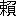

病める
枕辺に巻紙
状袋など入れたる箱あり、その上に寒暖計を置けり。その寒暖計に小き
輪飾をくくりつけたるは病中いささか新年をことほぐの心ながら
歯朶の枝の左右にひろごりたるさまもいとめでたし。その下に
橙を置き橙に並びてそれと同じ大きさほどの地球儀を
据ゑたり。この地球儀は二十世紀の年玉なりとて
鼠骨の贈りくれたるなり。直径三寸の地球をつくづくと見てあればいささかながら日本の国も特別に赤くそめられてあり。台湾の下には新日本と記したり。朝鮮満洲
吉林黒竜江などは紫色の内にあれど北京とも天津とも書きたる処なきは余りに心細き思ひせらる。二十世紀末の地球儀はこの赤き色と紫色との
如何に変りてあらんか、そは二十世紀
初の地球儀の知る所に
非ず。とにかくに状袋箱の上に並べられたる寒暖計と橙と地球儀と、これ我が病室の
蓬莱なり。
枕べの寒さ計りに新年の年ほぎ縄を掛けてほぐかも
（一月十六日）
一月七日の会に
麓のもて
来しつとこそいとやさしく興あるものなれ。長き手つけたる竹の
籠の小く浅きに木の葉にやあらん敷きなして土を盛り七草をいささかばかりづつぞ植ゑたる。一草ごとに三、四寸ばかりの札を立て添へたり。正面に
亀野座といふ札あるは
菫の
如き草なり。こは
仏の
座とあるべきを
縁喜物なれば仏の字を忌みたる植木師のわざなるべし。その左に
五行とあるは厚き細長き葉のやや白みを帯びたる、こは春になれば黄なる花の咲く草なり、これら皆寸にも足らず。その後に植ゑたるには
田平子の札あり。はこべらの事か。
真後に
芹と
薺とあり。薺は二寸ばかりも伸びてはや
蕾のふふみたるもゆかし。右側に植ゑて
鈴菜とあるは
丈三寸ばかり小松菜のたぐひならん。真中に
鈴白の札立てたるは葉五、六寸ばかりの
赤蕪にて
紅の根を半ば土の上にあらはしたるさま
殊にきはだちて目もさめなん心地する。『
源語』『
枕草子』などにもあるべき
趣なりかし。
あら玉の年のはじめの七くさを籠に植ゑて来し病めるわがため
（一月十七日）
この頃根岸
倶楽部より出版せられたる根岸の地図は
大槻博士の製作に
係り、地理の
細精に考証の確実なるのみならずわれら根岸人に取りてはいと面白く趣ある者なり。我らの住みたる処は今
鶯横町といへど昔は
狸横町といへりとぞ。
田舎路はまがりくねりておとづるる人のたづねわぶること吾が根岸のみかは、
抱一が句に「
山茶花や根岸はおなじ垣つゞき」また「さゞん花や根岸たづぬる革ふばこ」また一種の
風趣ならずや、さるに今は名物なりし山茶花かん
竹の生垣もほとほとその影をとどめず今めかしき石
煉瓦の垣さへ作り出でられ名ある樹木はこじ去られ
古への
奥州路の地蔵などもてはやされしも取りのけられ鶯の巣は鉄道のひびきにゆりおとされ
水
の声も汽笛にたたきつぶされ、およそ風致といふ風致は次第に失せてただ細路のくねりたるのみぞ昔のままなり
云々
と博士は
記せり。中にも鶯横町はくねり曲りて殊に分りにくき処なるに尋ね迷ひて
空しく帰る俗客もあるべしかし。
（一月十八日）
蕪村は
天明三年十二月二十四日に歿したれば
節季の混雑の中にこの世を去りたるなり。しかるにこの
忌日を太陽暦に引き直せば西洋紀元千七百八十四年一月十六日金曜日に当るとぞ。即ち翌年の始に歿したる事となるなり。
（一月二十日）
伊勢山田の
商人勾玉より小包送りこしけるを開き見ればくさぐさの品をそろへて目録一枚添へたり。
祈平癒呈
御両宮之真境（古版） 二
御神楽之図（地紙） 五
五十鈴川口のはぜ（薬といふ丑の日に釣る） 六
高倉山のしだ 一
いたつきのいゆといふなる高倉の御山のしだぞ箸としたまへ
辛丑のはじめ
大内人匂玉
まじめなる商人なるを思へば折にふれてのみやびもなかなかにゆかしくこそ。
（一月二十二日）
病床苦痛に堪へずあがきつうめきつ身も世もあらぬ心地なり。
傍らに二、三の人あり。その内の一人、人の耳ばかり見て居るとよつぽど変だよ、など話して笑ふ。我は
健かなる人は人の耳など見るものなることを始めて知りぬ。
（一月二十三日）
年頃苦しみつる局部の
痛の外に左横腹の痛
去年より強くなりて今ははや筆取りて物書く
能はざるほどになりしかば思ふ事腹にたまりて心さへ苦しくなりぬ。かくては生けるかひもなし。はた
如何にして病の
牀のつれづれを慰めてんや。思ひくし居るほどにふと考へ得たるところありて
終に
墨汁一滴といふものを書かましと思ひたちぬ。こは長きも二十行を
限とし短きは十行五行あるは一行二行もあるべし。病の
間をうかがひてその時胸に浮びたる事何にてもあれ書きちらさんには全く書かざるには勝りなんかとなり。されどかかるわらべめきたるものをことさらに掲げて諸君に
見えんとにはあらず、
朝々病の牀にありて新聞紙を
披きし時我書ける小文章に対して
聊か自ら慰むのみ。
筆禿びて返り咲くべき花もなし
（一月二十四日）
去年の夏頃ある雑誌に短歌の事を論じて
鉄幹子規と並記し両者同一趣味なるかの如くいへり。吾
以為へらく両者の短歌全く標準を異にす、鉄幹
是ならば子規
非なり、子規是ならば鉄幹非なり、鉄幹と子規とは並称すべき者にあらずと。
乃ち書を鉄幹に贈つて互に歌壇の敵となり我は『
明星』
所載の短歌を評せん事を約す。けだし両者を混じて同一趣味の如く思へる者のために
妄を弁ぜんとなり。
爾後病牀
寧日少く自ら筆を取らざる事数月いまだ前約を果さざるに、この事世に誤り伝へられ鉄幹子規
不可並称の説を以て
尊卑軽重に
因ると為すに至る。しかれどもこれらの事件は他の事件と聯絡して一時歌界の問題となり、
甲論乙駁喧擾を極めたるは世人をしてやや歌界に注目せしめたる者あり。新年以後病苦益

加はり殊に筆を取るに悩む。
終に前約を果す能はざるを
憾む。もし墨汁一滴の許す限において時に批評を試むるの機を得んかなほ
幸なり。
（一月二十五日）
俳句界は一般に一昨年の暮より昨年の前半に及びて勢を
逞うし後半はいたく衰へたり。
我短歌会は昨年の夏より秋にかけていちじるく進みたるが冬以後一
頓挫したるが如し。こは
固より
伎倆の
退きたるにあらず、されど進まざるなり。
吾見る所にては短歌会諸子は今に至りて一の工夫もなく変化もなくただ半年前に作りたる歌の言葉をあそこここ取り集めて
僅かに新作と
為しつつあるには
非るか。かくいふわれもその中の一人なり。さはれ我は諸子に向つて強ひて反省せよとはいはず。反省する者は反省せよ。立つ者は立て。行く者は行け。もし心
労れ
眼眠たき者は
永き夜の
眠を
貪るに
如かず。眠さめたる時
浦島の玉くしげくやしくも世は既に次の世と代りあるべきか
如何。
（一月二十七日）
人に物を贈るとて実用的の物を贈るは
賄賂に似て心よからぬ事あり。実用以外の物を贈りたるこそ贈りたる者は気安くして贈られたる者は興深けれ。今年の年玉とて
鼠骨のもたらせしは何々ぞ。三寸の地球儀、
大黒のはがきさし、
夷子の絵はがき、千人児童の図、
八幡太郎一代記の
絵草紙など。いとめづらし。
此を取り彼をひろげて
暫くは見くらべ読みこころみなどするに贈りし人の趣味は
自らこの取り合せの中にあらはれて
興尽くる事を知らず。
年玉を並べて置くや枕もと
（一月二十八日）
一本の扇子を以て自在に人を笑はしむるを
業とせる落語家の楽屋は存外厳格にして窮屈なる者なりとか聞きぬ。
芳菲山人の
滑稽家たるは人の知る所にして、狂歌に狂文に
諧謔百出尽くる所を知らず。しかもその人極めてまじめにしていつも腹立てて居るかと思はるるほどなり。我俳句仲間において俳句に滑稽趣味を発揮して成功したる者は
漱石なり。漱石最もまじめの性質にて学校にありて生徒を率ゐるにも厳格を主として不規律に流るるを許さず。
紫影の文章俳句常に滑稽趣味を離れず。この人また
甚だまじめの方にて、大口をあけて笑ふ事すら余り見うけたる事なし。これを思ふに真の滑稽は真面目なる人にして始めて
為し
能ふ者にやあるべき。
古の
蜀山一九は果して
如何なる人なりしか知らず。俳句界第一の滑稽家として世に知られたる
一茶は必ずまじめくさりたる人にてありしなるべし。
（一月三十日）
人の希望は初め漠然として大きく後
漸く小さく確実になるならひなり。我
病牀における希望は初めより極めて小さく、遠く
歩行き得ずともよし、庭の内だに歩行き得ばといひしは四、五年前の事なり。その後一、二年を経て、歩行き得ずとも立つ事を得ば
嬉しからん、と思ひしだに余りに小さき
望かなと人にも言ひて笑ひしが一昨年の夏よりは、立つ事は望まず坐るばかりは病の神も許されたきものぞ、などかこつほどになりぬ。しかも希望の縮小はなほここに止まらず。坐る事はともあれせめては一時間なりとも苦痛なく安らかに
臥し得ば如何に嬉しからんとはきのふ今日の我希望なり。小さき望かな。
最早我望もこの上は小さくなり得ぬほどの極度にまで達したり。この次の時期は希望の
零となる時期なり。希望の零となる時期、
釈迦はこれを
涅槃といひ
耶蘇はこれを救ひとやいふらん。
（一月三十一日）
『
大鏡』に
花山天皇の絵かき給ふ事を記して
さは走り車の輪には薄墨にぬらせ給ひて大さのほどやなどしるしには墨をにほはせ給へりし。げにかくこそかくべかりけれ。あまりに走る車はいつかは黒さのほどやは見え侍る。また筍の皮を男のおよびごとに入れてめかかうして児をおどせば顔赤めてゆゆしうおぢたるかた云々
などあり。また
俊頼の歌の
詞書にも
大殿より歌絵とおぼしく書たる絵をこれ歌によみなして奉れと仰ありければ、屋のつまに女をとこに逢ひたる前に梅花風に従ひて男の直衣の上に散りかかりたるに、をさなき児むかひ居て散りかかりたる花を拾ひとるかたある所をよめる
などあるを見るに
古の人は皆実地を写さんとつとめたるからに趣向にも画法にもさまざま工夫して新しき
画を作りにけん。土佐派
狩野派などいふ流派
盛になりゆき古の画を学び師の筆を
摸するに至りて
復画に新趣味といふ事なくなりたりと覚ゆ。こは画の上のみにはあらず歌もしかなり。
（二月一日）
われ筆を執る事が不自由になりしより後は誰か代りて書く人もがなと常に思へりしがこの頃
馬琴が『八犬伝』の某巻に附記せる文を見るに、初めに自己が失明の事、草稿を書くに困難なる事など述べ、次に
文渓堂及貸本屋などいふ者さへ聞知りて皆うれはしく思はぬはなく、ために代写すべき人を索るに意に称ふさる者のあるべくもあらず云々
とあるを見れば当時における馬琴の名望位地を以てしてもなほ思ふままにはならずと見えたり。なほその次に
吾孫興邦はなほ乳臭机心失せず。かつ武芸を好める本性なれば恁る幇助になるべくもあらず。他が母は人並ににじり書もすれば教へて代写させばやとやうやうに思ひかへしつ、第百七十七回の中音音が大茂林浜にて再生の段より代筆させて一字ごとに字を教へ一句ごとに仮名使を誨るに、婦人は普通の俗字だも知るは稀にて漢字雅言を知らず仮名使てにをはだにも弁へず扁旁すらこころ得ざるに、ただ言語をのみもて教へて写するわが苦心はいふべうもあらず。況て教を承て写く者は夢路を辿る心地して困じて果はうち泣くめり云々
など書ける、この文昔はただ
余所のあはれとのみ見しが今は一々身にしみて
我上の事となり了んぬ。されど馬琴は年老い功成り今まさに『八犬伝』の完結を急ぎつつあるなり。我身のいまだ発端をも書きあへず早く
已に大団円に近づかんとすると
固より同日に論ずべくもあらず。
（二月二日）
○伊藤圭助歿す九十余歳。英国女皇
崩ず八十余歳。
李鴻章逝く七十余歳。
○
星亨訴へられ、
鳩山和夫訴へられ、
島田三郎訴へらる。
○
朝汐負け、
荒岩負け、
源氏山負く。
○神田の
歳の市に死傷あり。大阪の
十日夷に死傷あり。大学第二医院の火事に死傷あり。
○背痛み、
臀痛み、横腹痛む。
（二月三日）
節分に豆を
撒くは今もする人あれどそれすら大方はすたれたり。ましてそのほかの事はいふもおろかなり。我郷里（伊予）にて幼き時に見覚えたる様はなほをかしき事多かり。その日になれば
男女の
乞食ども、女はお
多福の面を
被り、男は顔手足
総て真赤に塗り額に縄の角を結び手には竹のささらを持ちて鬼にいでたちたり。お多福先づ屋敷の
門の内に入り、手に持てる
升の豆を撒くまねしながら、
御繁昌様には福は内鬼は外、といふ。この時鬼は門外にありてささらにて地を打ち、鬼にもくれねば
這入らうか、と叫ぶ。そのいでたちの異様なるにその声さへ荒々しければ子供心にひたすら恐ろしく、もし門の内に這入り
来なばいかがはせんと思ひ惑へりし事今も記憶に残れり。鬼外にありてかくおびやかす時、お多福内より、福が一しよにもろてやろ、といふ。かくして彼らは餅、米、銭など
貰ひ
歩行くなり。やがてその日も
夕になれば主人は
肩衣を掛け豆の入りたる升を持ち、先づ
恵方に向きて豆を撒き、福は内鬼は外と呼ぶ。それより四方に向ひ豆を撒き福は内を呼ぶ。これと同時に
厨にては
田楽を焼き初む。味噌の
臭に鬼は逃ぐとぞいふなる。撒きたる豆はそを
蒲団の下に敷きて
寐れば腫物出づとて必ず拾ふ事なり。豆を家族の年の数ほど紙に包みてそれを
厄払にやるはいづこも同じ事ならん。たらの木に
鰯の頭さしたるを戸口々々に
挿むが多けれど
柊ばかりさしたるもなきにあらず。それも今はた行はるるやいかに。
（二月四日）
節分の夜に宝船の絵を敷寐して初夢をうらなふ事我郷里のみならず関西一般に同様なるべし。東京にては一月二日の夜に宝船を売りありくこそ心得ね。しかしこれも古き風俗と見え、『
滑稽太平記』といふ
書に
回禄以後鹿相成家居に越年して
去年たちて家居もあらた丸太かな 卜養
宝の船も浮ぶ泉水 玄札
この宝の船は種々の宝を船に積たる処を画に書回文の歌を書添へ元日か二日の夜しき寐して悪しき夢は川へ流す呪事なりとぞ、また年越の夜も敷事ある故に冬季ともいひたり、しかるに二つある物は前の季に用る行年をとらんためなればこの理近かるべしといへるもあり、されども玄札老功たり既にする時は如何とも春たるべしといふもありけり
と記せり。「元日か二日の夜」とあれば昔は二日の夜と限りたるにも
非るか。
（二月五日）
節分にはなほさまざまの事あり。
我昔の家に近かりし処に禅宗寺ありけるが星を祭るとて
燭あまたともし
大般若の転読とかをなす。本堂の
檐の下には板を掲げて白星黒星半黒星などを
画き各人来年の吉凶を示す。我も立ち寄りて珍しげに見るを常とす。一人の幼き友が我は白星なり、とて喜べば他の一人が、白星は
善過ぎてかへつて悪きなり半黒こそよけれ、などいふ。我もそを聞きて半黒を善きもののやうに思ひし事あり。またこの夜四辻にきたなき
犢鼻褌、
炮烙、
火吹竹など捨つるもあり。犢鼻褌の
類を捨つるは厄年の男女その厄を脱ぎ落すの意とかや。それも手に持ち
袂に入れなどして往きたるは
効なし、腰につけたるままにて往き、懐より手を入れて解き落すものぞ、などいふも聞きぬ。炮烙を捨つるは頭痛を直す
呪、火吹竹は
瘧の呪とかいへどたしかならず。
四十二の古ふんどしや厄落し
（二月六日）
我国語の字書は『
言海』の著述以後やうやうに進みつつあれどもなほ完全ならざるはいふに及ばず。我友竹村
黄塔（
鍛）は常に眼をここに注ぎ一生の事業として完全なる一大字書を作らんとは彼が唯一の望にてありき。その字書は普通の国語の外に各専門語を網羅しかつ各語の歴史即ちその起原及び意義の変遷をも記さんとする者なり。されど資力なくしてはこの種の大事業を
成就し得ざるを以て彼は字書
編纂の約束を以て一時
書肆冨山房に入りしかど教科書の事務に忙殺せられて志を遂ぐる能はず。終にここを捨てて女子高等師範学校の教官となりしは昨年春の事なりけん。
尋で九月始めて肺患に
罹り後赤十字社病院に入り療養を
尽し
効もなく今年二月一日に亡き人の数には入りたりとぞ。社会のために好字書の成らざりしを悲しまんか。我二十年の
交一朝にして絶えたるを悲しまんか。はた我に先だつて彼の逝きたるは彼も我も世の人もつゆ思ひまうけざりしをや。
我旧師
河東静渓先生に五子あり。黄塔はその第三子なり。出でて竹村氏を
嗣ぐ。第四子は
可全。第五子は
碧梧桐。黄塔三子あり皆幼。
（二月七日）
雑誌を見る時我読む部分と読まざる部分とあり。我読まざる部分は小説、新体詩、歌、俳句、文学の批評、政治上の議論など。我読む部分は雑録、歴史、地理、人物
月旦、農業工業商業等の一部なり。新体詩は四句ほど読み、詩は
圏点の多きを一首読み、随筆は二、三節読みて出来加減をためす事あり。俳句は一句か二句試みに読む事もあれど歌は読みて見んと思ひたる事もあらず。
（二月八日）
近日我
貧厨をにぎはしたる諸国の名物は何々ぞ。大阪の天王寺
蕪、函館の
赤蕪、秋田のはたはた魚、土佐のザボン及び
柑類、
越後の
鮭の
粕漬、
足柄の
唐黍餅、
五十鈴川の
沙魚、山形ののし梅、青森の
林檎羊羹、
越中の
干柿、伊予の
柚柑、
備前の沙魚、伊予の
緋の蕪及び絹皮ザボン、大阪のおこし、京都の
八橋煎餅、
上州の
干饂飩、
野州の
葱、
三河の魚煎餅、
石見の
鮎の卵、大阪の奈良漬、
駿州の
蜜柑、仙台の
鯛の粕漬、伊予の鯛の粕漬、神戸の牛のミソ漬、
下総の
雉、甲州の
月の
雫、伊勢の
蛤、大阪の白味噌、
大徳寺の法論味噌、
薩摩の薩摩芋、北海道の林檎、熊本の
飴、横須賀の水飴、北海道の

、そのほかアメリカの蜜柑とかいふはいと珍しき者なりき。
（二月九日）
十返舎一九の『
金草鞋』といふ絵草子二十四冊ほどあり。こは三都をはじめ六十余州の名所霊蹟巡覧記ともいふべき仕組なれど作者の知らぬ処を善きほどに書きなしたる者なれば実際を写し出さぬは
勿論、驚くべき誤も多かるが
如し。試みに四国八十八ヶ所
廻りの部を見るに岩屋山海岸寺といふ札所の図あり、その図
断崖の上に
伽藍聳えその
傍は海にして船舶を多く
画けり。こは海岸寺といふ名より想像して画きたりと思はるれど、その実この寺は海浜より十里余も隔りたる山の奥の奥にあるなり。寺の称をかくいふ故は
此処を
詠みし歌に、松の風を波の音と聞きまがへて海辺にある思ひす、といふやうなる意の歌あるに
因るとか聞きたれど歌は忘れたり。
この寺の建築は小き者なれど此処の地形は深山の中にありてあるいは
千仞の
危巌突兀として奈落を
踏み九天を支ふるが如きもあり、あるいは絶壁、
屏風なす立ちつづきて一水
潺々と流るる処もあり、とにかくこの辺無双の奇勝として
好事家の杖を
曳く者少からず。
（二月十日）
朝起きて見れば一面の銀世界、雪はふりやみたれど空はなほ曇れり。余もおくれじと高等中学の運動場に至れば早く已に集まりし人々、各級各組そこここに打ち群れて思ひ思ひの旗、フラフを
翻し、祝憲法発布、帝国万歳など書きたる中に、紅白の吹き流しを北風になびかせたるは
殊にきはだちていさましくぞ見えたる。二重橋の外に
鳳輦を拝みて万歳を三呼したる後余は
復学校の行列に加はらず、芝の
某の
館の園遊会に参らんとて行く途にて得たるは『日本』第一号なり。その附録にしたる憲法の表紙に三種の神器を画きたるは、今より見ればこそ幼稚ともいへ、その時はいと面白しと思へり。それより余は館に行きて
仮店太神楽などの催しに興の尽くる時もなく
夜深けて泥の氷りたる上を踏みつつ帰りしは十二年前の二月十一日の事なりき。十二年の歳月は
甚だ短きにもあらず『日本』はいよいよ健全にして我は空しく足なへとぞなりける。その時生れ出でたる憲法は果して
能く歩行し得るや否や。
（二月十一日）
『日本』へ俳句寄稿に
相成候諸君へ
申上候。
筆硯益
御清適の結果として小生の
枕辺に
玉稿の山を築きこの冬も大約一万句に達し
候事誠に
御出精の次第とかつ喜びかつ
賀し
奉り候。しかるところ玉稿拝読
致候に
御句の多き割合に佳句の少きは小生の遺憾とする所にして『日本』の俳句欄も投句のみを以て
填め
兼候場合も
不少候。選抜の比例を
申候はんに十分の一以上の比例を取り候は
格堂寒楼ら諸氏の作に候。その他は百分の一に当らざる者すら
有之候。多作第一とも称すべき
八重桜氏は毎季数千句を寄せられ一題の句数大方二十句より四、五十句に及び候。されどその句を見るに
徒に多きを
貪る者の如く平凡陳腐の句も
剽窃の句も
構はずやたらに
排列せられたるはやや厭はしく感じ申候。また一題百句など
数多寄せらるる人も有之候。一題百句は第一期の修行として極めて善き事なれどその中より佳句を抜き出す事は甚だ困難なるべく、ましてその題が
火燵、
頭巾、
火鉢、
蒲団の
類なるにおいては読まずしてその句の陳腐なること知れ申候。故に
箇様なる場合においては初めの十句ほどを読みその中に佳句なくば全体に佳句なき者として没書致すべく候。小生も追々衰弱に赴き候に
付二十句の
佳什を得るために千句以上を検閲せざるべからずとありては到底病脳の堪ふる所に非ず候。
何卒御自身
御選択の上御寄稿
被下候様希望候。以上。
（二月十二日）
毎朝
繃帯の取換をするに多少の痛みを感ずるのが
厭でならんから必ず新聞か雑誌か何かを読んで痛さを
紛らかして居る。痛みが烈しい時は新聞を
睨んで居るけれど何を読んで居るのか少しも分らないといふやうな事もあるがまた新聞の方が面白い時はいつの間にか時間が経過して居る事もある。それで思ひ出したが昔
関羽の絵を見たのに、関羽が片手に外科の手術を受けながら本を読んで居たので、手術も痛いであらうに平気で本を読んで居る処を見ると関羽は馬鹿に強い人だと小供心にひどく感心して居たのであつた。ナアニ今考へて見ると関羽もやはり読書でもつて痛さをごまかして居たのに違ひない。
（二月十三日）
徳川時代のありとある歌人を一堂に集め試みにこの歌人に向ひて、昔より伝へられたる数十百の歌集の中にて
最善き歌を多く集めたるは何の集ぞ、と問はん時、そは『万葉集』なり、と答へん者
賀茂真淵を始め三、四人もあるべきか。その三、四人の中には余り世人に知られぬ
平賀元義といふ人も必ず加はり居るなり。次にこれら歌人に向ひて、しからば我々の歌を作る手本として学ぶべきは何の集ぞ、と問はん時、そは『万葉集』なり、と
躊躇なく答へん者は平賀元義一人なるべし。万葉以後一千年の久しき間に万葉の真価を認めて万葉を
模倣し万葉調の歌を世に残したる者実に
備前の歌人平賀元義一人のみ。真淵の如きはただ万葉の皮相を見たるに過ぎざるなり。世に
羲之を尊敬せざる書家なく、
杜甫を尊敬せざる詩家なく、
芭蕉を尊敬せざる俳家なし。しかも羲之に似たる書、杜甫に似たる詩、芭蕉に似たる俳句に至りては幾百千年の間絶無にして
稀有なり。歌人の万葉におけるはこれに似てこれよりも更に
甚だしき者あり。彼らは万葉を尊敬し
人丸を歌聖とする事において全く一致しながらも
毫も万葉調の歌を作らんとはせざりしなり。この間においてただ一人の平賀元義なる者出でて万葉調の歌を作りしはむしろ不思議には
非るか。彼に万葉調の歌を作れと教へし先輩あるに非ず、彼の万葉調の歌を歓迎したる後進あるに非ず、しかも彼は
卓然として世俗の外に立ち独り喜んで万葉調の歌を作り少しも他を
顧ざりしはけだし心に
大に信ずる所なくんばあらざるなり。
（二月十四日）
天下の歌人
挙つて
古今調を学ぶ、元義笑つて
顧ざるなり。天下の歌人挙つて『新古今』を崇拝す、元義笑つて顧ざるなり。而して元義独り万葉を
宗とす、天下の歌人笑つて顧ざるなり。かくの如くして元義の名はその万葉調の歌と共に当時衆愚の嘲笑の
裏に葬られ今は全く世人に忘られ了らんとす。
忘られ了らんとする時、平賀元義なる名は昨年の夏
羽生某によりて岡山の新聞紙上に現されぬ、しかれどもこの時世に紹介せられしは「恋の平賀元義」なる題号の下に
奇矯なる歌人、潔癖ある国学者、恋の奴隷としての平賀元義にして、万葉以来唯一の歌人としての平賀元義には
非りき。幸にして備前
児島に
赤木格堂あり。元義かつてその地某家に寄寓せし縁故を以て元義の歌の散逸せる者を集めて一巻となしその
真筆十数枚とかの羽生某の文をも
併せて余に示す。
是において余は始めて平賀元義の名を知ると共にその歌の万葉調なるを見て一たびは驚き一たびは怪しみぬ。けだし余は幾多の歌集を見、幾多の歌人につきて研究したる結果、
真箇の万葉崇拝者をただ一人だに見出だす能はざるに失望し、歌人のふがひなく無見識なるは
殆ど
罵詈にも値せずと見くびり居る時に当りて始めて平賀元義の歌を得たるを以て余はむしろ不思議の感を起したるなり。まぬけのそろひともいふべき歌人らの中に万葉の趣味を解する者は半人もなきはずなるにそも元義は何に感じてかかく万葉には接近したる。ここ殆ど解すべからず。
（二月十五日）
元義の歌は
醇乎たる万葉調なり。故に『古今集』以後の歌の如き理窟と修飾との厭ふべき者を見ず。また実事実景に
非れば歌に詠みし事なし。故にその歌
真摯にして古雅
毫も後世
繊巧 媚
媚の弊に染まず。今数首を抄して一斑を示さん。
天保八年三月十八日自彦崎至長尾村途中
うしかひの子らにくはせと天地の神の盛りおける麦飯の山
五月三日望逢崎
柞葉の母を念へば児島の海逢崎の磯浪立ちさわぐ
五月九日過藤戸浦
あらたへの藤戸の浦に若和布売るおとひをとめは見れど飽かぬかも
逢崎賞月
まそかゞみ清き月夜に児島の海逢崎山に梅の散る見ゆ
望父峰
父の峰雪ふりつみて浜風の寒けく吹けば母をしぞ思ふ
小田渡口
古のますらたけをが渡りけん小田の渡りを吾も渡りつ
神崎博之宅小飲二首
こゝにして紅葉を見つゝ酒のめば昔の秋し思ほゆるかも
盃に散り来もみぢ葉みやびをの飲む盃に散り来もみぢ葉
（二月十六日）
元義の歌
児島備後三郎大人の詩の心を
吾大君ものなおもほし大君の御楯とならん我なけなくに
失題
大君の御門国守まなり坂月面白しあれ独り行く（御門国守まなり坂は皆地名）
高島の神島山を見に来れば磯まの浦に鶴さはに鳴く
妻ごみに籠りし神の神代より清の熊野に立てる雲かも
うへ山は山風寒しちゝの実の父の命の足冷ゆらしも
三家郷八幡大神の大御行幸を拝み奉りて
掛まくも文に恐き、いはまくも穴に尊き、広幡の八幡の御神、此浦の行幸の宮に、八百日日はありといへども、八月の今日を足日と、行幸して遊び坐せば、神主は御前に立ちて、幣帛を捧げ仕ふれ、真子なす御神の子等は、木綿あさね髪結ひ垂らし、胸乳をしあらはし出だし、裳緒をばほとに押し垂れ、歌ひ舞ひ仕へまつらふ、今日の尊さ
十一月三日芳野村看梅作歌
板倉と撫川の郷の、中を行く芳野の川の、川岸に幾許所開は、誰栽し梅にかあるらん、十一月の月の始を、早も咲有流
（二月十七日）
元義の歌
送大西景枝
真金吹く吉備の海に、朝なぎに来依る深海松、夕なぎに来依る○みる、深みるのよせて来し君、○みるのよせて来し君、いかなれや国へかへらす、ちゝのみの父を思へか、いとこやの妹を思へか、剣太刀腰に取佩き、古の本を手にぎり、国へかへらす
十二月五日御野郡の路上にて伊予の山を見てよめる歌并短歌
百足らず伊予路を見れば、山の末島の崎々、真白にぞみ雪ふりたれ、並立の山のこと／″＼、見渡の島のこと／″＼、冬といへど雪だに見えぬ、山陽の吉備の御国は、住よくありけり
反歌
吹風ものどに吹なり冬といへど雪だにふらぬ吉備の国内は
（二月十八日）
元義の歌には
妹または
吾妹子の語を用ゐる極めて多し。故に吾妹子先生の
諢名を負へりとぞ。けだし元義は熱情の人なりしを以て婦女に対する愛の
自ら
詞藻の上にあらはれしも多かるべく、彼が事実以外の事を歌に詠まざりきといふに思ひ合せても吾妹子の歌は必ず空想のみにも
非るべし。『古今集』以後空想の文字に過ぎざりし恋の歌は元義に至りて万葉の昔に
復り再び基礎を感情の上に置くに至れり。吾妹子の歌左に
失題
妹と二人暁露に立濡れて向つ峰上の月を看るかも
妹が家の向の山はま木の葉の若葉すゞしくおひいでにけり
鴨山の滝津白浪さにつらふをとめと二人見れど飽かぬかも
久方の天つ金山加佐米山雪ふりつめり妹は見つるや
（二月十九日）
元義
吾妹子の歌
遊于下原
石上ふりにし妹が園の梅見れどもあかず妹が園の梅
正月晦日
皆人の得がてにすちふ君を得て
吾率寝る夜は人な
来りそ
自玉島至下原途中
矢かたをうち出て見れば梅の花
咲有山辺に妹が家見ゆ
河辺渡口
若草の妻の子故に
川辺川しば／＼渡る
嬬の子故に
自下原至篠沖村路上
吾妹子を
山北に置きて
吾くれば浜風寒し
山南の海
夜更けて女のもとに行きて
有明の
月夜をあかみ
此園の
紅葉見に
来つ
其戸
令開
従児島還一宮途中
妹に恋ひ
汗入の山をこえ来れば春の月夜に
雁鳴きわたる
失題
妹が家の板戸
押ひらき
吾入れば太刀の
手上に花散りかゝる
夕闇の道は暗けど吾妹子に恋ひてすべなみ
出てくるかも
遠くともいそげ大まろ吾妹子に早も見せまくほしき此文
吾妹児破都婆那乎許多食良詩昔見四従肥坐二林
讃岐の国に渡りける時
吉備の児島の逢崎にて
逢崎は名にこそありけれはしけやし
吾妹が家は雲井かくりぬ
美作に在ける時故郷の酒妓のもとより文おこせければ
春の田をかへす／″＼も妹が文見つゝし居れば夜ぞあけにける
妹に関する歌は実に元義の歌の過半を占め居るなり。
（二月二十日）
元義の熱情は彼の不平と共に
澆ぎ出されて時に狂態を演ぜし事なきに
非るも、元来彼は堅固なる信仰と超絶せる識見の上に立ちて自己の主義を守るを本分としたる者にして、決して恋の奴隷となりて終るが如き者に非ず。さればその歌に吾妹子の語多きに対してますらをの語多きが如きまた以て彼が堂々たる
大丈夫を以て
自ら任じたるを知るに足る。ますらをの歌
西蕃漢張良賛
言あげて雖称つきじ月の没る西の戎の大丈夫ごゝろ
望加佐米山
高田のや加佐米の山のつむじ風ますらたけをが笠吹きはなつ
自庭妹郷至松島途中
大井川朝風寒み大丈夫と念ひてありし吾ぞはなひる
遊于梅園
丈夫はいたも痩せりき梅の花心つくして相見つるから
失題
天地の神に祈りて大丈夫を君にかならず令生ざらめや
鳥が鳴くあづまの旅に丈夫が出立将行春ぞ近づく
石竹もにくゝはあらねど丈夫の見るべき花は夏菊の花
業合大枝を訪ふ
弓柄とるますらをのこし思ふこととげずほとほとかへるべきかは
元義は
妹といはでもあるべき歌に妹の語を
濫用せしと同じく
丈夫といはでもあるべき歌に丈夫の語を濫用せり。
此の如き者即ち両面における元義の性情をあらはしたる者に外ならず。
（二月二十一日）
元義は大丈夫を以て、日本男児を以て、国学者を以て自ら任じたるべく、
詠歌の如きは
固よりその余技に属せしものならん。古学に対する彼の学説は必ず大いに聞くべきものありしならんも、今日において遺稿などの
其を
徴するに足るものなきは遺憾なり。今その歌について多少その主義を表したりと思ふものを挙げんに
失題
おほろかに思ふな子ども皇祖の御書に載れる神の宮処
喩高階騰麿
菅の根の長き春日を徒に暮らさん人は猿にかもおとる
題西蕃寿老人画
ことさへぐ国の長人さかづきに其が影うつせ妹にのません
和安田定三作
今日よりは朝廷たふとみさひづるや唐国人にへつらふなゆめ
備中闇師城に学舎をたてゝ漢文よませらるゝときゝて
暗四鬼の司人等ねがはくは皇御国の大道を行け
失題
大君の御稜威加賀焼日之本荷狂業須流奈痴廼漢人
（二月二十二日）
以上挙ぐる所を以て元義の歌の如何なるかはほぼこれを知る事を得べし。元義は終始万葉調を学ばんとしたるがためにその格調の
高古にして
些の俗気なきと共にその趣向は平淡にして変化に乏しきの感あり。されど時としては情の発する所格調の
如何を顧みるに
遑あらずしてやや異様の歌となる事なきに非ず。例
高階謙満宅宴飲
天照皇御神も酒に酔ひて吐き散らすをば許したまひき
述懐
大な
牟遅神の
命は袋
負ひをけの命は牛かひましき
失題
足引の山中
治左が
佩ける
太刀神代もきかずあはれ長太刀
五番町石橋の上で
我○○をたぐさにとりし
我妹子あはれ
弥兵衛が
十つかの
剣遂に抜きて
富子を
斬りて
二きだとなす
弥兵衛がこやせる
屍うじたかれ見る我さへにたぐりすらしも
吾
独知るとまをさばかむろぎのすくなひこなにつらくはれんか
弓削破只名二社在列弓削人八田乎婆雖作弓八不削
これらの歌多くは事に逢ふて
率爾に作りし者なるべく文字の
排列などには注意せざりしがために歌としては善きも悪きもあれどとにかく
天真爛漫なる処に元義の人物性情は
躍如としてあらはれ居るを見る。
（二月二十三日）
羽生某の記する所に
拠るに元義は岡山藩中老池田
勘解由の
臣平尾新兵衛
長治の子、壮年にして沖津氏の
厄介人（家の子）となりて沖津新吉直義（退去の際元義と改む）と名のりまた源猫彦と号したり。
弘化四年四月三十一日（卅日の誤か）藩籍を脱して（この時年卅六、七）四方に
流寓し後
遂に
上道郡
大多羅村の
路傍に倒死せり。こは明治五、六年の事にして六十五、六歳なりきといふ。
格堂の写し置ける元義の歌を見るに皆天保八年後の製作に係るが如く天保八年の歌は既に老成して毫も生硬渋滞の処を見ず。されば元義が一家の見識を立てて歌の上にも悟る所ありしは天保八年頃なりしなるべく弘化四年を卅六、七歳とすれば天保八年は其廿六、七歳に当るべし。されど弘化四年を卅六、七歳として推算すれば明治五、六年は六十二、三歳に当る訳なればここに記する年齢には違算ありて精確の者に非るが如し。
（二月二十四日）
元義の岡山を去りたるは人を
斬りしためなりともいひ不平のためなりともいふ。
元義は片足不具なりしため夏といへどもその片足に
足袋を
穿ちたり。よつて沖津の片足袋といふ
諢名を負ひたりといふ。
元義には妻なく時に婦女子に対して狂態を演ずる事あり。晩年
磐梨郡某社の
巫女のもとに
入夫の如く入りこみて男子二人を挙げしが後
長子は
窃盗罪にて捕へられ次子もまた不肖の者にて元義の
稿本抔は
散佚して尋ぬべからずといふ。
元義には潔癖あり。毎朝歯を磨くにも多量の塩を用ゐ
厠用の紙さへも少からず費すが如き有様なりしかば誰も元義の寄食し居るを好まざりきといふ。
元義は髪の結ひ方に好みありて数里の路を
厭はずある髪結師のもとに通ひたりといふ。
元義ある時刀の
鞘があやまつて僧の衣に触れたりとて
漆の
剥ぐるまでに鞘を磨きたりといふは必ずしも潔癖のみにはあらず彼の主義としてひたぶるに仏教を嫌ひたるがためなるべし。
元義は
藤井高尚の門人
業合大枝を訪ひて、志を話さんとせしに大枝は拒みて逢はざりきといふ。
元義には師匠なく弟子なしといふ。
元義に万葉の講義を請ひしに元義は
人丸の
太子追悼の長歌を幾度も朗詠して、歌は幾度も読めば
自ら分るものなり、といひきといふ。
脱藩の者は藩中に住むを許さざりしが元義は黙許の姿にて備前の田舎に住みきといふ。
元義の足跡は山陰山陽四国の外に出でず。京にも上りし事なしといふ。
以上事実の断片を集め見ば元義の性質と境遇とはほぼこれを知るを得べし。国学者としての元義は知らず、少くとも歌につきて
箇程の卓見を有せる元義が一人の同感者を持たざりしを思ひ、その境遇の箇程に不幸なりしを思ひ、その不平の如何に大なりしやを思ひ、その不平を漏らす所なきを思ひ、而して後に婦女に対するその熱情を思はば時に彼の狂態を演ずる者むしろ
憐むべく悲しむべきにあらずや。
（二月二十五日）
格堂の集録せる元義の歌を見るに短歌二百余首長歌十余首あり。この他は存否知るべからず。
元義の筆跡を見るに和様にあらずむしろ
唐様なり。多く習ひて得たる様にはあらでただ無造作に書きなせるものから大字も小字も一様にして渋滞の処を見ず。上手にはあらねど俗気なし。
万葉以後において歌人四人を得たり。
源実朝、
徳川宗武、
井手曙覧、
平賀元義これなり。実朝と宗武は貴人に生れて共に志を伸ばす能はざりし人、曙覧と元義は
固より
賤しききはにていづれも世に
容れられざりし人なり。宗武の将軍たる能はざりしに引きかへ実朝が名のみの将軍たりしはなほ慰むるに足るとせんか、しかも遂に
天年を全うするに至らざりしは千古の惨事とすべし。元義の終始不遇なるに対して曙覧が
春嶽の知遇を得たるは晩年やや意を得たるに近し、しかも二人共に王家の臣たる能はざりしは死してもなほ遺憾あるべきにや。
曙覧は
汚穢を嫌はざりし人、されど身のまはりは
小奇麗にありしかと思はる。元義は潔癖の人、されど何となくきたなき人には
非りしか。
四家の歌を見るに、実朝と宗武とは気高くして時に独造の処ある相似たり。
但宗武の方、覇気やや強きが如し。曙覧は見識の進歩的なる処、元義の保守的なるに勝れりとせんか、但伎倆の点において調子を解する点において曙覧は遂に元義に如かず。故に曙覧の歌の調子ととのはぬが多きに反して元義の歌は
殆ど皆調子ととのひたり。されど元義の歌はその取る所の趣向材料の範囲余りに狭きに過ぎて従つて変化に乏しきは彼の大歌人たる能はざる
所以なり。彼にしてもし
自ら大歌人たらんとする野心あらんかその歌の発達は
固より
此に止まらざりしや必せり。その歌の時に常則を脱する者あるは彼に発達し得べき材能の潜伏しありし事を証して
余あり。惜しいかな。
（二月二十六日）
近来雑誌の表紙を模様
色摺となしかつ用紙を舶来紙となす事流行す。体裁上の一進歩となす。
雑誌『
目不酔草』の表紙模様
不折の意匠に成る。面白し。
但何にでも梅の花や桜の花をくつつけるは不折の癖と知るべし。
雑誌『
明星』は体裁の
美麗なる事普通雑誌中第一のものなりしが遂に廃刊せし
由気の毒の至なり。今廃刊するほどならば最後の基本金募集の広告なからましかば、死際一層花を添へたらんかと思ふ。是非なし。
雑誌『精神界』は仏教の雑誌なり。始に
髑髏を
画きてその上に精神界の三字を書す。その様何とやら物質的に
開剖的に心理を研究する意かと思はれて仏教らしき感起らず。髑髏の
画のやや精細なるにも
因るならん。
雑誌『みのむし』は伊賀より出づる俳諧の雑誌なり。表紙に
芭蕪の葉を画けるにその画
拙くしてどうやら
蕪の葉に似たるやう思はる。
蕪村流行のこの頃なれば芭蕉翁も蕪村化したるにやといと
可笑し。
雑誌『太陽』の陽の字のつくり時に
易に
从ふものあり。そんな字は字引になし。
（二月二十七日）
『日本』へ寄せらるる俳句を見るに地方々々にて俳句の調にもその他の事にも多少の特色あり、従つて同地方の人は万事をかしきほどに似よりたる者あり。同一の俳句または最も善く似たる俳句が同地方の人二人の稿に殆ど同時に見出ださるる事などしばしばあれど、この場合にはいづれを原作としいづれを
剽窃とせんか、ほとほと定めかねて打ち捨つるを常とす。総じてその地方の俳句会
盛なる時はその会員の句皆面白く俳句会衰ふる時はあるだけの会員
悉く下手になる事不思議なるほどなり。
句風以外の特色をいはんか、鳥取の俳人は皆
四方太流の書体
巧なるに反して、
取手（
下総）辺の俳人はきたなき読みにくき字を書けり。
出雲の人は
無暗に多く作る癖ありて、京都の人の投書は四、五十句より多からず。大阪の人の用紙には大阪紙と
称ふるきめ粗き紙多く、
能代（
羽後）の人は必ず馬鹿に光沢多き紙を用ゐる。越中の人に限りて皆半紙を二つ切にしたるを二つに折りて小く句を書くなり。はがきに二句か三句認めあるはいづれの地方に限らず初心なる人の必ずする事なり。
（二月二十八日）
黄塔まだ世にありし頃余が書ける漢字の
画の
誤を正しくれし事あり。それより後よりより余も注意して字引をしらべ見るに余らの書ける
楷書は大半誤れる事を知りたれば左に一つ二つ誤りやすき字を記して世の誤を同じくする人に示す。
菫謹勤などの終りの横画は三本なり。二本に書くは非なり。活字にもこの頃二本の者を
拵へたり。
達の字の下の処の横画も三本なり、二本に非ず。
切の字の
扁は七なり。土扁に書く人多し。
助の字の扁は且なり。目扁に書く人多し。
※［＃「麾−毛」、42-8］※［＃「麾」の「毛」に代えて「手」」、42-8］※［＃「麾」の「毛」に代えて「石」」、42-8］※［＃「麾」の「毛」に代えて「鬼」」、42-8］などの中の方を林の字に書くは誤なり。この頃活字にもこの誤字を
拵へたれば注意あるべし。
※［＃「兎」の「儿」を「兔」のそれのように、42-10］※［＃「免」の「儿」を「兔」のそれのように、42-10］共に四角の中の
劃を外まで引き出すなり。活字を見るに
兎の字は正しけれど
免の字はことさらに二画に離したるが多し。しかしこれらは誤といふにも
非るか。
「つか」といふ字は
冢
にして
豕に点を打つなり。しかるに多少漢字を知る人にして
※［＃「わかんむり／一／豕」、42-12］※［＃「塚のつくりのわかんむりと豕の間に一」、42-12］の如く豕の上に一を引く人多し。されど
※［＃「わかんむり／一／豕」、42-13］※［＃「塚のつくりのわかんむりと豕の間に一」、42-13］皆
東韻にして「つか」の字にはあらず。
※［＃「入／王」、42-14］※［＃「兪／心」、42-14］などの
冠は入なり。人冠に非ず。
分貧などの冠は八なり。人にも入にも非ず。
神
※［＃「示＋氏」、43-1］の※
［＃「示＋氏」、43-1］の字は音「ぎ」にして
示扁に氏の字を書く。普通に
祗（氏の下に一を引く者）の字を書くは誤なり。祗は音「し」にして
祗候などの祗なり。
廢は広く「すたる」の意に用ゐる。

だれの
癈は不具の人をいふ。何処にでも
だれの方を用ゐる人多し。
○正誤 前々号墨汁一滴にある人に聞けるまま雑誌『明星』廃刊の由記したるに、廃刊にあらず、只今印刷中なり、と与謝野氏より通知ありたり。余はこの雑誌の健在を喜ぶと共にたやすく人言を信じたる粗相とを謝す。
（三月一日）
二月二十八日 晴。朝六時半
病牀眠起。家人
暖炉を
焚く。新聞を見る。昨日帝国議会停会を命ぜられし時の記事あり。
繃帯を取りかふ。
粥二
碗を
啜る。梅の俳句を
閲す。
今日は会席料理のもてなしを受くる約あり。水仙を漬物の
小桶に
活けかへよと命ずれば桶なしといふ。さらば水仙も竹の掛物も取りのけて
雛を祭れと命ず。
古紙雛と同じ
画の掛物、
傍に桃と
連翹を乱れさす。
左千夫来り
秀真来り
麓来る。左千夫は大きなる古釜を携へ来りて茶をもてなさんといふ。釜の
蓋は近頃秀真の
鋳たる者にしてつまみの車形は左千夫の意匠なり。麓は
利休手簡の軸を持ち来りて釜の上に掛く。その手紙の文に
牧渓の
画をほめて
我見ても久しくなりぬすみの絵のきちの掛物幾代出ぬらん
といふ狂歌を書けり。書法たしかなり。
左千夫茶を立つ。余も菓子一つ薄茶一碗。
五時頃料理出づ。麓主人役を勤む。献立左の如し。
味噌汁は三州味噌の煮漉、実は嫁菜、二椀代ふ。
鱠は鯉の甘酢、この酢の加減伝授なりと。余は皆喰ひて摺山葵ばかり残し置きしが茶の料理は喰ひ尽して一物を余さぬものとの掟に心づきて俄に当惑し山葵を味噌汁の中にかきまぜて飲む。大笑ひとなる。
平は小鯛の骨抜四尾。独活、花菜、山椒の芽、小鳥の叩き肉。
肴は鰈を焼いて煮たるやうなる者鰭と頭と尾とは取りのけあり。
口取は焼玉子、栄螺（？）栗、杏及び青き柑類の煮たる者。
香の物は奈良漬の大根。
飯と味噌汁とはいくらにても喰ひ次第、酒はつけきりにて平と同時に出しかつ飯かつ酒とちびちびやる。飯は太鼓飯つぎに盛りて出し各
椀にて食ふ。後の肴を待つ間は椀に一口の飯を残し置くものなりと。余は遂に料理の
半を残して
得喰はず。飯終りて
湯桶に塩湯を入れて出す。余は始めての会席料理なれば七十五日の長生すべしとて
心覚のため書きつけ置く。
点燈後
茶菓雑談。左千夫、その釜に一首を題せよといふ。余問ふ、湯のたぎる音
如何。左千夫いふ、釜大きけれど音かすかなり、波の遠音にも似たらんかと。
乃ち
題釜
氷解けて水の流るゝ音すなり 子規
（三月二日）
料理人帰り去りし後に聞けば会席料理のたましひは味噌汁にある
由、味噌汁の善悪にてその日の料理の優劣は定まるといへば我らの毎朝吸ふ味噌汁とは雲泥の差あることいふまでもなし。味噌を選ぶは
勿論、ダシに用ゐる
鰹節は土佐節の
上物三本位、それも善き部分だけを用ゐる、それ故味噌汁だけの
価三円以上にも上るといふ。（料理は総て五人前宛なれど汁は多く
拵へて余す
例なれば一鍋の汁の価と見るべし）その汁の中へ、知らざる事とはいへ、
山葵をまぜて
啜りたるは余りに心なきわざなりと料理人も
呆れつらん。この話を聞きて今更に
臍を
噬む。
茶の道には一定の方式あり。その方式をつくりたる精神を考ふれば皆相当の
理ある事なれどただその方式に
拘るために伝授とか許しとかいふ事まで出来て遂に茶の活趣味は人に知られぬ事となりたり。
茶道はなるべく自己の
意匠によりて新方式を作らざるべからず。その新方式といへども二度用ゐれば陳腐に
堕つる事あるべし。故に茶人の茶を
玩ぶは歌人の歌をつくり俳人の俳句をつくるが如く常に新鮮なる意匠を案出し臨機応変の材を要す。四畳半の茶室は甚だ妙なり。されど百畳の広間にて茶を玩ぶの工夫もなかるべからず。掛軸と
挿花と同時にせずといふも道理ある事なり。されど掛軸と挿花と同時にするの工夫もなかるべからず。
室の構造装飾より茶器の選択に至るまで方式にかかはらず時の
宜しきに従ふを
賞玩すべき事なり。
何事にも
半可通といふ俗人あり。茶の道にても茶器の伝来を説きて価の高きを善しと思へる半可通少からず。茶の料理なども料理として非常に進歩せるものなれど進歩の極、
堅魚節の二本と三本とによりて味噌汁の優劣を争ふに至りてはいはゆる半可通のひとりよがりに堕ちて余り好ましき事にあらず。
凡て物は極端に走るは可なれどその結果の有効なる程度に止めざるべからず。
茶道に配合上の調和を論ずる処は俳句の趣味に似たり。茶道は物事にきまりありて主客各
そのきまりを乱さざる処甚だ西洋の礼に似たりとある人いふ。
（三月三日）
誤りやすき字左に
盡は書畫の字よりは横画一本少きなり。
聿の如く書くは誤れり。
行書にて聿の如く書くことあれどもその場合には四箇の点を打たぬなり。
と

とには点あり。この点を知らぬ人多し。
學覺などいふ「かく」の字と
與譽などいふ「よ」の字とは
上半の中の処異なり。しかるに両者を混同して書ける者たとへば學の字の上半を
與の字の如く書ける者書籍の表題抔にも少からず。
※［＃「内」の「人」に代えて「入」、47-7］兩共に
入を誤りて人に書くが多し。
喬の
夭を天に誤り、
※［＃「聖」の「王」に代えて「壬」の下の横棒が長いもの、47-8］※［＃「門＜壬」、47-8］の
壬を王に誤るが多し。
傘は人冠に人四箇に十なり。しかるに十字の上にも中にも横の棒を引く事古きよりの習ひと見えたり。
吉の
士を土に誤り書く者多し。
舍は人冠に舌なり。されど人冠に土に口を書きし字も古き
法帖に見ゆ。
臼の下の処は一を引くなり。
兒も同じ。されどこの一の棒の中を切りて二画に書くは書きやすきためにや。
鼠（ねずみ）の上の処は
臼なり。しかるにこの頃

の字を書く人あり。後者は

獵臘などの字の
旁にて「ろふ」「れふ」の音なり。
易は日に勿なり。
賜の字。

の字など皆同じ。されど
陽揚腸場楊湯など
陽韻に属する字の旁は
易の字の真中に横の棒を加へたるなり。
獺 懶
懶などの旁は負なり
頁に非ず。
「ちり」は
塵なり。しかるに
艸冠をつけての字を書く人あり。後者は
艸名（よもぎの訓あり）ならん、「ちり」の字にはあらず。こは
塵の
草体が艸冠の如く見ゆるより誤りしか。
解は
角に刀に牛なり。牛の字を
井に誤るが多し。
漢字廃止論のあるこの頃かかる
些少の
誤謬を正すなど愚の
至なりと笑ふ人もあるべし。されど一日なりとも漢字を用ゐる上は誤なからんを期するは当然の事なり。いはんや国文に漢字を廃するも漢字は永久に滅びざるをや。但かかる事は数十年慣れ来りし誤を一朝に改めんとすれば非常に困難を覚ゆれど初め教へらるる時に正しき字を教へこまるれば何の困難もなき事なり。小学校の先生たちなるべく正しき字を教へたまへ。
（三月四日）
誤りやすき字左に
段鍛は「たん」にして假蝦鰕霞遐は「か」なり。段と

と
扁もつくりも異なるを混同して書く人多し。
蒹葭は「あし」「よし」の類なるべし。
葭簀張の葭も同字なり。しかるに近頃
葮の字を用ゐる人あり。後者は字引に「むくげ」とあるはたしかならねど「よし」にあらざるは勿論なり。
「おき」は
沖なり。しかるにこの頃は
二水の
冲の字を用ゐる人多し。両字とも水深の意なきにあらねど
我邦にて「おき」の意に用ゐるは字義より来るに非ずしてむしろ
水の真
中といふ字の組立より来るに
非るか。
汽車の汽を

と書く人多し。字引に汽は
水气也とあるを福沢翁の見つけ出して訳字に当てたるなりと。
の字もあれど意義異なり。
四の字の中は片仮名のルの字の如く右へ曲ぐるなり。
讀贖などのつくりの中の処も四を書くなり。されど
賣の字の中の処は四の字に非ず。右へ曲ぐる事なく真直に引くなり。いささかの事故どうでもよけれどただ讀（とく）のつくりが賣（ばい）の字に非ることを知るべし。
奇の字の上の処は大の字なり。奇の字を字引で引かんとならば大の部を見ざるべからず。されど立の字の如く書くも古き
代よりの事なるべし。
逢蓬峯は「ほう」にして
降絳は「こう」なり。終りの処少し違へり。
※［＃「女＋」、49-15］（ひめ）の字のつくりは臣に非ず。
士と土、爪と瓜、岡と
罔、齊と齋、
戊と
戌、これらの区別は大方知らぬ人もなけれど
商（あきなひ）と

（音テキ）、
班（わかつ）と
斑（まだら）の区別はなほ知らぬ人少なからず。
以上挙げたる誤字の中にも古くより書きならはして一般に通ずる者は必ずしも改むるにも及ばざるべし。但甲の字と乙の字と取り違へたるは是非とも正さざるべからず。
甲の字と乙の字と取り違へたる場合は致し方なけれど或る字の画を誤りたる場合はこれを印刷に附する時は
自ら正しき活字に直る故印刷物には誤字少き訳なり。けだし活字の初は『
康熙字典』によりて一字々々作りたりといへば活字は極めて正しき者にてありき。しかるに近来出来たる活字は無学なる人の
杜撰に作りしものありと見えて往々
偽字を発見する事あり。せめては活字だけにても正しくして世の
惑を増さざるやうしたき者なり。
（三月五日）
自分は子供の時から湯に入る事が大嫌ひだ。熱き湯に入ると体がくたびれてその日は仕事が出来ぬ。一日汗を流して労働した者が労働がすんでから湯に入るのは如何にも愉快さうで
草臥が直るであらうと思はれるがその他の者で毎日のやうに湯に行くのは男にせよ女にせよ必ずなまけ者にきまつて居る。殊に
楊枝をくはへて朝湯に出かけるなどといふのは堕落の極である。東京の銭湯は余り熱いから少しぬるくしたら善からうとも思ふたがいつそ銭湯などは
罷めてしまふて皆々冷水摩擦をやつたら日本人も少しは活溌になるであらう。熱い湯に酔ふて
熟柿のやうになつて、ああ善い心持だ、などといふて居る内に日本銀行の金貨はどんどんと皆外国へ出て往てしまふ。
（三月六日）
自分が病気になつて後ある人が病牀のなぐさめにもと心がけて
鉄網の大鳥籠を借りて来てくれたのでそれを窓先に据ゑて小鳥を十羽ばかり入れて置いた。その中にある水鉢の水をかへてやると総ての鳥が下りて来て争ふて水をあびる様が面白いので病牀からながめて楽しんで居る。水鉢を置いてまだ手を引かぬ内にヒワが一番先に下りて浴びる。浴び様も一番上手だ。ヒワが浴びるのは勢ひが善いので
目たたく間に鉢の水を半分位羽ではたき散らしてしまふ。そこで外の鳥は残りの乏しい水で順々に浴びなくてはならぬやうになる。それを予防するつもりでもあるまいが後にはヒワが先づ浴びようとするとキンバラが二羽で下りて来てヒワを追ひ出し二羽並んで浴びてしまふ。その後でジヤガタラ雀が浴びる。キンカ鳥も浴びる。カナリヤも浴びる。
暫くは水鉢のほとりには先番後番と鳥が詰めかけて居る。浴びてすんだ奴は皆高いとまり木にとまつて
頻りに羽ばたきして居る。その様が実に愉快さうに見える。考へて見ると自分が湯に入る事が出来ぬやうになつてからもう五年になる。
（三月七日）
余は漢字を知る者に非ず。知らざるが故に今更に誤字に気のつきしほどの事なれば余の言ふ所必ず誤あらんとあやぶみしが果してある人より教をたまはりたり。
因つて正誤かたがたこれを載せ
併せてその好意を謝す。
（略）
獺懶等の
旁は負なり
頁にあらずとせられ候へども負にあらず※
［＃「刀／貝」、52-4］の字にて貝の上は刀に候勝負の負とは少しく異なり候右等の字は
剌より音生じ候また※
［＃「聖」の「王」に代えて「壬」の下の横棒が長いもの、52-5］の下は壬にあらず※
［＃「壬」の下の横棒が長いもの、52-5］（音テイ）に候※
［＃「呈」の「王」に代えて「壬」の下の横棒が長いもの、52-6］※
［＃「望」の「王」に代えて「壬」の下の横棒が長いもの、52-6］等皆同様に御座候右些細の事に候へども気付たるまま（一老人
投）
またある人より
（略）菩薩薩摩の薩は字原薛なり博愛堂『集古印譜』に薩摩国印は薛……とあり訳経師が仮釈にて薛に二点添付したるを元明より産の字に作り字典は薩としあるなり唐には決して産に書せず云々
右の誤は字典にもあり
麑島人も仏教家も一般に知らであれば正したき
由いひこされたり。
（三月八日）
雑誌『日本人』に「春」を論じて「我国は
旧と太陰暦を用ゐ正月を以て春の初めと為ししが」云々とあり。語
簡に過ぎて解しかぬる点もあれど昔は歳の
初即正月元旦を以て春の初となしたりとの意ならん。陰暦時代には便宜上一、二、三の三箇月を以て春とし四、五、六の三箇月を以て夏となし
乃至秋冬も同例に三箇月宛を取りしこといふまでもなし。されど陰暦にては一年十二箇月に限らず、十三箇月なる事も多ければその場合には四季の内いづれか四箇月を取らざるべからず。これがために気候と月日と一致せず、去年の正月初と今年の正月初といたく気候の相異を来すに至るを以て陰暦時代にても厳格にいへば歳の初を春の初とはなさず、立春（冬至後約四十五日）を以て春の初と定めたるなり。その証は古くより年内立春などいふ歌の題あり、『古今集』開巻第一に
年の内に春は来にけり一年を去年とやいはむ今年とやいはむ
とあるもこの事なり。この歌の意は歳の初と春の初とは異なり、さればいづれを計算の初となすべきかと疑へる者なればこれを裏面より見ればこの頃にても普通には便宜上歳の初を春の初となしたる事なるべし。されど朝廷の儀式にも特に立春の日を選びてする事あり。『
公事根源』に
供若水 立春日
若水といふ事は去年御生気の方の井をてんして蓋をして人に汲せず、春立つ日主水司内裏に奉れば朝餉にてこれをきこしめすなり、荒玉の春立つ日これを奉れば若水とは申すにや云々
とあるを見ても知るべし。平民社会にては立春の儀式といふ事は知らねど節分（立春前一夜）の儀式は種々ありて今日に至るまでその幾分を存せり。中にもこの夜各
の年齢の数に一つ増したるだけの
熬豆を紙に包みて
厄払に与へ来年の厄を払はしむるが如きは明かに立春を以て計算の初となし立春に入る事によりて新たに齢一つを加ふる者と定めたるを見るべし。（陰暦の正月元日は立春に最も近き
朔日を取りたる者なれば元日と立春と十五日以上の差違ある事なし。されど元日前十五日立春の年と元日後十五日立春の年とを比較すれば気候に三十日の遅速あり）
右の如く昔は歳初と春初と区別あるが如くなきが如く曖昧に過ぎ来りしが明治に至り陽暦の
頒布と共に陰暦は公式上廃せられたれば両者は断然と区別せられて一月一日は毎年冬季中に来る者と定まれり。この際に当りて春夏秋冬の限界については何らの規定する所なければ余は依然として立春立夏立秋立冬を以て四季の限界とする説に従ひ居るなり。元来この立春立夏等の節は陰暦時代にも用ゐられたれどその実月の
盈虧には何らの関係もなくかへつて太陽の位置より算出せし者なればこれを太陽暦と並び用ゐて
毫も矛盾せざるのみならず毎年ほぼ同一の日に当るを以て記憶にも甚だ便利あり。
雑誌『日本人』の説は西洋流に三、四、五の三箇月を春とせんとの事なれども、我邦には二千年来の習慣ありてその習慣上定まりたる四季の限界を今日に至り
忽ち変更せられては気候の感厚き詩人文人に取りて迷惑少からず。されど細かにいへば今日までの規定も習慣上に得たる四季の感と多少一致せざるかの疑なきに非ず。もつとも気候は地方によりて非常の差違あり、殊に我邦の如く南北に長き国は千島のはてと台湾のはてと同様に論ずべきにあらねど、試に中央東京の地についていはんに（京都も大差なかるべし）立春（二月四日頃）後半月位は寒気強くして冬の感去らず。立秋（八月八日頃）後半月位は暑気強くして秋の感起らず。また菊と紅葉とは古来秋に定めたれど実際は立冬（十一月八日頃）後半月位の間に盛なり。故に東京の気候を以ていはんには立春も立夏も立秋も立冬も十五日宛繰り下げてかへつて善きかと思はるるなり。されば西洋の規定と実際は大差なき訳となる。しかしながらこは
私に定むべき事にもあらねば無論旧例に依るを可とすべきか。（西洋の規定は東京よりはやや寒き地方より出でし規定に非るか）
（三月九日）
自個の著作を売りて原稿料を取るは少しも悪き事に非ず。されどその著作の目的が原稿料を取るといふ事より外に何もなかりしとすれば、著者の心の
賤しき事いふまでもなし。近頃出版せられたる
秋竹の『明治俳句』は果して何らの目的を以て作りたるか。秋竹は俳句を善くする者なり。俳句に堪能なる秋竹が俳句の集を選びたるは似つかはしき事にして、素人の
杜撰なるものと同日に見るべからず。されど秋竹は始めより俳書
編纂の志ありしか、近来俳句に疎遠なる秋竹が何故に
俄に俳句編纂を思ひ立ちたるか。この句集が如何なる手段によつて集められしかは問ふ所に非ず。この書物を出版するにつき、秋竹が何故に苦しき序文を書きしかは余の問ふ所に非ず。もし余の邪推を
明にいはば、秋竹は金まうけのためにこの編纂を思ひつきたるならん。秋竹もし一点の誠意を以て俳句の編纂に従事せんか、その手段の如何にかかはらずこれを賛成せん。されど余は秋竹の腐敗せざるかを疑ふなり。さはれ余は個人として秋竹を攻撃せんとには非ず。今の新著作かくの如きもの十の九に居る故に特に秋竹を仮りていふのみ。
（三月十日）
漢字廃止、
羅馬字採用または新字製造などの
遼遠なる論は知らず。余は極めて手近なる必要に応ぜんために至急
新仮字の製造を望む者なり。その新仮字に二種あり。一は
拗音促音を一字にて現はし得るやうなる者にして例せば茶の仮字を「ちや」「チヤ」などの如く二字に書かずして一字に書くやうにするなり。「しよ」（書）「きよ」（虚）「くわ」（花）「しゆ」（朱）の如き類皆同じ。促音は普通「つ」の字を以て現はせどもこは仮字を用ゐずして他の符号を用ゐるやうにしたしと思ふ。しかし「しゆ」「ちゆ」等の拗音の韻文上一音なると違ひ促音は二音なればその符号をしてやはり一字分の面積を与ふるも可ならん。
他の一種は外国語にある音にして我邦になき者を書きあらはし得る新字なり。
これらの新字を作るは極めて容易の事にして殆ど考案を費さずして出来得べしと信ず。試にいはんか朱の仮字は「し」と「ユ」または「ゆ」の二字を結びつけたる如き者を少し変化して用ゐ、著の仮字は「ち」と「ヨ」または「よ」の二字を結びつけたるを少し変化して用ゐるが如くこの例を以て他の字をも作らば名は新字といへどその実旧字の変化に過ぎずして新に新字を学ぶの必要もなく極めて便利なるべしと信ず。また外国音の方は外国の原字をそのまま用ゐるかまたは多少変化してこれを用ゐ、五母音の変化を示すためには速記法の符号を用ゐるかまたは拗音の場合に言ひし如く
仮字をくつつけても可なるべし。とにかくに仕事は簡単にして容易なり。かつ新仮字増補の主意は、強制的に行はぬ以上は、唯一人反対する者なかるべし。余は二、三十人の学者たちが集りて試に新仮字を作りこれを世に公にせられん事を望むなり。
（三月十一日）
不平十ヶ条
一、元老の死にさうで死なぬ不平
一、いくさの始まりさうで始まらぬ不平
一、大きな頭の出ぬ不平
一、郵便の消印が読めぬ不平
一、白米小売相場の容易に下落せぬ不平
一、板ガラスの日本で出来ぬ不平
一、日本画家に油絵の味が分らぬ不平
一、西洋人に日本酒の味が分らぬ不平
一、野道の真直について居らぬ不平
一、人間に羽の生えて居らぬ不平
（三月十二日）
多くの人の俳句を見るに自己の頭脳をしぼりてしぼり出したるは誠に少く、新聞雑誌に出たる他人の句を五文字ばかり置きかへて何知らぬ顔にてまた新聞雑誌へ投書するなり。一例を挙げていはば
○○○○○裏の小山に上りけり
といふ十二字ありとせんに
初五に何にても季の題を置きて句とするなり。「長き日の」「のどかさの」「霞む日の」「
炉塞いで」「桜咲く」「名月や」「小春日の」等そのほか如何なる題にても大方つかぬといふはなし。実に重宝なる十二字なり。あるいは
灯をともす石燈籠や○○○○○
といふ十二字を得たらば「梅の花」「糸柳」「糸桜」「春の雨」「夕涼み」「庭の雪」「夕
時雨」などそのほか様々なる題をくつつけるなり。あるいは
広目屋の広告通る○○○○○
といふ十二字ならば「春日かな」「日永かな」「柳かな」「桜かな」「暖き」「小春かな」などを置くなり。これがためには
予てより新聞雑誌の俳句を切り抜き置き、いざ句作といふ時にそれをひろげてあちらこちらを取り合せ、十句にても百句にてもたちどころに成るを
直にこれを投書として郵便に附す。選者もしその陳腐
剽窃なることを知らずして一句にても二句にてもこれを載すれば、投句者は鬼の首を
獲たらん如くに喜びて友人に誇り示す。
此の如き模倣剽窃の時期は誰にも一度はある事なれど、幾年経てもこの泥棒的境涯を脱し得ざる人あり。気の毒の事なり。
（三月十三日）
今日は病室の掃除だといふので昼飯後
寐牀を座敷の方へ移された。この二、三日は右向になつての仕事が過ぎたためでもあるか
漸く減じて居た局部の
痛がまた少し増して来たので、座敷へ移つてからは左向に寐て痛所をいたはつて居た。いつもガラス障子の室に居たから紙障子に松の影が写つて居るのも趣が変つて初めは面白かつたが、遂にはそれも眼に入らぬやうになつてただ痛ばかりがチクチクと感ぜられる。いくら
馴れて見ても痛むのはやはり痛いので閉口して居ると、六つになる
隣の女の子が画いたといふ
画を内の者が持つて来て見せた。見ると一尺ばかりの洋紙の
小切に墨で画いてある。真中に支那風の城門（勿論輪郭ばかり）を力ある線にて真直に画いて
城楼の棟には鳥が一羽とまつて居る。この城門の
粉本は錦絵にあつたかも知らぬが、その城楼の窓の処を横に三分して「オ、シ、ロ」の三字が一区劃に一字づつ書いてあるのは新奇の意匠に違ひない。実に奇想だ。それから城門の下には猫が寐て居る。その上に「ネコ」と書いてある。輪郭ばかりであるが
慥かに猫と見える。猫の右側には女の立つて居る処が画いてあるが、お
児髷で振袖で下駄はいてしかも片足を前へ蹈み出して居る処まで分る。帯も後側だけは画いてある。城門の左側には自分の名前が正しく書けて居る。見れば見るほど実に面白い。城門に猫に少女といふ無意識の配合も面白いが棟の上に鳥が一羽居る処は実に妙で、最高い処に鳥が
囀つて居て最低い処に猫が寐て居る意匠
抔は古今の名画といふても善い。見て居る内に余は興に乗つて来たので
直に朱筆を取つて先づ城楼の左右に日の丸の旗を一本宛画いた。それから猫に赤い首玉を入れて鈴をつけて、女の襟と袖口と帯とに赤い線を少し引いて、頭には
総のついた
釵を一本
着けた。それから左の方の名前の下に裸人形の形をなるべく子供らしく画いて、最後に小鳥の羽をチヨイと赤くした。さてこの合作の画を遠ざけて見ると墨と朱と善く調和して居る。うれしくてたまらぬ。そこで
乾菓子や西洋菓子の美しいのをこの画に添へて、
御褒美だといふて隣へ持たせてやつた。
（三月十四日）
散歩の
楽、旅行の楽、能楽演劇を見る楽、寄席に行く楽、見せ物興行物を見る楽、展覧会を見る楽、花見月見雪見等に行く楽、細君を携へて
湯治に行く楽、
紅燈緑酒美人の膝を枕にする楽、目黒の茶屋に俳句会を催して栗飯の腹を
鼓する楽、
道灌山に武蔵野の広きを眺めて
崖端の茶店に柿をかじる楽。歩行の自由、
坐臥の自由、寐返りの自由、足を伸す自由、人を訪ふ自由、集会に臨む自由、
厠に行く自由、書籍を捜索する自由、
癇癪の起りし時腹いせに外へ出て行く自由、ヤレ火事ヤレ地震といふ時に早速飛び出す自由。――総ての楽、総ての自由は
尽く余の身より奪ひ去られて僅かに残る一つの楽と一つの自由、即ち飲食の楽と執筆の自由なり。しかも今や局部の疼痛
劇しくして執筆の自由は殆ど奪はれ、腸胃
漸く衰弱して飲食の楽またその過半を奪はれぬ。アア何を楽に残る月日を送るべきか。
耶蘇信者
某一日余の
枕辺に来り説いて
曰くこの世は短いです、次の世は永いです、あなたはキリストのおよみ返りを信ずる事によつて幸福でありますと。余は某の好意に対して深く感謝の意を表する者なれども、
奈何せん余が現在の苦痛余り劇しくしていまだ永遠の幸福を謀るに
暇あらず。願くは神先づ余に一日の
間を与へて二十四時の
間自由に身を動かしたらふく食を
貪らしめよ。而して後に
徐ろに永遠の幸福を考へ見んか。
○正誤 関羽外科の療治の際は読書にあらずして囲碁なりと。
（三月十五日）
名前ばかり聞きたる人の容貌をとあらんかくあらんと想像するは誰もする事なるがさてその人に逢ふて見ればいづれも意外なる顔つきに驚かぬはあらず。この頃
破笛の日記を見たるに左の一節あり。
東京鳴球氏より郵送せられし子規先生の写真及び蕪村忌の写真が届きしは十日の晩なり。余は初めて子規先生の写真を見て実に驚きたり。多年病魔と戦つてこの大業を成したるの勇気は凛乎として眉宇の間に現はれ居れどもその枯燥の態は余をして無遠慮にいはしむれば全く活きたる羅漢なり。『日本』紙上連日の俳句和歌時に文章如何にしてこの人より出づるかを疑ふまでに余は深き感に撃たれたり。
蕪村忌写真中余の面識ある者は鳴球氏一人のみ。前面の虚子氏はもつと勿体ぶつて居るかと思ひしに一向無造作なる風采なり。鳴雪翁は大老人にあらずして還暦には今一ト昔もありさうに思はる。独り洋装したるは碧梧桐氏にして眼鏡の裏に黒眸を輝かせり。他の諸氏の皆年若なるには一驚を喫したり。
去る頃ある雑誌に「竹の里人が
禿頭を振り立てて」など書ける投書あるを見たり。竹の里人を六十、七十の老人と見たるにや。もしこれらの人の想像通りに諸家の容貌を描き出さしめば更に面白からん。
（三月十六日）
誤りやすき字につきて或人は盡の上部は
聿なり
※［＃「門＜壬」、63-11］の中は王なりなど『
説文』を引きて論ぜられ、
不折は古碑の文字古法帖の文字
抔を
目のあたり示して※
［＃「入／王」、63-12］※
［＃「内」の「人」に代えて「入」、63-12］吉などの字の必ずしも入にあらず必ずしも士にあらざる事を説明せり。かく専門的の攻撃に
遇ひては余ら『
康熙字典』位を標準とせし素人先生はその可否の判断すら為しかねて今は口をつぐむより外なきに至りたり。なほ誤字につきて記する所あらんとせしが何となくおぢ気つきたれば最早知つた風の学者ぶりは一切為さざるべし。
漢字の研究は日本文法の研究の如く時代により人により異同変遷あるを以て多少の困難を免れず。『説文』により古碑の文字により比較考証してその正否を研究するは面白き一種の学問ならんもそは専門家の事にして普通の人の
能くする所にあらず。普通の人が楷書の標準として見んはやはり『康熙字典』にて十分ならん。ただ余が先に余り些細なる事を
誤謬といひし故にこの攻撃も出で来しなればそれらは取り消すべし。されど甲の字と乙の字と取り違へたるほどの大誤謬（
祟タタルを
崇アガムに誤るが如き）は厳しくこれを正さざるべからず。
附記、ある人より舍の字は人冠に舌に非ず人冠に干に口なる由いひこされ、またある人より協議の協を恊に書くは誤れる由いひこされたり。
（三月十七日）
宝引（ほうびき）といふ事俳句正月の題にあれど何の事とも知らずただ福引の類ならんと思ひてありしがこの頃
虹原の説明を聞きて疑解けたり。虹原の郷里（
羽前）にてはホツピキと
称へて正月には今もして遊ぶなりと。その様は男女十人ばかり（男三分女七分位なるが多く、
下婢下男抔もまじる事あり）ある家に打ち
集ひ食物または金銭を賭け（善き家にては多く食物を賭け一般の家にては多く金銭を賭くとぞ）くじを引いてこれを取るなり。くじは十人ならば四、五尺ばかりの縄十本を用意し、親となりたる者一人その縄を取りてその中の一本に環または二文銭または
胡桃の殻などを結びつく。これを胴ふぐりといふ、これ当りくじなり。親は十本の縄の片端は自分の片手にまとひ他の一端を前に投げ出す。元禄頃の句に
宝引のしだれ柳や君が袖 失名
とあるは親が縄を持ちながら胴ふぐりを見せじとその手を袖の中に引つこめたる処を形容したるにや。かくて投げ出したる縄を各
一本づつ引きてそのうち胴ふぐりを引きあてたる者がその場の賭物を取る。その勝ちたる者代りて次の親となる定めにて、胴ふぐり親の手に残りたる時はこれを親返りといふとぞ。
保昌が力引くなり胴ふぐり 其角
宝引や力ぢや取れぬ巴どの 雨青
時宗が腕の強さよ胴ふぐり 沾峩
などいふ句は争ふて縄を引張る処をいへるなるべく
宝引やさあと伏見の登り船 山隣
といふ句は各
が縄を引く処を伏見の引船の綱を引く様に見立てたるならん。
宝引に夜を寐ぬ顔の朧かな 李由
宝引の花ならば昼を蕾かな 遊客
などいふ句あるを見れば宝引はおもに夜の遊びと見えたり。そのほか宝引の句
宝引に蝸牛の角をたゝくなり 其角
投げ出すや己引き得し胴ふぐり 太祇
宝引や和君裸にして見せん 嘯山
宝引や今度は阿子に参らせん 之房
宝引の宵は過ぎつゝ逢はぬ恋 几董
結神
宝引やどれが結んであらうやら 李流
（三月十八日）
病室の三方には
襖が十枚あつて茶色の紙で貼つてあるがその茶色も銀の雲形も大方はげてしまふた。左の方の柱には古笠と
古蓑とが掛けてあつて、右の方の
暖炉の上には写真板の手紙の額が黒くなつて居る。北側の
間半の壁には坊さんの書いた
寒山の詩の小幅が掛つて居るが極めて渋い字である。どちらを見ても甚だ陰気で
淋しい感じであつた。その間へ大黒様の状さしを掛けた。病室が
俄かに笑ひ出した。
（三月十九日）
頭の黒い
真宗坊さんが自分の枕元に来て、君の文章を見ると君は病気のために時々大問題に
到著して居る事があるといふた。それは意外であつた。
病牀に日毎餅食ふ彼岸かな
（三月二十日）
露伴の『二日物語』といふが出たから久しぶりで読んで見て、露伴がこんなまづい文章（趣向にあらず）を作つたかと驚いた。それを世間では明治の名文だの修辞の妙を極めて居るだのと評して居る。各人批評の標準がそんなに違ふものであらうか。
（三月二十一日）
三日後の天気予報を出してもらひたい。
（三月二十二日）
大阪の雑誌『宝船』第一号に、
蘆陰舎百堂なる者が三世
夜半亭を継ぎたりと説きその証として「
平安夜半翁三世
浪花蘆陰舎」と書ける当人の文を挙げたり。されどこはいみじき誤なり。「夜半翁三世」といふは
蕪村より三代に当るといふ事にて「三世夜半亭」といふ事に非ず。もし三世夜半亭の意ならば重ねて蘆陰舎といふ舎号を書くはずもあるまじ。思ふにこの人
大魯の門弟にて蕪村の又弟子に当るにやあらん。
（三月二十三日）
加賀
大聖寺の雑誌『虫籠』第三巻第二号出づ。裏画「
初午」は道三の筆なる由実にうまい者なり。ただ蕪村の句の書き様はやや位置の不調子を免れざるか。
右雑誌の中「重箱楊枝」と題する文の中に
俳諧に何々顔といふ語は、盛に蕪村や太祇に用ゐられた、そこで子規君も多分この二人の新造語であらうとまで言はれたが、これは少し言ひすごしである。元禄二年板の其角十七条に、附句の例として
宿札に仮名づけしたるとはれ顔
とある、恐らくこの辺からの思ひつきであらう。
と書けり。余はさる事をいひしや否や今は忘れたれどもし言ひたらばそは誤なり。何々顔といふ語は俳諧に始まりたるに非ずして古く『源氏物語』などにもあり、「
空も見知り顔に」といへる文句を挙げて前年『ホトトギス』随問随答欄に弁じたる事あり。されば
連歌時代の
発句にも
又や鳴かん聞かず顔せば時鳥 宗長
などあり。なほ俳諧時代に入りても元禄より以前に
ふぐ干や枯なん葱の恨み顔 子英
といふあり。こは
天和三年刊行の『
虚栗』に出でたる句なり。そのほか元禄にも何々顔の句少からず。
寺に寐て誠顔なる月見かな 芭蕉
苗代やうれし顔にも鳴く蛙 許六
蓮踏みて物知り顔の蛙かな 卜柳
雛立て今日ぞ娘の亭主顔 硯角
などその一例なり。
因にいふ。
太祇にも
蕪村にも
几董にも「訪はれ顔」といふ句あるは
其角の附句より思ひつきたるならん。
（三月二十四日）
羽後能代の雑誌『俳星』は第二巻第一号を出せり。
為山の表紙模様は
蕗の林に牛を追ふ意匠
斬新にしてしかも模様化したる処古雅、妙いふべからず。
破笛『ホトトギス』の
瓦当募集に応じ今またこの雑誌の裏画を画く。前日『虫籠』に出だしたる「猿芝居」の如き小品文の上乗なる者なり。その多能驚くべし。もし俳句の上に一進歩あらば更に妙ならん。
南瓜道人『俳星』の
首に題して曰く
風流たる蛸公子。また春潮に浮かれ来る。手を握つて妾が心かなしむ。君が疣何ぞ太甚だひややかなる。
と。笑はざるを得ず。
月兎の「
比翼蓙」につきて『俳星』に論あり。されどこは見やうによる事か。もし
道修町の薬屋の若旦那
新護花嫁を迎へし喜びに祝の句を集めて小冊子となしこれを知人に配るとすれば風流の若旦那たるを失はず。もし大阪の俳人月兎物もあらうに己が新婚の句をわざわざ活版屋の小僧に拾はせて製本屋の職工に
綴ぢさせてその得意さを世間に披露したりとすれば甚だ心ばせの卑しき俳人といはざるを得ず。
（三月二十五日）
ある日左千夫
鯉三尾を携へ来りこれを
盥に入れてわが病牀の
傍に置く。いふ、君は病に
籠りて世の春を知らず、故に今鯉を水に放ちて
春水四沢に満つる様を見せしむるなりと。いと興ある言ひざまや。さらば吾も一句ものせんとて考ふれど思ふやうに成らず。とやかくと作り直し思ひ
更へてやうやう十句に至りぬ。さはれ数は十句にして十句にあらず、一意を十様に言ひこころみたるのみ。
春水の盥に鯉の


かな
盥浅く鯉の背見ゆる春の水
鯉の尾の動く盥や春の水
頭並ぶ盥の鯉や春の水
春水の盥に満ちて鯉の肩
春の水鯉の活きたる盥かな
鯉多く狭き盥や春の水
鯉の吐く泡や盥の春の水
鯉の背に春水そゝぐ盥かな
鯉はねて浅き盥や春の水
（三月二十六日）
先日短歌会にて、最も善き歌は誰にも解せらるべき平易なる者なりと、ある人は主張せしに、歌は善き歌になるに従ひいよいよこれを解する人少き者なりと、他の人はこれに反対し遂に一場の議論となりたりと。愚かなる人々の議論かな。文学上の空論は又しても無用の事なるべし。何とて実地につきて論ぜざるぞ。先づ最も善きといふ実地の歌を挙げよ。その歌の選択恐らくは両者一致せざるべきなり。歌の選択既に異にして枝葉の論を為したりとて何の用にか立つべき。
蛙は赤きものか青きものかを論ずる前に先づ蛙とはどんな動物をいふかを定むるが議論の順序なり。田の蛙も木の蛙も共に蛙の部に属すべきものならば赤き蛙も青き蛙も両方共にあるべし。我は解しやすきにも善き歌あり解し難きにも善き歌ありと思ふは如何に。
（三月二十七日）
廃刊せられたりといひ伝へたる『明星』は廃刊せられしにあらでこのたび第十一号は
恙なく世に出でたり。相変らず勿体なきほどの善き紙を用ゐたり。かねての約に従ひ短歌の批評を試みんと思ふに敷多くしていづれより手を
着けんかと惑はるるに先づ有名なる落合氏のより始めん。
わづらへる鶴の鳥屋みてわれ立てば小雨ふりきぬ梅かをる朝
「
煩へる鶴の鳥屋」とあるは「煩へる鳥屋の鶴」とせざるべからず。原作のままにては鶴を見ずして鳥屋ばかり見るかの嫌ひあり。次に
病鶴と梅との配合は支那伝来の趣向にて調和善けれどそこへ小雨を加へたるは
甚だ不調和なり。むしろ小雨の代りに春雪を配合せば善からん。かつ小雨にしても「ふりきぬ」といふ急劇なる景色の変化を現はしたるは、他の病鶴や梅やの静かなる景色に配合して調和せず、むしろ初めより降つて居るの穏かなるに
如かず。次に「梅かをる朝」といふ
結句は一句としての言ひ現はし方も面白からず、全体の調子の上よりこの句への続き工合も面白からず。この事を論ぜんとするにはこの歌全体の趣向に
渉つて論ぜざるべからず。そはこの歌は如何なる場所の飼鶴を詠みしかといふ事、即ち動物園かはた個人の庭かといふ事なり。もし個人の庭とすれば「見てわれ立てば」といふ句似あはしからず、「見てわれ立てば」といふはどうしても動物園の見物らしく思はる。もし動物園を詠みし者とすれば「梅かをる朝」といふ句似あはしからず。「梅かをる朝」といふは個人の庭の静かなる景色らしくして動物園などの騒がしき趣に受け取られず。もしまた動物園とか個人の庭とかに関係なくただ漠然とこれだけの景色を
摘み出して詠みたるものとすればそれでも善けれど、しかしそれならば「見てわれ立てば」といふが如き作者の位置を明瞭に現はす句はなるべくこれを避けてただ漠然とその景色のみを叙せざるべからず。もしこの趣向の中に作者をも入れんとならば動物園か個人の庭かをも明瞭にならしむべし。これ全体の趣向の上より結句に対する非難なりき。次にこの結句を「小雨ふりきぬ」といふ切れたる句の下に置きて独立句となしたる処に非難あり。
此の如き
佶屈なる調子も詠みやうにて面白くならぬにあらねどこの歌にては
徒に不快なる調子となりたり。筒様に結句を独立せしむるには
結一句にて
上四句に匹敵するほどの強き力なかるべからず。
法師らが髯の剃り杭に馬つなぎいたくな引きそ「法師なからかむ」 （万葉十六）
といふ歌の結句に力あるを見よ。新古今に「たゞ松の風」といへるもこの句一首の魂なればこそ結に置きたるなれ。しかるに「梅かをる朝」にては一句軽くして全首の押へとなりかぬるやう思はる。先づこの歌の全体を考へ見よ。こは病鶴と小雨と梅が香と取り合せたる趣向なるがその景色の内にて最も目立つ者は梅が香にあらずして病鶴なるべし。しかるに病鶴は一首の初め一寸置かれて客たるべき梅の香が結句に置かれし故尻軽くして落ちつかぬなり。せめて病鶴を三、四の句に置かばこの尻軽を免れたらん。一番
旨い皿を初めに出しては後々に出る物のまづく感ぜらるる故に肉汁を初に、フライまたはオムレツを次に、ビステキを最後に出すなり。されど濃厚なるビステキにてひたと打ち切りてはかへつて物足らぬ故更に
附物として趣味の変りたるサラダか
珈琲菓物の類を出す。歌にてもいかに病鶴が主なればとて必ず結句の最後に病鶴と置くべしとにはあらず。病鶴を三、四の句に置きて「梅かをる朝」といふ如きサラダ的一句を添ふるは悪き事もなかるべけれどさうなりし処でこの「梅かをる朝」といふ句にては面白からず。この結一句の意味は判然と分らねどこれにては梅の樹見えずして
薫のみする者の如し。さすれば極めてことさらなる趣向にて他と調和せず。何故といふに梅が香は
人糞の如き高き香にあらねばやや遠き処にありてこれを聞くには特に鼻の神経を鋭くせずば聞えず。もしスコスコと鼻の神経を無法に鋭くし心をこの一点に集めて見えぬ梅を
嗅ぎ出したりとすれば外の者（病鶴や小雨や）はそつちのけとなりて互に関係なき二ヶ条の趣向となり了らん。かつ「梅かをる朝」とばかりにてはさるむづかしき鼻の
所作を現はし居らぬなり。もしまた梅の花が見えて居るのに「かをる」といひたりとすればそは昔より歌人の陥り居りし穴をいまだ
得出ずに居る者なり。元来人の五官の中にて視官と嗅官とを比較すれば視官の刺撃せらるる事多きは論を
俟たず。梅を見たる時に色と香といづれが強く刺撃するかといへば色の方強きが常なり。故に「梅白し」といへばそれより香の聯想多少起れどもただ「梅かをる」とばかりにては今梅を見て居る処と受け取れずしてかへつて梅の花は見えて居らで薫のみ聞ゆる場合なるべし。しかるに
古よりこれを混同したる歌多きは歌人が感情の言ひ現はし方に注意せざる罪なり。この歌の作者は果していづれの意味にて作りたるか。次に最後の「朝」、この朝の字をここに置きたるが気にくはず。元来この歌に朝といふ字がどれほど必要……図に乗つて余り書きし故
筋痛み出し、やめ。
こんな些細な事を論ずる歌よみの気が知れず、などいふ大文学者もあるべし。されどかかる微細なる処に妙味の存在なくば短歌や俳句やは長い詩の一句に過ぎざるべし。
（三月二十八日）
『明星』所載落合氏の歌
いざや子ら東鑑にのせてある道はこの道はるのわか草
この歌一読、変な歌なり。先づ第一句にて「子ら」と呼びかけたれば全体が子らに対する言葉なるべしと思ひきや言ひかけは第四句に止まり第五句は突然と叙景の句を出したり。変な歌といはざるを得ず。あるいは第五句もまた子らにいひかけたる言葉と見んか、いよいよ変なり。また
初に「いざや」とあるは子らを催す言葉なれどもこの歌一向に子らを催して何をするとも言はず。どうしても変なり。この歌のために
謀るに最上の救治策は「いざや子ら」の一句を省くに如かず。代りに「いにしへの」とか何とか置くべし。さすれば全体の意味通ずる故少々変なれども大した変にもならざるか。そはとにかくに前の歌の結句といひこの歌の結句といひ思ひきりて
佶屈に詠まるる処を見れば作者も若返りていはゆる新派の若手と共に走りツこをもやらるる覚悟と見えて勇ましとも勇ましき事なり。次の歌は
亀の背に歌かきつけてなき乳母のはなちし池よふか沢の池
いよいよ分りにくき歌となりたり。この歌くり返して読むほど益
分らず、どうしても裏面に一条の小説的話説でもありさうに思はるるなり。先づこの歌の趣向につきて起るべき疑問を列挙せんか。第一、この歌の作者の地位に立つべき者は少年なるか少女なるか、かつその少年か少女かは如何なる身分の人なるか。第二、亀の背に歌書きたるは何のためか、いたづらの遊びか、何かのまじなひか、あるいは紅葉題詩といふ古事に
傚ひて亀に恋の
媒でも頼みたる訳か。第三、乳母は如何なる
素性の女にて、どれほどの教育ありしか。第四、乳母の死にしは何年前にして、病死か、はた自殺か。第五、乳母の死と亀の事と何らの関係なきかあるか。
凡そこれらの事をたしかめたる後に非ざればこの歌の評に取り掛る能はず。もしそんな複雑な事も何もあらずただこの表面だけの趣向とすればまるで
狐につままれたやうな趣向なり。なぜといふに亀の背に歌かくといふ事既に不思議にして本気の
沙汰と思はれぬに、しかもその歌の書き主が乳母である事いよいよ不思議なり。普通には無学文盲にていろはすら知らぬが多き乳母（の中にて特に歌よみの乳母）を持ち出したるは何故ぞ。はたその乳母が既に死んで居るに至つては不思議といふも愚なる次第なり。されどかかる
野暮評は
暫く棚に上げてずつと推察した処で、池を見て亡き乳母を
懐ふといふある少女の懐旧の歌ならんか。仮りにそれとして結句ばかりを評すれば「深沢の池」とばかりにては固有名詞か普通名詞かそれも判然せず、気ぬけのしたるやうに思はる。普通名詞としては無論面白からず。小説的固有名詞なりとすれば乳母の名も「おたよ」とか「おふく」とかありたき心地す。以上はこの歌を小説的の趣向と見て評したる者なれど、もし深沢の池は実際の固有名詞にして亀に歌書くなどいふ事実もあるものとすれば更に入口を変へて評せざるべからず。しかし余り長くなる故に略す。
（三月二十九日）
『明星』所載落合氏の歌
簪もて深さはかりし少女子のたもとにつきぬ春のあわ雪
簪にて雪のふかさをはかるときは
畳算と共に、ドド
逸中の材料らしくいやみおほくしてここには適せざるが如し。「はかりし」とここには過去になりをれど「はかる」と現在にいふが普通にあらずや。「つきぬ」とは何の意味かわからず、あるいはクツツクの意か。それならば空よりふる雪のクツツキたるか下につもりたる雪のクツツキたるか、いづれにしても穏かならぬやうなり。結句に始めて雪をいへる歌にして第二句に「ふかさ」といへるは順序
顛倒ししかもその距離遠きは余り上手なるよみ方にあらず。
（三月三十日）
『明星』所載落合氏の歌
舞姫が底にうつして絵扇の影見てをるよ加茂の河水
この歌は場所明かならず。
固より加茂川附近といふ事だけは明かなれどこの舞姫なる者が如何なる処に居るか分らぬなり。舞姫は、河岸に立ちて居るか、水の中に立ちて居るか、舟に乗りて居るか、河中に置ける縁台の上に居るか、水上にさし出したる
桟敷などの上に居るか、または水に臨む
高楼の
欄干にもたれて居るか、または三条か四条辺の橋の欄干にもたれて居るか、別にくはしい事を聞くに及ばねど橋の上か家の内か舟の中か位は分らねば全体の趣向が感じに乗らぬなり。次に第二句の
始に「底」といふ字ありて結句に「加茂の河水」と順序を顛倒したるは前の雪の歌と全く同一の
覆轍に落ちたり。「うつして」といひて「うつれる」といはざるは
殊更にうつして遊ぶ事をいへるなるべく、この殊更なる処に厭味あり。この種の厭味は初心の少年は甚だ好む事なるが、作者も好まるるにや。「見てをるよ」といふも少しいかがはしき言葉にて「さうかよ」と
悪洒落でもいひたくなるなり。
（三月三十一日）
『明星』所載落合氏の歌
むらさきの文筥の紐のかた／＼をわがのとかへて結びやらばいかに
「わがのと」とは「わが紐と」といふ事なるべけれど我の紐といふ事十分に解せられず。我文筥の紐か、我羽織の紐か、我
瓢箪の紐か、はたその紐の色は赤か青か白か黒か、もしまた紫ならば同じ濃さか同じ古さか、それらも聞きたくなきにはあらねど作者の意はさる形の上にあらずして結ぶといふ処にあるべく、この文筥は
固より恋人の文を封じ来れる者と見るべければ野暮評は切りあげて、ただ我らの如き色気なき者にはこの痴なる処を十分に味ひ得ざる事を白状すべし。一つ気になる事は結ばれたるかたかたの紐はよけれど、それがために他のかたかたの紐の解かれたるは
縁喜悪きにあらずや。
売卜先生をして聞かしめば「この縁談初め善く末わろし狐が川を
渉りて尾を濡らすといふかたちなり」などいはねば善いがと思ふ。
（四月一日）
『明星』所載落合氏の歌
君が母はやがてわれにも母なるよ御手とることを許させたまへ
男女のなからひか義兄弟の交りかいづれとも分らねど今の世に義兄弟といふやうな野暮もあるまじく、ここは男女の中なる事疑ひなし。男女の中とした処で、この歌は男より女に向ひていへる者か女より男に向ひていへる者か分らず。昔ならばやさしき女の言葉とも見るべけれど今の世は女よりも男の方にやさしきにやけたるが多ければ、ここも男の言葉と見るが至当なるべし。「御手とる」とは日本流に手を取りて
傍より
扶くる意にや。西洋流に握手の礼を行ふ意にや。日本流ならば善けれどもし西洋流とすれば母なる人の腕が（老人であるだけ）抜けはせずやと心配せらるるなり。それから今一つ変に思はるるは母なる人の手を取ることの許可を母その人に
請はずしてかへつてその人の娘たる恋人に請ひし事なり。されど手を取るといふ事及びかくいひし場合明瞭ならざれば詳しく評せんに由なし。
この身もし女なりせでわがせことたのみてましを男らしき君
「せで」は「せば」の誤植なるべし。「女にて見たてまつらまし」など『源氏物語』にあるより翻案したるか。されどそれは男の形のうつくしきを他の男よりかく評せるなり。しかるにこの歌は男の男らしきを
側の男よりほめて「君はなかなか男らしくて頼もしい奴だ、僕が女ならとうから君に惚れちよるよ」
抔いふのであるから殺風景にして少しも情の写りやうなし。前者は女的男を他の男が評する事
故至極尤と思はるれど、この歌の如きは男的男を他の男が評する事故余り変にして何だかいやな気味の悪い心持になるなり。
畢竟この歌にて「男らしき」といふ形容詞を用ゐたるが悪きにて、かかる形容詞はなくてもすむべく、また他の
詞を置きてもよかりしならん。
（四月二日）
『明星』所載落合氏の歌
まどへりとみづから知りて神垣にのろひの釘をすてゝかへりぬ
この種の歌いはゆる新派の作に多し。趣向の小説的なる者を捕へてこれを歌に詠みこなす事は最も難きわざなるにただ歴史を叙する如き筆法に叙し去りて中心もなく統一もなき無趣味の三十一文字となし
自ら得たりとする事初心の
弊なり。この歌もまた同じ病に罹りたるが如し。先づこの歌の作者の地位に立つべき者はのろひ
釘の当人と見るべきか、もし当人が自分の事を叙すとせば「すてゝかへりぬ」といふ如き他人がましき叙しやうあるべからず。また傍観者の歌とせんか、秘密中の秘密に属するのろひ釘を見る事もことさらめきて
誠しからず、はた「惑へりと自ら知りて」とその心中まで明瞭に見抜きたるもあるべき事ならず。されど場合によりては小説家が小説を叙する如く、秘密なる事実は勿論、その心中までも見抜きて歌に詠む事全くなきにあらねどそは至難のわざなり。この歌の如く「すてゝかへりぬ」と結びては歴史的即ち雑報的の結末となりて美文的即ち和歌的の結末とはならず。つまりこの歌は雑報記者が雑報を書きたる如き者にして少しも感情の現れたる処なし。これでは先づ歌の資格を持たぬ歌ともいふべきか。釘をすてて帰るなどいふ事も随分変的な想像なれど一々に論ぜんはうるさければ省く事とすべし。妄評々々死罪々々。
（四月三日）
春雨の朝からシヨボシヨボと降る日は誠に静かで
小淋しいやうで閑談に適して居るから、かういふ日に傘さして袖濡らしてわざわざ話しに来たといふ遠来の友があると嬉しからうがさういふ事は今まであつた事がない。今日も雨が降るので人は来ず
仰向になつてぼんやりと天井を見てゐると、
張子の亀もぶら下つてゐる、
芒の穂の
木兎もぶら下つてゐる、
駝鳥の卵の黒いのもぶら下つてゐる、ぐるりの
鴨居には
菅笠が掛つてゐる、
蓑が掛つてゐる、
瓢の花いけが掛つてゐる。枕元を見ると箱の上に一寸ばかりの人形が沢山並んでゐる、その中にはお
多福も
大黒も
恵比寿も
福助も
裸子も招き猫もあつて皆笑顔をつくつてゐる。こんなつまらぬ時にかういふオモチヤにも古笠などにも皆足が生えて病牀のぐるりを
歩行き出したら面白いであらう。
（四月四日）
恕堂が或日大きな風呂敷包を持て来て余に、音楽を聴くか、といふから、余は、どんな楽器を持て来たのだらうと危みながら、聴く、と答へた。それから瞳を
凝して恕堂のする事を見てゐると、恕堂は風呂敷を解いて蓄音器を取り出した。この器械は余は始て見たので、一尺ほどのラツパが突然と余の方を向いて口を開いたやうにしてゐたのもをかしかつた。それからまた箱の中から竹の筒を六、七寸に切つたやうなものを取り出した。これが
蝋なので、この蝋の表面に極めて微細な線がついてをるのは、これが声の
痕であるさうな。これを器械にかけてねぢをかけると、ひとりでにブル／＼／＼／＼といひ出す。この竹の筒のやうなものが
都合十八あつたのを取り
更へ取り更へてかけて見たが、過半は西洋の歌であるので我々にはよくわからぬ。しかし日本の唱歌などに比べると調子に変化があつて面白く感じる。日本のは三つほどの内に
越後獅子の布を
晒す所ぢやといふのが一つあつた。それは甚だ面白かつた。西洋の歌の中にラフイング、ソング（笑歌）と題するのがあつて何の事だかわからぬが、調子は非常な急な調子で、ところどころに笑ひ声が
這入つてゐる歌であつた。これは笑ひ声に巧みなといふ評判の西洋音楽師が吹き込むだんださうで今試みにこの歌を想像して見ると、
鴉が五、六羽飛んで来て、権兵衛の頭に糞かけた。アツハハ、ハツハ、アツハハハ
神鳴り四、五匹ゴロ／＼／＼、雲の上からスツテンコロ／＼、物ほし台にひかかつた。太鼓が破れて滅茶々々だ。アツハハ、ハツハ、アツハハハ
猫屋の婆さん四十島田、猫の子十匹産み居つた。白猫黒猫三毛猫山猫招き猫。アツハハ、ハツハ、アツハハハ
といふやうにも聞えた。しかし原作がこんなに俗であるかどうかそれは知らぬ。
（四月五日）
故
陸奥宗光氏と同じ牢舎に居た人に、陸奥はどんな人か、と問ふたら、眼から鼻へ抜けるやうな男だ、といふ答であつた。今生きて居る人にも眼から鼻へ抜けるほどの利口者といはれて居るのが二、三人はある。自分も一度かういふ人に逢ふて、眼から鼻へ抜ける工合を見たいものだ。
（四月六日）
この頃は左の肺の内でブツ／＼／＼／＼といふ音が絶えず聞える。これは「
怫々々々」と不平を鳴らして居るのであらうか。あるいは「仏々々々」と念仏を唱へて居るのであらうか。あるいは「物々々々」と
唯物説でも主張して居るのであらうか。
（四月七日）
僕は子供の時から
弱味噌の
泣味噌と呼ばれて小学校に往ても度々泣かされて居た。たとへば僕が壁にもたれて居ると右の方に並んで居た友だちがからかひ半分に僕を押して来る、左へよけようとすると左からも他の友が押して来る、僕はもうたまらなくなる、そこでそのさい足の指を踏まれるとか横腹をやや強く突かれるとかいふ機会を得て
直に泣き出すのである。そんな機会はなくても二、三度押されたらもう泣き出す。それを面白さに時々僕をいぢめる奴があつた。しかし灸を据ゑる時は僕は逃げも泣きもせなんだ。しかるに僕をいぢめるやうな強い奴には灸となると大騒ぎをして逃げたり泣いたりするのが多かつた。これはどつちがえらいのであらう。
（四月八日）
一 人間一匹
右
返上申候但時々幽霊となつて出られ得る様
以特別御取計
可被下候也
明治三十四年月日 何がし
地水火風御中
（四月九日）
余の郷里にては時候が暖かになると「おなぐさみ」といふ事をする。これは郊外に出て遊ぶ事で一家一族近所
合壁などの心安き者が互にさそひ合せて少きは三、四人多きは二、三十人もつれ立ちて行くのである。それには先づ各自各家に弁当かまたはその他の食物を用意し、
午刻頃より定めの場所に行きて陣取る。その場所は多く川辺の芝生にする。川が近くなければ水を得る事が出来ぬからである。また川辺には適当な空地があるからでもある。そこに
毛氈や毛布を敷いて坐り場所とする、敷物が足らぬ時には重箱などを包んである風呂敷をひろげてその上に坐る。石ころの上に坐つて尻が痛かつたり、足の甲を
茅針につつかれたりするのも興がある。ここを本陣として置いて
食時ならば皆ここに集まつて食ふ、それには皆弁当を開いてどれでも食ふので
固より
彼我の別はない。茶は川水を
汲んで来て石の
竈に
薬鑵掛けて沸かすので、食ひ尽した重箱などはやはりその川水できれいに洗ふてしまふ。大きな砂川で水が清くて浅くて岸が低いと来て居るから重宝で清潔でそれで危険がない。実にうまく出来て居る。食事がすめばサア鬼ごとといふので子供などは
頬ぺたの飯粒も取りあへず一度に立つて行く。女子供は普通に
鬼事か
摘草かをやる。それで夕刻まで遊んで帰るのである。余の親類がこぞつて行く時はいつでも三十人以上で、子供がその
半を占めて居るからにぎやかな事は非常だ。一度先生につれられて詩会をかういふ芝生で開いた事もあつた。誠に閑静でよかつた。しかし男ばかりの詩会などは特別であつて、普通には女子供の遊びときまつて居る。半日運動して、しかも清らかな空気を吸ふのであるから、年中家に
籠つて居る女にはどれだけ愉快であるか分らぬ。固よりその場所は町の外で、大方半里ばかりの距離の処で、そこら往来の人などには見えぬ処である。歌舞伎座などへ往て悪い空気を吸ふて喜んで居る都の人は夢にも知らぬ事であらう。
（四月十日）
虚子曰、今まで久しく写生の話も聞くし、配合といふ事も耳にせぬではなかつたが、この頃話を聴いてゐる内に始めて配合といふ事に気が附いて、写生の味を解したやうに思はれる。
規曰、僕は何年か茶漬を廃してゐるので茶漬に香の物といふ配合を忘れてゐた。
（四月十一日）
我試みに「文士保護未来夢」といふ四枚続きの画をかいて見ようか。
第一枚は、青年文士が真青な顔して首うなだれて
合掌して坐つて居る。その後には肩に羽のある神様が
天の
瓊矛とでもいひさうな剣を
提げて立つて居る。神様は次の如く宣告する。
汝可憐なる意気地なき、心臓の鼓動しやすき、下腹のへこみやすき青年文士よ、
汝の生るる事百年ばかり早過ぎたり、今の世は文士保護論の
僅かに芽出したる時にして文士保護の実の行はるる時にあらず、我汝が原稿を抱いて飯にもありつけぬ窮境を
憐んで汝を一刀両断せんとす、汝出直して来れ。
第二枚は、文士の首は前に落ちて居る処で、
斬られたる首の跡から白い煙が立つて居る。その煙がまゐらせ
候といふ字になつて居て、その煙の末に裸体美人がほのかに現はれて居る。神様の剣の
尖からは紫色の血がしたたつてそのしたたりが恋愛文学といふ字になつて居る。
第三枚は、芝居の舞台で、舞台の正面には「
嗚呼明治文士之墓」といふ石碑が立つて居る。墓のほとりには
菫が咲いて居て、墓の前の花筒には白百合の枯れたのが
挿してある。この墓の後から西洋風の幽霊が出て来るので、この幽霊になつた俳優が川上音二郎五代の
後胤といふのである。さてこの幽霊がここで
大に文士保護の演説をすると、見物は
大喝采で、金貨や銀貨を
無暗に舞台に向つて投げる、投げた金貨銀貨は皆飛んで往て文士の墓へひつついてしまふ。
第四枚は、大宴会の場で、正面の高い処に立つて居るのが川上音二郎五代の後胤である。彼は次の如く演説する、このたび「明治文士」といふ演劇大入に
付当世の文士諸君を招いて
聊か粗酒を呈するのである、明治文士の困難は即ち諸君の幸福と化したのである、明治文士の
灑いだる血は今諸君
杯中の
葡萄酒と変じたのである、明治文士は飯の食へぬ者ときまつて居たが、今は飯の食へぬ者は文士になれといふほどになつた、明治文士は原稿を抱いて餓死した者だが今は文士保護会へ持つて行けばどんな原稿も
価よく買ふてくれる、それがために原稿の価が騰貴して原稿取引所で相場をやるまでになつた、云々。拍手
喝采堂に満ちて俳優万歳、文士万歳を連呼する。
（四月十二日）
美しき花もその名を知らずして文にも書きがたきはいと口惜し。甘くもあらぬ駄菓子の類にも名物めきたる名のつきたらむは味のまさる心地こそすれ。
（四月十三日）
左千夫いふ、俳句に
畑打といふ題が春の季になり居る事心得ず、畑を打ち返すは秋にこそあれ、春には畑を打ち返す必要なきなり、もし田を打ち返す事ならばそれは春やや暖くなる頃に必ずするなり、云々。我この言を聞いて思ひ見るに、こは
田打を春の季としたるが始めにて、後に畑打をも同じ事のやうに思ひ誤りたるならんか。
連歌の
発句にも
すき返せ草も花咲く小田の原 紹巴
山川のめぐり田かへす裾輪かな 同
濁りけり山田やかへす春の水 同
など田をかへすといふ事は既にいへり。その後
寛文頃の句に
沼津にて
ぬまつくや泥
田をかへす 島
島 俊治
これも田をかへすと詠めり。しかるに元禄に入りて「あら野」に左の三句あり。
動くとも見えで畑打つ麓かな 去来
万歳をしまふて打てる青田かな 昌碧
子を独もりて田を打孀かな 快宣
そのうち他の二句は皆田を打つとあるに去来ばかりのは畑打つとあり、あるいはこの句などが
俑を作りたるにやあらん。
このほか元禄の句にて畑打とあるは
畑打に替へて取つたる菜飯かな 嵐雪
ちら／＼と畑打つ空や南風 好風
などなり。それより後世に至れば至るほど田打といふ句少くなりて畑打といふ句多くなりたるが如し。
かく田打と畑打とが誤り置かれたる理由如何といふに
大方次の如くなるべし。関東北国などにては秋の収穫後、田はそのままに休ませある故春になりてそを打ち返すものなれど、関西にては稲を刈りたる後の田は水を乾して畑となし麦などを
蒔くならひなれば春になりても打ち返すべき田なきなり。麦を刈りて後その畑を打ち返して水田となす事はあれどそは夏にして春にあらず、それ故関西の者には春季に田を打つといふ事かへつて
合点行かず、何とはなしに畑打と思ひ誤りたる者ならん。されど古来誤り詠みたる畑打の句を見また我々が今まで畑打と詠み来りたる心を思ふに、
固より田と畑とを判然と区別して詠めるにもあらず、ただ厳寒の候も過ぎ春暖くなるにつれて百姓どもの野らに出て男も女も
鍬ふりあぐる様ののどかさを春のものと見たるに過ぎず。さはれ左千夫の実験談は参考の材料として聞き置くべき
値あり。
（四月十四日）
ガラス玉に金魚を十ばかり入れて机の上に置いてある。余は
痛をこらへながら病床からつくづくと見て居る。痛い事も痛いが
綺麗な事も綺麗ぢや。
（四月十五日）
筋の痛を
怺へて臥し居れば昼静かなる根岸の日の永さ
パン売の太鼓も鳴らず日の永き
上野は
花盛学校の運動会は日ごと絶えざるこの頃の
庵の
眺
松杉や花の上野の後側
把栗鼠骨が一昨年我病を慰めたる
牡丹去年は咲かずて
三年目に蕾たのもし牡丹の芽
窓前の大鳥籠には中に木を
栽ゑて枝々に
藁の巣を掛く
追込の鳥早く寐る日永かな
毎日の発熱毎日の
蜜柑この頃の蜜柑はやや腐りたるが
旨き
春深く腐りし蜜柑好みけり
隣医
瓢を
花活に造り
椿を活けて贈り来る滑稽の人なり
ひねくり者ありふくべ屋椿とぞ呼べる
焚かねば邪魔になる
煖炉取除けさせたる次の朝の寒さ
煖炉取りて六畳の間の広さかな
歯の痛三処に起りて柔かき物さへ噛みがてにする昨今
筍に虫歯痛みて暮の春
或人
苔を封じ来るこは奈良
春日神社石燈籠の苔なりと
苔を包む紙のしめりや春の雨
（四月十六日）
鼠骨が使をよこしてブリキのカンをくれといふからやつたら、そのカンの中へ
御くじを入れて来た。先づ一本引いて見たらば、第九十七凶といふので、その文句は
霧罟重楼屋 佳人水上行 白雲帰去路 不見月波澄
といふのであつた。この文句の解釈が出来んので、それから後毎日考へてもう三十日も考へ続けて居るが今に少しも解釈の手掛が出来ぬ。
（四月十七日）
今日は朝よりの春雨やや寒さを覚えて蒲団
引被り臥し居り。垣根の山吹やうやうに
綻び、盆栽の桃の花は
西洋葵と並びて高き台の上に置かれたるなどガラス越に見ゆ。午後は体もぬくもり殊に今日は
痛もうすらぎたれば静かに俳句の選抜など余念なき折から、
本所の茶博士より一封の郵書来りぬ。
披き見れば他の
詞はなくて
擬墨汁一滴 左
総じて物にはたらきなきは面白からず。されどもはたらき目だちて表に露れたるはかへつていやしき処あり。内にはたらきありて表ははたらきなきやうなるが殊にめでたきなり。
道入の楽の茶碗や落椿
春雨のつれづれなるままの戯にこそ、と書きたり。時に取りていとをかし。
（四月十八日）
をかしければ笑ふ。悲しければ泣く。しかし痛の烈しい時には仕様がないから、うめくか、叫ぶか、泣くか、または黙つてこらへて居るかする。その中で黙つてこらへて居るのが一番苦しい。盛んにうめき、盛んに叫び、盛んに泣くと少しく痛が減ずる。
（四月十九日）
諸方より手紙
被下候諸氏へ一度に御返事申上候。小生の病気につきいろいろ御注意被下、あるいは深山にある何やらの草の根を
煎じて飲めば病たちどころに直るといはるるもあり、あるいは人胆丸は万病に利く故チヤンチヤンの
胆もて煉りたる人胆丸をやらうかといはるるもあり、あるいは何がしの神を信ずれば病気
平癒疑なしといはるるもあり、あるいはこの病に利く奇体の灸点あり幸にその灸師只今田舎より上京中なれば来てもらふては如何などいはるるもあり、あるいは某医師は尋常の医師に非ず、従つてその療法もまた尋常療法に非ず、某将軍深くこれを信ず、君この人に診察させては如何などいはるるもあり、あるいは某医師の養生法は山師流の養生法に非ず、我家族の一人は現にこの法を用ゐて十年の
痼疾とみに
癒えたる例あり、君も試みては如何などいはるるもあり、中には見ず識らずの人も多きにわざわざ書を寄せられてとかくの御配慮に
預る事誠に
難有次第とそぞろ感涙に沈み申候。しかしながら遠地の諸氏は勿論、在京の諸氏すら小生の容態を御存じなき方多き故かへつて種々の御心配を
掛け候事と存候。小生の病気は単に病気が不治の病なるのみならず病気の時期が既に末期に属し最早如何なる名法も如何なる妙薬も施すの余地
無之神様の御力もあるいは
難及かと
存居候。小生今日の容態は非常に複雑にして小生自身すら往々誤解
致居次第故とても傍人には説明
難致候へども、先づ病気の種類が三種か四種か有之、発熱は毎日、立つ事も坐る事も出来ぬは勿論、この頃では頭を少し
擡ぐる事も困難に
相成、また
疼痛のため寐返り自由ならず蒲団の上に釘付にせられたる有様に有之候。疼痛
烈しき時は右に向きても痛く左に向きても痛く仰向になりても痛く、まるで
阿鼻叫喚の地獄もかくやと思はるるばかりの事に候。かつ容態には変化極めて多く、今日明日を計らず今朝今夕を計らずといふ有様にて、この頃は引続いてよろしいと申すやうな事は無之、それ故人に容態を尋ねられたる時答辞に窮し申候。「この頃は善い方です」とは普通に人に答ふる挨拶なれども何の意味もなき語に有之候。一時的容態はかく変化多けれども一年の容態をいへば昨年は一昨年よりも悪く、今年は昨年よりも悪き事歴々として事実に現れ居候。かくの如き次第故薬も灸もその他の療養法も折角御教
被下候事ながら小生には
難施事と御承知
可被下候。ただ小生唯一の療養法は「うまい物を喰ふ」に有之候。この「うまい物」といふは小生多年の経験と一時の情況とに
因りて定まる者にて他人の
容喙を許さず候。珍しき者は何にてもうまけれど刺身は毎日くふてもうまく候。くだもの、菓子、茶など不消化にてもうまく候。朝飯は喰はず昼飯はうまく候。夕飯は熱が低ければうまく、熱が高くても
大概喰ひ申候。容態
荒増如此候。
（四月二十日）
前日記したる
御籤の文句につき或人より『三世相』の中にある「
元三大師御鬮鈔」の解なりとて全文を写して送られたり。その中に
佳人水上行を解して
かじんすいじやうにゆくとはうつくしき女の水の上をあゆむがごとくわがなすほどのことはあやふく心もとなしとのたとへなり
とあり。
不見月波澄を解して
きりふかく月を見ざればせめてみづにうつるかげなりとも見んとすれどなみあればみづのうへの月をも見る事なしとなり
とあり。その次に
○病人はなはだあやふし ○悦事なし ○失物出がたし
○待人きたらず…………… ○生死あやふし……………
などあり。適中したる事多し。前年神戸病院を退きて故郷に保養しつつありし際衰弱甚だしかりしがある日勇を
鼓して郊外半里ばかりの
石手寺を見まひぬ。その時本堂の縁に腰かけて休みつつその傍に落ちありし紙片を拾ひ拡げ見たるにこの寺の御籤の札なり。凶の籤にして中に大病あり命にはさはりなし、などいへる文句あり、善く当時の事情に適中し居たり。かかる事もあるによりて
卜筮などに対する迷信も起るならん。
（四月二十一日）
自分の俳句が月並調に落ちては居ぬかと自分で疑はるるが何としてよきものかと問ふ人あり。答へていふ、月並調に落ちんとするならば月並調に落つるがよし、月並調を恐るるといふは善く月並調を知らぬ故なり、月並調は監獄の如く恐るべきものに非ず、一度その中に
這入つて善くその内部を研究し而して後に
娑婆に出でなば
再陥る
憂なかるべし、月並調を知らずして
徒に月並調を恐るるものはいつの間にか月並調に陥り居る者少からず、試みに
蒼 梅室
梅室の句を読め。
（四月二十二日）
何人の忘れ置きけん枕元に
尾形光琳伝と書ける
一葉摺の者あり。三、四十行の短文にして末に、明治三十四年四月文学博士
重野安繹撰、と書けり。思ふにこの頃光琳ら四家の展覧会とかありといへばその辺の引札の類ならんか。それにしても
ソノ画ク所
花卉 毛
毛山水人物
悉ク
金銀泥ヲ用ヒテ設色スルニ
 艶妍媚
艶妍媚ナラザルハナク而モ
用筆簡淡ニシテ一種ノ
神韻アリ
とあるが如き余り
杜撰なるべし。用筆簡淡の四字は光琳の画を形容し得ざるのみならずむしろ光琳風の如き画の感じを少しも含まざるなり。何はともあれ光琳の画の第一の特色は他諸家の輪郭的なるに反して
没骨的なる処にあり、而してこの用筆簡淡の四字が果して没骨画に対する批評と見るを得べき語なるか、何人も恐らくは
爾か思はざるべし。撰者もまたそんな事を考へたるにはあらで筆の先にてゴマカシたるや必せり。あるいは
マタ茶道ヲ千宗佐ニ受ケテ漆器ノ描金ニ妙ヲ得硯箱茶器ノ製作ニ巧ミナリ
とあるが如き少しも意を解せず。この文にて見ると光琳は茶を習ひしため
蒔絵が上手になりたる事と聞ゆ。『論語』を習ひに往たら数学が上手になつたといふ如き類にて、
狐を馬に載せたる奇論法なり。もし二句何の関係もなき者ならば何故に続けて書けるか分らず。そのほか怪しげなる事多し。撰者夢中の作とおぼし。何にもせよ今の世に光琳の名を世にひろめんとする者、画を知らぬ漢文書きに頼みてその伝を書かしむるなど馬鹿な事なり。
（四月二十三日）
昨夜の夢に動物ばかり沢山遊んで居る処に来た。その動物の中にもう死期が近づいたかころげまはつて
煩悶して居る奴がある。すると一匹の親切な
兎があつてその煩悶して居る動物の辺に往て自分の手を出した。かの動物は
直に兎の手を自分の両手で持つて自分の口にあて嬉しさうにそれを吸ふかと思ふと今までの煩悶はやんで甚だ愉快げに眠るやうに死んでしまふた。またほかの動物が死に狂ひに狂ふて居ると例の兎は前と同じ事をする、その動物もまた愉快さうに眠るやうに死んでしまふ。余は夢がさめて後いつまでもこの兎の事が忘られない。
（四月二十四日）
碧梧桐いふ、
山吹やいくら折つても同じ枝 子規
山吹や何がさはつて散りはじめ 同
の二句は月並調にあらずやと。かういふ主観的の句を月並調とするならば
鶴の巣や場所もあらうに穢多の家 子規
なども無論月並調の部に入れらるるならん。
抱琴いふ、
鶯や婿に来にける子の一間 太祇
は月並調に非ずやと。
挿雲いふ、
初午はおのれが遊ぶ子守かな 挿雲
の句は月並調に陥り居らずやと。以上の句人のも自分のも余は月並調に非ずと思ふ。余が月並調と思へる句は左の如き句なり。
二日灸和尚固より灸の得手 碧梧桐
草餅や子を世話になる人のもと 挿雲
手料理の大きなる皿や洗ひ鯉 失名
など月並調に近きやう覚ゆ。古人の句にても
七草や余所の聞えも余り下手 太祇
七草や腕の利きたる博奕打 同
帰り来る夫のむせぶ蚊遣かな 同
など月並調なり。
芭蕉の
春もやゝけしきとゝのふ月と梅 芭蕪
なども時代の上よりいへば月並調の一語を以て評し去ること気の毒なれど今日より見れば無論月並的の句なり。もと月並調といふ語は一時便宜のため用ゐし語にて、理窟の上より割り出だしたる語にあらねばその意義甚だ複雑にしてかつ曖昧なり。されど今一、二の例につきていはんか、前の「山吹や何がさはつて」の句をその山吹を改めて
夕桜何がさはつて散りはじめ
となさば月並調となるべし。こは
下七五の主観的形容が桜に適切ならぬためことさらめきて厭味を生ずるなり。また「二日灸和尚固より」の句を
二日灸和尚は灸の上手なり
となさば月並臭気なかるべし。こは言葉遣ひの如何によりて月並調になりもしまたならずにも済むなり。二日灸といふ題もと月並的臭気を含めるに、その上に「和尚固より灸の得手」といふ如く俗調を乗気になつて用ゐし故俗に陥りしなり。極めて俗なる事を詠むに
雅語を用ゐて俗に陥らぬやうにする事
天明諸家の
慣手段なり。また「帰り来る夫の
咽ぶ」といふは趣向のきはどき処に厭味ある者なれば全く趣向を変へねば月並調を脱する能はざるべし。「帰り来る」も「夫」も「むせぶ」も皆厭味を含めり。よくよくの月並的趣向なり。
附記、少し変な句を月並調かと思ふ人多けれどそは誤なり。月並にはかへつて変な語、変な句法などは排斥するなり。月並は表面甚だもつともらしくして底に厭味ある者多し。変な句は月並調に非ずと知るべし。
（四月二十五日）
ある人に向ひて短歌の趣向材料などにつきて話すついでにいふ、「松葉の露」といふ趣向と「桜花の露」といふ趣向とを同じやうに見られたるは口惜し。余が
去夏松葉の露の歌十首をものしたるは古人の見つけざりし場所、あるいは見つけても歌化せざりし場所を見つけ得たる者として誇りしなり。もし花の露ならば古歌にも多くあり、また旧派の歌人も自称新派の歌人も皆喜んで取る所の趣向にして陳腐中の陳腐、厭味中の厭味なる者なり。試みに思へ「松葉の露」といへばたちどころに松葉に露のたまる光景を目に見れども「花の露」とばかりにては花は目に見えて露は目に見えずただ心の中にて露を思ひやるなり。
是においてか松葉の露は全く客観的となり、花の露は半ば主観的となり、両者その趣を異にす。しかるに花の露を形容するに、松葉の露を形容するが如き客観的形容を用ゐたりとて実際の感は起らぬ事論を
俟たず。例すれば「花に置く露の玉」といひても花の露は見えぬ故玉といふ感は起らず。「花の白露」といひても色の白は実際見えぬ故やはり主観的に思ひやらざるべからず。風が花を
揺かして露の散る時、そのほか露の散る時は始めて露の見ゆる心地すれど、それも露の見ゆるにはあらでむしろ露が物の上に落つる音を聞きて知る位の事ならん。音なればこれも普通の客観的の者ならざるはいふまでもなし。
古の歌よみは
固より咎むるにも
直らず。今の歌よみにしてこれほどに客観と主観との区別ある両種の露を同じやうに見られたる事かへすがへすも口惜し。
（四月二十六日）
不折鳥羽僧正の画につきて言へりしに対して
茅堂は不折の説を
駁する一文を投ぜり。茅堂不折両氏ともに親しく交際する仲なれば交際上どちらに
贔屓もなけれども画の事につきては茅堂は不折の向ふを張つてこれが反対説を主張するほどの資格を持たずと思ふ。このさいにおける論の当否は
姑く
舎く、平生茅堂が画におけるを観るに観察の粗なる
嗜好の単純なる
到底一般素人の域を脱する能はざるが如し。
詳かに言へば茅堂は写生の何たるをも
能く解せざるべく、鳥羽僧正の写生の
伎倆がどれだけに妙を極めたるかも解せざるべく、ただその好きな茶道より得たる幽玄簡単の一趣味を標準として、写生何かあらん、鳥羽僧正の画
毫も幽玄の処なし、余り珍重すべき者に非ず、など容易に判断し去りたる事ならん。茅堂もし画の事を論ぜんとならば今少し画の事を研究して而して後に論ぜられたき者なり。
楽焼主義ノンコ趣味を以て鳥羽僧正の画を律せんとするは
瓢箪を以て
鯰を押ふるの類か。
（四月二十七日）
夕餉したため了りて仰向に寝ながら左の方を見れば机の上に藤を活けたるいとよく水をあげて花は今を盛りの有様なり。
艶にもうつくしきかなとひとりごちつつそぞろに物語の昔などしぬばるるにつけてあやしくも歌心なん催されける。この道には日頃うとくなりまさりたればおぼつかなくも筆を取りて
瓶にさす藤の花ぶさみじかければたゝみの上にとゞかざりけり
瓶にさす藤の花ぶさ一ふさはかさねし書の上に垂れたり
藤なみの花をし見れば奈良のみかど京のみかどの昔こひしも
藤なみの花をし見れば紫の絵の具取り出で写さんと思ふ
藤なみの花の紫絵にかゝばこき紫にかくべかりけり
瓶にさす藤の花ぶさ花垂れて病の牀に春暮れんとす
去年の春亀戸に藤を見しことを今藤を見て思ひいでつも
くれなゐの牡丹の花にさきだちて藤の紫咲きいでにけり
この藤は早く咲きたり亀井戸の藤咲かまくは十日まり後
八入折の酒にひたせばしをれたる藤なみの花よみがへり咲く
おだやかならぬふしもありがちながら病のひまの筆のすさみは日頃
稀なる心やりなりけり。をかしき春の一夜や。
（四月二十八日）
春雨
霏々。病牀
徒然。天井を見れば
風車五色に輝き、枕辺を見れば
瓶中の藤紫にして一尺垂れたり。ガラス戸の外を見れば満庭の新緑雨に濡れて、山吹は黄
漸く少く、牡丹は
薄紅の一輪先づ開きたり。やがて絵の具箱を出させて、五色、紫、緑、黄、薄紅、さていづれの色をかくべき。
（四月二十九日）
病室のガラス障子より見ゆる処に裏口の木戸あり。木戸の
傍、竹垣の内に一むらの山吹あり。この山吹もとは隣なる
女の
童の四、五年前に一寸ばかりの苗を持ち来て戯れに植ゑ置きしものなるが今ははや縄もてつがぬるほどになりぬ。今年も咲き咲きて既になかば散りたるけしきをながめてうたた歌心起りければ原稿紙を手に持ちて
裏口の木戸のかたへの竹垣にたばねられたる山吹の花
小縄もてたばねあげられ諸枝の垂れがてにする山吹の花
水汲みに往来の袖の打ち触れて散りはじめたる山吹の花
まをとめの猶わらはにて植ゑしよりいく年経たる山吹の花
歌の会開かんと思ふ日も過ぎて散りがたになる山吹の花
我庵をめぐらす垣根隈もおちず咲かせ見まくの山吹の花
あき人も文くばり人も往きちがふ裏戸のわきの山吹の花
春の日の雨しき降ればガラス戸の曇りて見えぬ山吹の花
ガラス戸のくもり拭へばあきらかに寐ながら見ゆる山吹の花
春雨のけならべ降れば葉がくれに黄色乏しき山吹の花
粗笨鹵莽、出たらめ、むちやくちや、いかなる評も
謹んで受けん。われはただ歌のやすやすと口に乗りくるがうれしくて。
（四月三十日）
病牀で絵の写生の
稽古するには、モデルにする者はそこらにある小い器か、さうでなければいけ花か盆栽の花か位で外に仕方がない。その範囲内で花や草を画いて喜んで居ると、ある時
不折の話に、一つの草や二つ三つの花などを画いて絵にするには実物より大きい位に画かなくては引き立たぬ、といふ事を聞いて嬉しくてたまらなかつた。俳句を作る者は殊に味ふべき教である。
（五月一日）
『宝船』第一巻第二号の
召波句集
小解を読みて心づきし事一つ二つ
紙子きて嫁が手利をほゝゑみぬ
「老情がよく現はれてゐる」との評なれど余はこの句は月並調に近き者と思ふ。
反椀は家にふりたり納豆汁
「古くなつて木が乾くに従ひ
反つて来る」とあれども反椀は初より形の反つた椀にて、古くなつて反つた訳には
非るべし。
あたゝめよ瓶子ながらの酒の君
この句に季ありや。もし酒をあたたむるが季ならばそれは秋季なるべし。あるいは連句中の
雑の句などに非ずや。
河豚しらず四十九年のひが事よ
四十九年の非を知るとは『論語』にあるべし。「ひが事」の「ひ」の字は「非」にかかりたるなり。
佐殿に文覚鰒をすゝめけり
「
比喩に堕ちてゐるから善くない」とあれどもこの句の表面には比喩なし。裏面には比喩の面影あるべし。
無縁寺の夜は明けにけり寒ねぶつ
寒念仏といふのは無縁の
聖霊を弔ふために寒中に
出歩行く者なればこの句も
無論寺の内で僧の念仏し居る様には非るべし。
此村に長生多き岡見かな
「老人が沢山来て岡見をしてゐる」のではなく老人の多い目出たい村を岡見してゐる事ならん。
附けていふ、
碧梧桐近時
召波の句を読んで三歎す。余もいまだ十分の研究を得ざれども召波の句の趣向と言葉と共にはたらき居る事
太祇蕪村几董にも勝るかと思ふ。太祇蕪村一派の諸家その
造詣の深さ測るべからざる者あり。
暁台闌更白雄らの句
遂に
児戯のみ。
（五月二日）
ある人いふ
勲位官名の肩書をふりまはして何々養生法などいふ
杜撰の説をなし世人を毒するは医界の罪人といはざるべからず、世には
山師流の医者も多けれどただ金まうけのためとばかりにてその方法の無効無害なるはなほ
恕すべし、日本人は牛肉を食ふに及ばずなど言ふ
牽強附会の説をつくりちよつと旧弊家
丁髷連を
籠絡し、
蜜柑は袋共に食へとか、芋の養分は中よりも外皮に多しとか、
途方もなき養生法をとなへて人の腸胃を害すること驚き入つたる次第なり、故
幽谷翁なども一時この説に惑ひて死期を早められたりと聞けり、とにかく勲位官名あるために惑はさるる人も多きにやあらん。世人は薬剤官を医者の如く思ふ人あれど薬剤官は医者に非ず、かつその薬剤官の名さへ十分の資格もなくて恩恵的にもらひたるもありといへばあてにはならぬ事なり云々。
先頃手紙してこの養生法を余に勧めたる人あり。その時引札やうのものをも共に贈られたり。養生法の引札すら既に変てこなるに、その上に引札の末半分は三十一文字に並べられたる養生法の訓示を以て埋められたるを見ていよいよ山師流のやり方なる事を
看破せり。世の中に道徳の歌、教育の歌、あるいはこの養生法の歌の如き者多くあれどかかる歌など作る者に真の道徳家、真の教育家、真の医師ありし例なき事なり。今ある人の説を聞いて余の推測の違はざるを知れり。
（五月三日）
しひて筆を取りて
佐保神の別れかなしも来ん春にふたゝび逢はんわれならなくに
いちはつの花咲きいでゝ我目には今年ばかりの春行かんとす
病む我をなぐさめがほに開きたる牡丹の花を見れば悲しも
世の中は常なきものと我愛づる山吹の花散りにけるかも
別れ行く春のかたみと藤波の花の長ふさ絵にかけるかも
夕顔の棚つくらんと思へども秋待ちがてぬ我いのちかも
くれなゐの薔薇ふゝみぬ我病いやまさるべき時のしるしに
薩摩下駄足にとりはき杖つきて萩の芽摘みし昔おもほゆ
若松の芽だちの緑長き日を夕かたまけて熱いでにけり
いたつきの癒ゆる日知らにさ庭べに秋草花の種を蒔かしむ
心弱くとこそ人の見るらめ。
（五月四日）
岩手の
孝子何がし母を車に載せ自ら引きて二百里の道を東京まで上り東京見物を母にさせけるとなん。事新聞に出でて今の美談となす。
たらちねの母の車をとりひかひ千里も行かん岩手の子あはれ
草枕旅行くきはみさへの神のいそひ守らさん孝子の車
みちのくの岩手の孝子名もなけど名のある人に豈劣らめや
下り行く末の世にしてみちのくに孝の子ありと聞けばともしも
世の中のきたなき道はみちのくの岩手の関を越えずありきや
春雨はいたくなふりそみちのくの孝子の車引きがてぬかも
みちのくの岩手の孝子文に書き歌にもよみてよろづ代までに
世の中は悔いてかへらずたらちねのいのちの内に花も見るべく
うちひさす都の花をたらちねと二人し見ればたぬしきろかも
われひとり見てもたぬしき都べの桜の花を親と二人見つ
（五月五日）
新華族新博士の出来るごとに人は、またか、といひて眉を
顰むるが多し。こは他人の出世を
妬む心より生ずる言葉にていとあさまし。余はむしろ新華族新博士の益
多く愈
ふえん事を望むなり。されどこれも裏側より見たる嫉妬心といはばいふべし。
博士もお
盃の巡り来るが如く来るものとすれば俗世間にて自分より頭の上にある先輩の数を数へて順番の来るを待つべきなり。
雪嶺先生なども今頃お盃を廻されては「辞するほどの価値もない」とでも言はねばなるまじ。しかし新博士には博士号を余り有難がらぬ人もたまにあるべけれど新華族になるほどの人華族を有難がらぬはなかるべし。宮内省と文部省との違ふためか、実利と虚名とのためか、学識なきと学識あるとのためか。
（五月六日）
五月五日にはかしは餅とて

の葉に餅を包みて祝ふ事いづこも同じさまなるべし。昔は
膳夫をかしはでと言ひ歌にも「旅にしあれば
椎の葉に盛る」ともあれば食物を木の葉に盛りし事もありけんを、今の世に至りてなほ五日のかしは餅ばかりその
名残をとどめたるぞゆかしき。かしは餅の歌をつくる。
椎の葉にもりにし昔おもほえてかしはのもちひ見ればなつかし
白妙のもちひを包むかしは葉の香をなつかしみくへど飽かぬかも
いにしへゆ今につたへてあやめふく今日のもちひをかしは葉に巻く
うま人もけふのもちひを白がねのうつはに盛らずかしは葉に巻く
ことほぎて贈る五日のかしはもち食ふもくはずも君がまに／＼
かしは葉の若葉の色をなつかしみこゝだくひけり腹ふくるゝに
九重の大宮人もかしはもち今日はをすかも賤の男さびて
常にくふかくのたちばなそれもあれどかしはのもちひ今日はゆかしも
みどり子のおいすゑいはふかしは餅われもくひけり病癒ゆがに
色深き葉広がしはの葉を広みもちひぞつゝむいにしへゆ今に
（五月七日）
碧梧桐いふ、
手料理の大きなる皿や洗ひ鯉
の句には理窟めきたる言ひ廻しもなきに何故に月並調なるか。余いふ、月並調といふは理窟めきたる言ひ廻しをのみいふに非ず、この句手料理も大きなる皿も共に俗なり、全体俗にして一点の雅趣なき者もまた月並調とはいふ、もし洗ひ鯉に代ふるに
初松魚を以てせんか、いよいよ以て純粋の月並調となるべし。碧梧桐いふ、手料理といひ料理屋といふは常に我々の用ゐる所、何が故にこの語あれば月並調といふか。余いふ、そは月並派の仲間入でも為さば直に分る事なり、先づ月並の題に初松魚といふ題出でたりとせよ、この題を得たる
八公熊公の徒はなかなか以て「
朝比奈の
曾我を
訪ふ日や初松魚」などいふ句の味を知る者に非ず、大概は
著物を質に置くとか手料理で一杯やるとかいふやうなきまり文句を並べて出すなり、さういふ句に飽きたる我らは最早手料理といふ語を聞いたばかりにて月並臭気を感ずるやうになれり。しかし手料理といふ語あればいつでも月並調なりといふにはあらず。
附けていふ。手料理といふ語は非常なる月並臭気を感ずれども料理屋といふ語には臭気なし。こは月並派にて手料理の語を多く用ゐれども料理屋といふ語を用ゐぬ故なり。かかる事は実際について知るべく、理を以て推すべからず。
（五月八日）
今になりて思ひ得たる事あり、これまで余が
横臥せるにかかはらず割合に多くの食物を消化し得たるは
咀嚼の力
与つて多きに居りし事を。噛みたるが上にも噛み、和らげたるが上にも和らげ、
粥の米さへ噛み得らるるだけは噛みしが如き、あながち偶然の癖にはあらざりき。かく噛み噛みたるためにや咀嚼に
最必要なる第一の
臼歯左右共にやうやうに
傷はれてこの頃は痛み強く少しにても上下の歯をあはす事出来難くなりぬ。かくなりては極めて柔かなるものも噛まずに呑み込まざるべからず。噛まずに呑み込めば美味を感ぜざるのみならず、腸胃
直に痛みて
痙攣を起す。
是において衛生上の営養と快心的の娯楽と一時に奪ひ去られ、衰弱とみに加はり昼夜
悶々、
忽ち例の問題は起る「人間は何が故に生きて居らざるべからざるか」
さへづるやから臼なす、奥の歯は虫ばみけらし、はたつ物魚をもくはえず、木の実をば噛みても痛む、武蔵野の甘菜辛菜を、粥汁にまぜても煮ねば、いや日けに我つく息の、ほそり行くかも
下総の結城の里ゆ送り来し春の鶉をくはん歯もがも
菅の根の永き一日を飯もくはず知る人も来ずくらしかねつも
（五月九日）
ある人いふ、『宝船』第二号に
やはらかに風が引手の柳かな 鬼史
銭金を湯水につかふ桜かな 月兎
の二句あり、月並調にあらずや。答、二句共に月並調に非ず、柳の句
俚語を用ゐたる故月並調らしく見ゆれど実際月並派にてはかく
巧に、思ひきつて、得いはぬなり、桜の句も
銭金を湯水につかふ松の内
とでもなさば月並調となるべし、「桜かな」といふ五文字は月並派にては
得置かぬなり。
（五月十日）
根岸に移りてこのかた、
殊に病の牀にうち臥してこのかた、年々春の暮より夏にかけてほととぎすといふ者の声しばしば聞きたり。しかるに今年はいかにしけん、夏も立ちけるにまだおとづれず。
剥製のほととぎすに向ひて我思ふところを述ぶ。この剥製の鳥といふは何がしの君が
自ら鷹狩に行きて鷹に取らせたるを我ためにかく製して贈られたる者ぞ。
竜岡に家居る人はほとゝぎす聞きつといふに我は聞かぬに
ほとゝぎす今年は聞かずけだしくも窓のガラスの隔てつるかも
逆剥に剥ぎてつくれるほとゝぎす生けるが如し一声もがも
うつ抜きに抜きてつくれるほとゝぎす見ればいつくし声は鳴かねど
ほとゝぎすつくれる鳥は目に飽けどまことの声は耳に飽かぬかも
置物とつくれる鳥は此里に昔鳴きけんほとゝぎすかも
ほとゝぎす声も聞かぬは来馴れたる上野の松につかずなりけん
我病みていの寝らえぬにほとゝぎす鳴きて過ぎぬか声遠くとも
ガラス戸におし照る月の清き夜は待たずしもあらず山ほとゝぎす
ほとゝぎす鳴くべき月はいたつきのまさるともへば苦しかりけり
歌は得るに従ひて書く、順序なし。
（五月十一日）
試に我枕もとに若干の毒薬を置け。而して余が之を飲むか飲まぬかを見よ。
（五月十一日記）
五月十日、昨夜睡眠不定、例の如し。朝五時家人を呼び起して雨戸を明けしむ。大雨。病室寒暖計六十二度、昨日は
朝来引き続きて来客あり夜寝時に至りしため墨汁一滴を
認むる能はず、因つて今朝つくらんと思ひしも疲れて出来ず。新聞も多くは読まず。やがて
僅かに睡気を催す。けだし昨夜は背の痛強く、
終宵体温の下りきらざりしやうなりしが今朝
醒めきりしにやあらん。熱さむれば痛も減ずるなり。
睡る。目さませば九時半頃なりき。やや心地よし。ほととぎすの歌十首に詠み足し、明日の俳句欄にのるべき俳句と共に封じて、
使して神田に持ちやらしむ。
十一時半頃
午餐を喰ふ。
松魚のさしみうまからず、半人前をくふ。牛肉のタタキの生肉少しくふ、これもうまからず。歯痛は常にも起らねど物を噛めば痛み出すなり。
粥二杯。牛乳一合、紅茶同量、菓子パン五、六箇、
蜜柑五箇。
神田より使帰る。命じ置きたる
鮭のカン詰を持ち帰る。こはなるべく歯に
障らぬ者をとて択びたるなり。
『週報』応募の
牡丹の句の残りを検す。
寐床の側の畳に麻もて
箪笥の
環の如き者を二つ三つ処々にこしらへしむ。畳堅うして畳針
透らずとて女ども苦情たらだらなり。こはこの麻の環を余の手のつかまへどころとして寐返りを
扶けんとの
企なり。この頃体の痛み強く寐返りにいつも人手を借るやうになりたれば傍に人の居らぬ時などのためにかかる窮策を発明したる訳なるが、出来て見れば
存外便利さうなり。
繃帯取替にかかる。昨日は来客のため取替せざりしかば
膿したたかに流れ出て衣を汚せり。背より腰にかけての痛今日は強く、軽く
拭はるるすら堪へがたくして絶えず「アイタ」を叫ぶ。はては泣く事例の如し。
浣腸すれども通ぜず。これも昨日の分を怠りしため
秘結せしと見えたり。進退
谷まりなさけなくなる。再び浣腸す。通じあり。痛けれどうれし。この二仕事にて一時間以上を費す。終る時三時。
著物二枚とも
著かふ、
下著はモンパ、上著は綿入。シヤツは代へず。
三島神社祭礼の費用取りに来る。一
匹やる。
繃帯かへ終りて後体も手も冷えて堪へがたし。
俄に
燈炉をたき火鉢をよせ
懐炉を入れなどす。
繃帯取替の間
始終右に向き居りし故背のある処痛み出し最早右向を許さず。よつて
仰臥のままにて牛乳一合、紅茶ほぼ同量、菓子パン数箇をくふ。家人マルメロのカン詰をあけたりとて
一片持ち来る。
豆腐屋
蓑笠にて庭の木戸より入り来る。
午後四時半体温を
験す、卅八度六分。しかも両手なほ
冷、この頃は卅八度の低熱にも苦しむに六分とありては後刻の
苦さこそと思はれ、今の内にと急ぎてこの稿を
認む。さしあたり書くべき事もなく今日の日記をでたらめに書く。仰臥のまま書き終る時六時、先刻より熱発してはや苦しき息なり。今夜の地獄思ふだに苦し。
雨は今朝よりふりしきりてやまず。庭の
牡丹は皆散りて、
西洋葵の赤き、をだまきの紫など。
（五月十二日）
今日は闕。但草稿卅二字余が手もとにあり。
（五月十三日）
松の若緑は一尺もあらうと思ふのがズンズンと上へ真直に伸びて行く。杉の新芽は小いのがいくつ出ても皆下へぶら下つてしまふ。それでも丈くらべしては到底松は杉に及びはせぬ。
（五月十四日）
五月はいやな月なり。この二、三日
漸く五月心地になりて不快に堪へず。頭もやもや
考少しもまとまらず。
夢の中では今でも平気に
歩行いて居る。しかし物を飛びこえねばならぬとなるといつでも首を傾ける。
この頃の天気予報の当らぬにも驚く。
体の押されて痛い時は外に仕方がないから、物に触れぬやうに空中にフハリと浮きたいと思ふ、空気の比重と人間の比重とを同じにして。
去年の今頃はゐざるやうにして次の間位へは往かれたものが今年の今は寐返りがむつかしくなつた。来年の今頃は動かれぬやうになつて居るであらう。
先日余の引いた凶の
鬮を
穴守様で流してもらふたとわざわざ
鼠骨の注進。
筍が掘つて見たい。
日光新緑を射て
驟雨一過、快。緑のぬれぬれしたる中を
鴉一羽葉に触れさうに飛んで行く。
附記、後で見れば文体一致せず。頭のわるい
証なり。
（五月十五日）
今日は朝から太鼓がドンドンと鳴つて居る。根岸のお祭なんである。お祭といふとすぐに子供の時を思ひ出すが、余がまだ十か十一位の事であつたらう、田舎に
郷居して居た伯父の内へお祭で招かれて行く時に余は
懐剣をさして往た。これは余の内には頑固な風が残つて居て、男は刀をさすべきであるが今となつてはそれも
憚りであるから、せめて懐剣でもさして往くが善いといふので母の懐剣を貸されたのである。余はそれが嬉しいので、伯父の内へ往て後独り野道へ出て何かこの懐剣で切つて見たいと思ふて
終にとめ
紐を解いてしまふた。そこでその足元にあつた細い草を一本つかんでフツと切ると
固より切るほどの草でもなかつたので力は余つて懐剣の
切先は余が左足の足首の処を少し突き破つた。子供心に当惑して泣く泣く伯父の内まで帰ると果して母にさんざん叱られた事があつた。その時の小さい
疵は長く残つて居てそれを見るたびに昔を
偲ぶ種となつて居たが、今はその左の足の足首を見る事が出来ぬやうになつてしまふた。
（五月十六日）
痛くて痛くてたまらぬ時、十四、五年前に見た
吾妻村あたりの植木屋の
石竹畠を思ひ出して見た。
（五月十七日）
『春夏秋冬』序
『春夏秋冬』は明治の俳句を集めて四季に
分ち更に四季の各題目によりて
編みたる一小冊子なり。
『春夏秋冬』は俳句の時代において『新俳句』に次ぐ者なり。『新俳句』は明治三十年
三川の
依托により余の選抜したる者なるが明治三十一年一月余は同書に序して
（略）元禄にもあらず天明にもあらず文化にもあらず固より天保の俗調にもあらざる明治の特色は次第に現れ来るを見る（略）しかもこの特色は或る一部に起りて漸次に各地方に伝播せんとする者この種の句を『新俳句』に求むるも多く得がたかるべし。『新俳句』は主として模倣時代の句を集めたるにはあらずやと思はる。（略）但特色は日を逐ふて多きを加ふ。昨集むる所の『新俳句』は刊行に際する今已にそのいくばくか幼稚なるを感ず。刊行し了へたる明日は果して如何に感ぜらるべき。云々
といへり。果して『新俳句』刊行後『新俳句』を開いて見るごとに一年は一年より多くの幼稚と平凡と陳腐とを感ずるに至り今は『新俳句』中の
佳什を求むるに十の一だも得る能はず。是において新たに俳句集を編むの必要起る。しかれども『新俳句』中の俳句は今日の俳句の基礎をなせる者よろしく相参照すべきなり。
『新俳句』
編纂より今日に至る僅かに三、四年に過ぎざれどもその間における我一個または一団体が俳句上の経歴は必ずしも一変再変に止まらず。しかも一般の俳句界を概括してこれを言へば「
蕪村調成功の時期」とも言ふべきか。
蕪村崇拝の声は早くも已に明治二十八、九年の頃に盛なりしかど実際蕪村調とおぼしき句の多く出でたるは明治三十年以後の事なるべし。而して今日蕪村調成功の時期といふも他日より見れば如何なるべきか固より
予め知る能はず。
太祇蕪村
召波几董らを学びし結果は
啻に新趣味を加へたるのみならず言ひ廻しに自在を得て複雑なる事物を能く料理するに至り、従ひてこれまで捨てて取らざりし人事を好んで材料と為すの異観を呈せり。これ余がかつて唱道したる「俳句は天然を詠ずるに適して人事を詠ずるに適せず」といふ議論を事実的に打破したるが如し。
『春夏秋冬』は最近三、四年の俳句界を代表したる俳句集となさんと思へり。しかも俳句切抜帳に対して択ばんとすれば俳句多くして紙数に限りあり、遂に茫然として為す所を知らず。辛うじて択び得たる者また到底俳句界を代表し得る者に非ず。されどもし『新俳句』を取つてこれと対照せばその差
啻に五十歩百歩のみならざるべし。
明治三十四年五月十六日 獺祭書屋主人
（五月十八日）
『春夏秋冬』凡例
一 『春夏秋冬』は明治三十年以後の俳句を集め四季四冊となす。
一 各季の題目は時候、人事、天文、地理、動物、植物の順序に従ふ。時候は立春、暮春、余寒、暖、麗、長閑、日永の類をいふ。人事は初午、二日灸、涅槃会、畑打、雛祭、汐干狩の類をいふ。天文は春雪、雪解、春月、春雨、霞、陽炎の類をいふ。地理は氷解、水ぬるむ、春水、春山の類をいふ。動物は大略獣、鳥、両棲爬虫類、魚、百虫の順序を用ゐる。植物は木を先にし草を後にす、木は花木を先にし草は花草を先にす。
一 新年はこれを四季の外とし冬の部の附録とす。その他は従来の定規に従ふ。
一 撰択の標準は第一佳句、第二流行したる句、第三多くの選に入りし句等の条項に拠る。
（五月十九日）
痛むにもあらず痛まぬにもあらず。雨しとしとと降りて
枕頭に客なし。古き雑誌を出して星野博士の「守護
地頭考」を読む。十年の疑一時に
解くるうれしさ、
冥土への土産一つふえたり。
（五月二十日）
余は
閻魔の大王の構へて居る
卓子の下に立つて
「お願ひでござりまする。
といふと閻魔は耳を
擘くやうな声で
「何だ。
と答へた。そこで私は根岸の病人何がしであるが最早
御庁よりの御迎へが来るだらうと待つて居ても一向に来んのはどうしたものであらうか来るならいつ来るであらうかそれを聞きに来たのである、と訳を話して丁寧に頼んだ。すると閻魔はいやさうな顔もせず
直に明治三十四年と五年の帖面を調べたが、そんな名は見当らぬといふ事で、閻魔先生少しやつきになつて
珠数玉のやうな汗を流して調べた結果、その名前は既に明治三十年の五月に帳消しになつて居るといふ事が分つた。それからその時の迎へに往たのは五号の青鬼であるといふ事も書いてあるのでその青鬼を呼んで聞いて見ると、その時迎へに往たのは自分であるが根岸の道は曲りくねつて居るのでとうとう家が分らないで引つ返して来たのだ、といふ答であつた。次に再度の迎へに往たといふ十一号の赤鬼を呼び出して聞いて見ると、なるほどその時往たことは往たが
鶯横町といふ立札の処まで来ると町幅が狭くて火の車が通らぬから引つ返した、といふ答である。これを聞いた閻魔様は甚だ当惑顔に見えたので、傍から地蔵様が
「それでは事のついでにもう十年ばかり寿命を延べてやりなさい、この地蔵の顔に免じて。
などとしやべり出された。余はあわてて
「
滅相なこと
仰しやりますな。病気なしの十年延命なら誰しもいやはございません、この頃のやうに痛み通されては一日も早くお迎への来るのを待つて居るばかりでございます。この上十年も苦しめられてはやるせがございません。
閻王は直に余に同情をよせたらしく
「それならば今夜すぐ迎へをやろ。
といはれたのでちよつと驚いた。
「今夜は余り早うございますな。
「それでは明日の晩か。
「そんな意地のわるい事をいはずに、いつとなく突然来てもらひたいものですな。
閻王はせせら笑ひして
「よろしい、それでは突然とやるよ。しかし突然といふ中には今夜も含まれて居るといふ事は承知して居てもらひたい。
「
閻魔様。そんなにおどかしちやあ困りますよ。（この一句
菊五調）
閻王からから笑ふて
「こいつなかなか
我儘ツ子ぢやわい。（この一句
左団調）
拍子木 幕
（五月二十一日）
遠洋へ乗り出して
鯨の群を追ひ廻すのは壮快に感ぜられるが
佃島で
白魚舟が
篝焚いて居る景色などは甚だ美しく感ぜられる。
太公望然として百本杭に
鯉を釣つて居るのも面白いが小い子が破れた
笊を持つて
蜆を掘つて居るのも面白い。しかし竹の先に輪をつけて臭い泥溝をつついてアカイコ（東京でボーフラ）を取つては金魚の
餌に売るといふ商売に至つては実に一点の風流気もない。それでも分類するとこれもやはり漁業といふ部に属するのださうな。
（五月二十二日）
漱石が
倫敦の場末の下宿屋にくすぶつて居ると、下宿屋の
上さんが、お前トンネルといふ字を知つてるかだの、ストロー（
藁）といふ字の意味を知つてるか、などと問はれるのでさすがの文学士も返答に困るさうだ。この頃
伯林の
灌仏会に
滔々として
独逸語で演説した文学士なんかにくらべると倫敦の日本人はよほど不景気と見える。
（五月二十三日）
病床に寐て一人聞いて居ると、垣の外でよその細君の立話がおもしろい。
あなたネ提灯を借りたら新しい蝋燭をつけて返すのがあたりまへですネそれをあなた前の蝋燭も取つてしまふ人がありますヨ同じ事ですけれどもネさういつたやうな事がネ……
などとどつかの悪口をいつて居る。今の政治家実業家などは皆提灯を借りて蝋燭を
分捕する方の側だ。
尤もづうづうしいやつは提灯ぐるみに取つてしまつて平気で居るやつもある。
提灯を返せ／＼と時鳥
（五月二十四日）
余は『春夏秋冬』を
編むに当り四季の題を四季に
分つに困難せり。そは陽暦を用ゐる地方（または家）と陰暦を用ゐる地方（または家）と両様ありてそれがために季の相異を来す事多ければなり。たとへば
陽暦を用ゐれば 陰暦を用ゐれば
春┌灌仏 春┌新年
└端午 └やぶ入
夏┌七夕 夏┌灌仏
└盂蘭盆会 └端午
秋┌十夜、御命講 秋┌七夕
└芭蕉忌 └盂蘭盆会
冬┌新年 冬┌十夜、御命講
└やぶ入 └芭蕉忌
の如きものにして東京は全く新暦を用ゐ居れど地方にては全く旧暦に従ひ居るもあり、または半ば新暦を用ゐ半ば旧暦を用ゐ居るもあり。この際に当りて東京に従はんか地方に従はんかは新旧暦いづれが全国の大部分を占め居るかを研究しての後ならざるべからず。余はこの事につきていまだ研究する所あらざれども恐らくは「新年」の行事ばかりは新暦を用ゐる者全国中その過半に居るべしと信じこれを冬の部に附けたり。その他は旧
歳時記の定むる所に従へり。但こは類別上の便宜をいふ者なれば実地の作句はその時の情況によりて作るべく、四季の名目などにかかはるべきに非ず。
（五月二十五日）
『近古名流
手蹟』を見ると昔の人は皆むつかしい手紙を書いたもので今の人には甚だ読みにくいが、これは時代の変遷で
自らかうなつたのであらう。今の人の手紙でも二、三百年後に『近古名流手蹟』となつて出た時にはその時の人はむつかしがつて得読まぬかも知れぬ。それからもう一時代後の事を想像して明治百年頃の名家の手紙が『近古名流手蹟』となつて出たらどんな者であらうか。その手紙といふ者は恐らくは片仮名平仮名
羅馬字などのごたごたと混雑した者でとても今日の我々には読めぬやうな書きやうであらうと思はれる。
（五月二十六日）
羽後能代の
方公手紙をよこしてその中にいふ、
御著『俳諧大要』に言水の
姨捨てん湯婆に燗せ星月夜
の句につきて「湯婆に燗せとは果して何のためにするにや」云々と有之候、その湯婆につき思ひ当れるは、当地方にて銚子の事をタンポと申候事にてお銚子持つて来いをタンポ持つて来いと申候、これにて思ふに言水の句も銚子の事をいへるにて作者の地方かまたは信州地方の方言を用ゐたるには非るかと存候云々
この解正しからん。
（五月二十七日）
今は東京の小学校で子供を教へて居る人の話に、東京の子供は田舎の子供に比べると見聞の広い事は非常な者であるが何事をさせても田舎の子よりは鈍で不器用である、たとへば半紙で帳面を
綴ぢさせて見るに高等科の生徒でありながら殆ど満足に綴ぢ得る者はない。これには種々な原因もあらうが総ての事が発達して居る東京の事であるから百事それぞれの機関が備つて居て、田舎のやうに一人で何も彼もやるといふやうな仕組でないのもその一原因であらう、これは子供の事ではないが余は東京に来て東京の女が魚の料理を為し得ざるを見て驚いた、けれども東京では魚屋が魚の料理をする事になつて居るからそれで済んで行く、済んで行くから料理法は知らぬのである、云々との話であつた。道理のある話でよほど面白い。自分も田舎に住んだ年よりは東京に住んだ年の方が多くなつたので大分東京じみて来て田舎の事を忘れたが、なるほど考へて見ると田舎には何でも一家の内でやるから雅趣のあることが多い。洗濯は勿論、
著物も縫ふ、
機も織る、糸も引く、明日は
氏神のお祭ぢやといふので女が出刃庖刀を
荒砥にかけて
聊か買ふてある
鯛の
鱗を引いたり
腹綿をつかみ出したりする様は思ひ出して見るほど面白い。しかし田舎も段々東京化するから仕方がない。
（五月二十八日）
その先生のまたいふには、田舎の子供は男女に限らず唱歌とか体操とかいふ課をいやがるくせがあるに東京の子供は唱歌体操などを好む傾きがある、といふ事であつた。これらも実に善く
都鄙の特色をあらはして居る。東京の子は活溌でおてんばで陽気な事を好み田舎の子は陰気でおとなしくてはでな事をはづかしがるといふ反対の性質が既に
萌芽を発して居る。かういふ風であるから大人に成つて後東京の者は
愛嬌があつてつき合ひやすくて何事にもさかしく気がきいて居るのに反して田舎の者は甚だどんくさいけれどしかし国家の大事とか一世の大事業といふ事になるとかへつて田舎の者に
先鞭をつけられ東京ツ子はむなしくその
後塵を望む事が多い。一得一失。
（五月二十九日）
東京に生れた女で四十にも成つて浅草の観音様を知らんといふのがある。
嵐雪の句に
五十にて四谷を見たり花の春
といふのがあるから嵐雪も五十で初めて四谷を見たのかも知れない。これも四十位になる東京の女に余が
筍の話をしたらその女は驚いて、筍が竹になるのですかと不思議さうにいふて居た。この女は筍も竹も知つて居たのだけれど二つの者が同じものであるといふ事を知らなかつたのである。しかしこの女らは無智文盲だから特にかうであると思ふ人も多いであらうが決してさういふわけではない。余が
漱石と共に高等中学に居た頃漱石の内をおとづれた。漱石の内は
牛込の
喜久井町で
田圃からは一丁か二丁しかへだたつてゐない処である。漱石は子供の時からそこに成長したのだ。余は漱石と二人田圃を散歩して
早稲田から関口の方へ往たが大方六月頃の事であつたらう、そこらの水田に植ゑられたばかりの苗がそよいで居るのは誠に善い心持であつた。この時余が驚いた事は、漱石は、我々が
平生喰ふ所の米はこの苗の実である事を知らなかつたといふ事である。
都人士の
菽麦を弁ぜざる事は往々この類である。もし
都の人が一匹の人間にならうといふのはどうしても一度は
鄙住居をせねばならぬ。
（五月三十日）
僅かにでた
南京豆の芽が豆をかぶつたままで鉢の中に五つばかり並んで居る。
渾沌。
（五月三十一日）
ガラス玉に十二匹の金魚を入れて置いたら或る同じ朝に八匹一所に死んでしまつた。無惨。
（六月一日）
この頃
碧梧桐の俳句一種の新調をなす。その中に「も」の字最も多く用ゐらる。たとへば
桐の木に鳴く鶯も茶山かな 碧梧桐
の類なり。その可否は
姑く
舎き、碧梧桐が一種自家の調をなすはさすがに碧梧桐たる
所以にして余はこの種の句を好まざるも好まざる故を以てこれを排斥せんとは思はず。しかるに俳人の中には何がな新奇を
弄し少しも流行におくれまじとする連中ありて早く既にこの「も」の字を摸せんとするはその
敏捷その軽薄実に驚くべきなり。近日ある人はがきをよこしていふ、前日投書したる句の中に
いちご売る世辞よき美女や峠茶屋
とありしは「美女
も」の誤につき正し置く、一字といへどもおろそかにはなしがたき故わざわざ申し送る云々とあり。これ碧梧桐調を摸する者と覚えたり。碧梧桐調は専売特許の如き者いち早くこれを摸して世に誇らんとするは不徳義といはんか不見識といはんか
況してその句が平々凡々「も」の一字によりて
毫も価を増さざるをや。一字といへどもおろそかにはなしがたきなどいふは老練の上にあるべし、まだ東西も知らぬ初学の上にては生意気にも片腹痛き言分といふべきなり。一字の
助字「や」と「も」とがどう間違ひたりとて句の価にいくばくの差をも生ずる者にあらず、そんな出過ぎた考を起さうよりも先づ大体の趣向に今少し骨を折るべし。大体の趣向出来たらばその次は句作の上に前後錯雑の
弊なきやう、言葉の並べ方即ち順序に注意すべし。かくして大体の句作出来たらばその次は
肝心なる動詞形容詞等の善くこの句に適当し居るや否やを考へ見るべし。これだけに念を入れて考ふれば「てにをは」の如き助字はその間に自らきまる者なり。
出鱈目の趣向、出鱈目の句作にことさらに「も」の一字を添へて物めかしたるいやみ加減は少しひかへてもらひたき者にこそ。
（六月二日）
先日
牡丹の俳句を募集したる時「ぼうたん」と四字に長くよみたる句の殆ど過半数を占めたるは実に意外なりき。いつの間にかく全国にこの語がひろがりけんと驚かるるのみ。されどこの語余には耳なれぬ故いづれの句も皆変に感じたり。或人いふ
蕪村既にこの語を用ゐたれば何の
差支もあるまじと思ひて我らも平気に使ひ居たるなり云々。余いふ。蕪村既に用ゐたればこれを用ゐることにつき余が
嘴を
容るべきにあらず、しかしながら蕪村は牡丹の句二十もある中に「ぼうたん」と読みたるはただ一句あるのみ。しかもその句は
ぼうたんやしろがねの猫こがねの蝶
といふ風変りの句なり、これを見れば蕪村も特にこの句にのみ用ゐたるが如く決して普通に用ゐたるにあらず。それを蕪村が常に用ゐたるが如く思ひて蕪村がこの語を用ゐたりなどいふ口実を設けこれを
濫用すること蕪村は定めて迷惑に思ふなるべし、この事は特に蕪村のために弁じ置く。
（六月三日）
募集の俳句は句数に制限なければとて二十句三十句四十句五十句六十句七十句も出す人あり。出す人の心持はこれだけに多ければどれか一句はぬかれるであらうといふ事なり。故にこれを
富鬮的応募といふ。かやうなる句は初め四、五句読めば終まで読まずともその可否は分るなり。いな一句も読まざる内に
佳句なき事は分るなり。
凡そ何の題にて俳句を作るも無造作に一題五、六十句作れるほどならば俳句は誰にでもたやすく作れる誠につまらぬ者なるべし。そんなつまらぬ俳句の作りやうを知らうより
糸瓜の作り方でも研究したがましなるべし。
（六月四日）
松宇氏来りて
蕪村の
文台といふを示さる。
天の
橋立の松にて作りけるとか。
木理あらく上に
二見の岩と
扇子の中に松とを画がけり。筆法無邪気にして蕪村若き時の筆かとも思はる。文台の裏面には短文と発句とありて宝暦五年蕪村と署名あり。その字普通に見る所の蕪村の字といたく異なり。宝暦五年は蕪村四十一の年なれば蕪村の
書方もいまだ定まりをらざりしにや。
姑く記して疑を存す。
（六月五日）
この頃の
短夜とはいへど病ある身の寐られねば
行燈の下の時計のみ眺めていと永きここちす。
午前一時、隣の
赤児泣く。
午前二時、遠くに
聞ゆ。
午前三時、単行の
汽缶車通る。
午前四時、紙を
貼りたる壁の穴
僅にしらみて窓外の
追込籠に鳥ちちと鳴く、やがて
雀やがて
鴉。
午前五時、戸をあける音水汲む音世の中はやうやうに音がちになる。
午前六時、靴の音
茶碗の音子を叱る声拍手の声善の声悪の声
千声万響遂に余の苦痛の声を
埋め終る。
（六月六日）
俳句を作る人大体の趣向を得て後言葉の
遣ひ方をおろそかにする故主意の分らぬやうになるが多し。
浮いて居る小便桶や柿の花
といふ句の如きは、作者の意は柿の花が小便桶に浮いて居るつもりなるべけれどこのいひやうにては小便桶が水にでも浮いて居るやうに見えるなり。この例の句投書の中に甚だ多し。
附いふ、浮いて居るを散つて居ると直してもやはり分らぬなり。
（六月七日）
『心の花』に大塚氏の日本服の美術的価値といふ演説筆記がある。この中に西洋の婦人服と日本の婦人服とを比較して最後の断案が
始終動いて居る優美の挙動やまた動くにつれて現はれて来る変化無限の姿を見せるといふ点で日本服はドウしても西洋服に勝つて居ります
としてある。これは「運動を見せる」事の多いといふ理窟から推して日本服は西洋服よりも美なりと断定せられたのであらうか。万一さういふ次第ならばそれは不都合な論であると思ふ。いふまでもなく我々が物の美醜を判断するのは理窟の上からではなく、ただ感情の上からである。如何に理窟づめに出来上つた者でも感情が美と承知せぬからは美とはいはれぬ。「運動を見せる」とかいふ事を仮りに衣服の美の標準としたところで、而して日本服が余計にその美を現すやうに出来て居ると理窟の上で判断せられたところで、さて感情の方でそれを美と感じなければ美といはれぬのは当然である。論者は果して感情の上で先づ美と感ぜられて而して後にこの理窟を
開析し出されたのであらうか。
論者もし感情の上から先づ日本女服の美を感ぜられたとならば余の感情は論者のと一致して居らぬといふ事を告白せねばならぬ。西洋日本両様の婦人服を取つてどつちが善いかといはれても、それはちよつと言ひかぬる事であるが、しかし「運動を見せる」とかいふ理窟一点張で日本服を以て勝れりとするのは感服が出来ぬ。まして「運動を見せる」といふ事は一方よりいへば日本服にはビラビラした部分が多いといふ事で、さてそのビラビラした部分が多い日本服には「だらりとして取締のない」といふ欠点があるのだ。そこへ行くと西洋服の方は善くしまりがついて居る。しまりがあるといふてもいはゆる「運動を見せる」部分がないといふのではない。胴で細く引きしめた反対に
裾は思ひきつて広げてある。日本服の全体がだらりとして居るのとは趣が違ふ。
「運動を見せる」とかいふのも善いけれど、美な運動を見せてくれなければ困る。日本服には美な運動も見えるけれど醜な運動も見える。即ち運動する部分（
袖とか裾とか）が自由に出来て居るだけは運動のために醜な形を現す場合が多いのも必然である。
純粋の美の上からいへばそんなものであるが、実際衣服は
半以上必要に迫られてその制が
自ら定まつた者であるから、それをいはずに日本服と西洋服を比較するといふのは如何に理論上とはいへ無理な話である。現に論者は運動といふけれどその運動といふ事は歩行とか舞踏とかいふ事から出て来たのでそれは西洋人を主としての議論である。日本では中流以上の女は舞踏歩行は勿論、真直に立つて居る場合すら少いのであるから「運動を見せる」といふ一点で日本服を論ずるのは
斟酌をせねばならぬ処がある。日本の女は坐つて居るのが普通だから衣服も坐れるやうに造らねばならぬ。美の上からいへば日本服は立つても坐つても美なやうに造らねばならぬといふむつかしい条件がある。（西洋服は膝を折つて坐る必要はない）西洋服は裾の部分に装飾が多いに反して、日本服には袖の部分に装飾が多いのは皆膝を折つて坐るといふ必要より出て来たのである。それだから立つた時の形を比較して西洋服をほめ日本服をおとすのは残酷である。（しかしこの論者のは日本服をほめるのだから別だ）
（六月八日）
熱高く身苦し。初めは
呻吟、中頃は
叫喚、終りは
吟声となり放歌となり
都々逸端唄謡曲
仮声片々寸々又継又続
倏忽変化
自ら測る能はず。一夜例の如く発熱詩の如く
偈の如き
囈語一句二句
重畳して来る、一たび口を出づれば
復記する所なし。中につきて僅かに記する所の一、二句を取り補ふて四句となす。ただ解すべく解すべからざる処奇妙。
星落白蓮池。 池塘草色斉。 行々不レ逢レ仏。 一路失二東西一。
（六月九日）
東京にすばしこき俳人あり。運座の席に出て先輩の句に注意しまたどのやうな句が多数の選に入るかを注意しその句を書きつけ帰り
直にその句の特色を模倣してむしろ
剽窃して東京の新聞雑誌に投じまたは地方の新聞雑誌に投じただその
後れん事を恐る。一般の世人はまたその模倣を模倣しその剽窃を剽窃しかくしてその特色は
忽ち天下に広がり原句いまだ世に出でざる先に既に陳腐に属し、たとへこれを世に出すも誰も返り見る者なきに至る。これでは俳句界にも専売特許局がほしくなるなり。
（六月十日）
病室の片側には綱を掛けて
陸中小坂の木同より送り来し
雪沓十種ばかりそのほかかんじき
蓑帽子など掛け並べ、そのつづきには満洲にありしといふ
曼陀羅一幅
極彩色にて青き仏赤き仏様々の仏たちを画がきしを掛け、ガラス戸の外は雨後の空心よく晴れて庭の緑したたらんとす。昨日
歯齦を切りて
膿汁つひえ出でたるためにや今日は頬のはれも引き、身内の痛みさへ常よりは軽く堪へやすき今日の只今、半杯のココアに牛乳を加へ
一匕また一匕、これほどの心よさこの数十日絶えてなき事なり。
（六月十一日）
植木屋二人来て病室の前に高き棚を作る。日おさへの役は
糸瓜殿夕顔殿に頼むつもり。
碧梧桐来て謡曲二番
謡ひ去る。
曰く
清経曰く
蟻通。
（六月十二日）
日本の牛は改良せねばならぬといふから日本牛の乳は悪いかといふと、少しも悪い事はない、ただ乳の分量が少いから不経済であるといふのだ。また牛肉は悪いかといふとこれも、牛肉は少しも悪い事はないのみならず神戸牛と来たら世界の牛の中で第一等の美味であるのだ、それをなぜ改良するかといふに今の日本牛では肉の分量が少いのに食物は割合に多く食ふからつまり不経済であるといふのだ。
西洋いちごよりは日本のいちごの方が甘味が多い、けれども日本のいちごは畑につくつて食卓に上すやうに仕組まれぬから遂に西洋種ばかり
跋扈するのだ。桜の実でも西洋のよりは日本の方が小いが甘味は多い、けれども日本では桜の実をつくつて売るといふものがないのでこの頃では西洋種の桜の実がそろそろ
這入つて来た。
余の郷里四国などにても東京
種の大根を植ゑる者がある。もし味の上からいへば土地固有の大根の方が甘味が多いのであるけれど東京大根は二倍大の大きさがあるから経済的なのであらう。
何でも大きな者は大味で、小さな者は小味だ。うまみからいふと小い者の方が何でもうまい。余の郷里にはホゴ、メバルなどいふ四、五寸ばかりの
雑魚を
葛に
串いて売つて居る。さういふのを煮て食ふと実にうまい。しかし小骨が多くて肉が少くて、食ふのに骨の折れるやうなわけだから料理に使ふことも出来ず客に出すことも出来ぬ。
日本は島国だけに何もかも小さく出来て居る代りにいはゆる小味などいふうまみがある。詩文でも小品短篇が発達して居て絵画でも
疎画略筆が発達して居る。しかし今日のやうな世界一家といふ有様では不経済な事ばかりして居ては生存競争で負けてしまふから牛でも馬でもいちごでも桜んぼでも何でも彼でも輸入して来て、小い者を大きくし、不経済的な者を経済的にするのは大賛成であるが、それがために日本固有のうまみを全滅する事のないやうにしたいものだ。
それについて思ひ出すのは前年やかましかつた人種改良問題である。もし人種の改良が牛の改良のやうに出来る者とすれば幾年かの後に日本人は西洋人に負けぬやうな大きな体格となり力も強く病もなく一人で今の人の三人前も働くやうな経済的な人種になるであらう。しかしその時日本人固有の
稟性のうまみは存して居るであらうか、何だか
覚束ないやうにも思はれる。
（六月十三日）
『日本人』に「試験」といふ問題が出て居たので
端なく試験といふ極めて不愉快な事件を想ひ起した。
余は昔から学校はそれほどいやでもなかつたが試験といふ
厭な事のあるため
遂には学校といふ語が既に一種の不愉快な感を起すほどになつてしまふた。
余が大学予備門の試験を受けたのは明治十七年の九月であつたと思ふ。この時余は共立学校（今の開成中学）の第二級でまだ受験の力はない、殊に英語の力が足らないのであつたが、
場馴れのために試験受けようぢやないかといふ同級生が沢山あつたので
固より落第のつもりで
戯れに受けて見た。用意などは露もしない。ところが科によると存外たやすいのがあつたが一番困つたのは果して英語であつた。活版
摺の問題が配られたので恐る恐るそれを取つて一見すると五問ほどある英文の中で自分に読めるのは殆どない。第一に知らない字が多いのだから考へやうもこじつけやうもない。この時余の同級生は皆片隅の机に並んで坐つて居たが（これは始より互に気脈を通ずる約束があつたためだ）余の隣の方から問題中のむつかしい字の訳を伝へて来てくれるので、それで少しは目鼻が明いたやうな心持がして善い加減に答へて置いた。その時或字が分らぬので困つて居ると隣の男はそれを「
幇間」と教へてくれた、もつとも隣の男も英語不案内の方で二、三人隣の方から順々に伝へて来たのだ、しかしどう考へても幇間ではその文の意味がさつぱり分らぬのでこの訳は疑はしかつたけれど自分の知らぬ字だから別に仕方もないので幇間と訳して置いた。今になつて考へて見るとそれは「法官」であつたのであらう、それを口伝へに「ホーカン」といふたのが「幇間」と間違ふたので、法官と幇間の誤などは非常の大滑稽であつた。
それから
及落の掲示が出るといふ日になつて、まさかに予備門（一ツ橋外）まで往て見るほどの心頼みはなかつたが同級の男が是非行かうといふので往て見ると意外のまた意外に及第して居た。かへつて余らに英語など教へてくれた男は落第して居て気の毒でたまらなかつた。試験受けた同級生は五、六人あつたが及第したのは菊池仙湖（謙二郎）と余と二人であつた。この時は試験は
屁の如しだと思ふた。
こんな有様で
半は人の力を借りて入学して見ると英語の力が乏しいので非常の困難であつた。それもそのはず共立学校では余はやうやう高橋（
是清）先生にパーレーの『万国史』を教へられて居た位であつた。それで十七年の夏休みの間は本郷町の進文学舎とかいふ処へ英語を習ひに往つた。本はユニオン
読本の第四で先生は坪内（
雄蔵）先生であつた。先生の講義は落語家の話のやうで面白いから聞く時は夢中で聞いて居る、その代り余らのやうな初学な者には英語修業の助けにはならなんだ。（これは『
書生気質』が出るより一年前の事だ）
とにかくに予備門に入学が出来たのだから勉強してやらうといふので英語だけは少し勉強した。もつとも余の勉強といふのは月に一度位徹夜して勉強するので毎日の下読などは殆どして往かない。それで学校から帰つて毎日何をして居るかといふと友と雑談するか
春水の人情本でも読んで居た。それでも時々は良心に
咎められて勉強する、その法は英語を一語々々覚えるのが第一の必要だといふので、洋紙の
小片に一つ宛英語を書いてそれを繰り返し繰り返し見ては暗記するまでやる。しかし月に一度位の徹夜ではとても学校で毎日やるだけを追つ付いて行くわけには往かぬ。
ある時何かの試験の時に余の隣に居た人は答案を英文で書いて居たのを見た。勿論英文なんかで書かなくても善いのをその人は自分の勝手ですらすらと書いて居るのだから余は驚いた。この様子では余の英語の力は他の同級生とどれだけ違ふか分らぬのでいよいよ心細くなつた。この人はその後間もなく
美妙斎として世に名のつて出た。
しかし余の最も困つたのは英語の科でなくて数学の科であつた。この時数学の先生は
隈本（
有尚）先生であつて数学の時間には英語より外の語は使はれぬといふ制規であつた。数学の説明を英語でやる位の事は格別むつかしい事でもないのであるが余にはそれが非常にむつかしい。つまり数学と英語と二つの敵を一時に引き受けたからたまらない、とうとう学年試験の結果
幾何学の点が足らないで落第した。
（六月十四日）
余が落第したのは幾何学に落第したといふよりもむしろ英語に落第したといふ方が適当であらう。それは幾何学の初にあるコンヴアース、オツポジトなどといふ事を英語で言ふのが余には出来なんだのでそのほか二行三行のセンテンスは暗記する事も容易でなかつた位に英語が分らなかつた。落第してからは二度目の復習であるから初のやうにない、よほど分りやすい。コンヴアースやオツポジトを英語でしやべる位は無造作に出来るやうになつたが、惜しい事にはこの時の先生はもう隈本先生ではなく、日本語づくめの平凡な先生であつた。しかしこの落第のために幾何学の初歩が心に会得せられ、従つてこの幾何学の初歩に非常に趣味を感ずるやうになり、それにつづいては、数学は非常に下手でかつ無知識であるけれど試験さへなくば理論を聞くのも面白いであらうといふ考を今に持つて居る。これは隈本先生の
御蔭かも知れない。
今日は知らないがその頃試験の際にズルをやる者は随分沢山あつた。ズルとは試験の時に先生の眼を
偸んで手控を見たり隣の人に聞いたりする事である。余も入学試験の時に始めてその味を知つてから後はズルをやる事を何とも思はなんだが入学後二年目位にふと気がついて考へて見るとズルといふ事は人の力を借りて試験に応ずるのであるから不正な上に極めて卑劣な事であると始めて感じた。それ以後は如何なる場合にもズルはやらなかつた。
明治二十二年の五月に始めて
咯血した。その後は脳が悪くなつて試験がいよいよいやになつた。
明治二十四年の春哲学の試験があるのでこの時も非常に脳を痛めた。ブツセ先生の哲学総論であつたが余にはその哲学が少しも分らない。一例をいふとサブスタンスのレアリテーはあるかないかといふやうな事がいきなり書いてある。レアリテーが何の事だか分らぬにあるかないか分るはずがない。哲学といふ者はこんなに分らぬ者なら余は哲学なんかやりたくないと思ふた。それだから滅多に哲学の講義を聞きにも往かない。けれども試験を受けぬ訳には往かぬから試験前三日といふに哲学のノート（
蒟蒻板に
摺りたる）と手帳一冊とを携へたまま
飄然と下宿を出て向島の
木母寺へ往た。この境内に一軒の茶店があつて、そこの
上さんは善く知つて居るから、かうかうで二、三日勉強したいのだが百姓家か何処か一間借りてくれまいかと頼んで見た。すると
上さんのいふには二、三日なら手前どもの内の二階が丁度明いて居るからお泊りになつても善いといふので大喜びでその二階へ
籠城する事にきめた。
それから二階へ上つて蒟蒻板のノートを読み始めたが何だか霧がかかつたやうで十分に分らぬ。哲学も分らぬが蒟蒻板も明瞭でない、おまけに頭脳が悪いと来てゐるから分りやうはない。二十頁も読むともういやになつて頭がボーとしてしまふから、
直に一本の鉛筆と一冊の手帳とを持つて散歩に出る。外へ出ると春の末のうららかな天気で、桜は八重も散つてしまふて、野道にはげんげんが盛りである。何か発句にはなるまいかと思ひながら
畦道などをぶらりぶらりと
歩行いて居るとその愉快さはまたとはない。脳病なんかは影も留めない。一時間ばかりも散歩するとまた二階へ帰る。しかし帰るとくたびれて居るので直に哲学の勉強などに取り掛る気はない。手帳をひろげて半出来の発句を
頻りに作り直して見たりする。この時はまだ発句などは少しも分らぬ頃であるけれどさういふ時の方がかへつて興が多い。つまらない一句が出来ると非常の名句のやうに思ふて無暗に嬉しい時代だ。あるいはくだらない短歌などもひねくつて見る。こんな有様で三日の間に紫字のノートをやうやう一回半ばかり読む、発句と歌が二、三十首出来る。それでもその時の試験はどうかかうかごまかして済んだ。もつともブツセといふ先生は落第点はつけないさうだから試験がほんたうに出来たのだかどうだか分つた話ぢやない。
（六月十五日）
明治二十四年の学年試験が始まつたが段々頭脳が悪くなつて
堪へられぬやうになつたから
遂に試験を残して六月の末帰国した。九月には出京して残る試験を受けなくてはならぬので準備をしようと思ふても書生のむらがつて居るやかましい処ではとても出来さうもないから今度は国から特別養生費を支出してもらふて大宮の公園へ出掛けた。
万松楼といふ宿屋へ往てここに泊つて見たが松林の中にあつて静かな涼しい処で意外に善い。それにうまいものは食べるし丁度萩の盛りといふのだから愉快で愉快でたまらない。松林を
徘徊したり
野逕を
逍遥したり、くたびれると帰つて来て頻りに発句を考へる。試験の準備などは手もつけない有様だ。この愉快を一人で貪るのは惜しい事だと思ふて手紙で竹村黄塔を呼びにやつた。黄塔も来て一、二泊して去つた。それから夏目漱石を呼びにやつた。漱石も来て一、二泊して余も共に帰京した。大宮に居た間が十日ばかりで試験の準備は少しも出来なかつたが頭の保養には非常に
効験があつた。しかしこの時の試験もごまかして済んだ。
この年の暮には余は駒込に一軒の家を借りてただ一人で住んで居た。極めて閑静な処で勉強には適して居る。しかも学課の勉強は出来ないで俳句と小説との勉強になつてしまふた。それで試験があると前二日位に準備にかかるのでその時は机の近辺にある俳書でも何でも
尽く片付けてしまふ。さうして机の上には試験に必要なるノートばかり置いてある。そこへ静かに座をしめて見ると平生乱雑の上にも乱雑を重ねて居た
机辺が清潔になつて居るで、何となく心持が善い。心持が善くて浮き浮きすると思ふと何だか俳句がのこのこと浮んで来る。ノートを開いて一枚も読まぬ
中に十七字が一句出来た。何に書かうもそこらには句帳も半紙も出してないからラムプの笠に書きつけた。また一句出来た。また一句。余り面白さに試験なんどの事は打ち捨ててしまふて、とうとうラムプの笠を書きふさげた。これが燈火十二ヶ月といふので何々十二ヶ月といふ事はこれから
流行り出したのである。
かういふ有様で、試験だから俳句をやめて準備に取りかからうと思ふと、俳句が頻りに浮んで来るので、試験があるといつでも俳句が沢山に出来るといふ事になつた。これほど俳魔に魅入られたらもう助かりやうはない。明治二十五年の学年試験には落第した。リース先生の歴史で落第しただらうといふ推測であつた。落第もするはずさ、余は少しも歴史の講義聴きに往かぬ、聴きに往ても
独逸人の英語少しも分らぬ、おまけに余は歴史を少しも知らぬ、その上に試験にはノート以外の事が出たといふのだから落第せずには居られぬ。これぎり余は学校をやめてしまふた。これが試験のしじまひの落第のしじまひだ。
余は今でも時々学校の夢を見る。それがいつでも試験で困しめられる夢だ。
（六月十六日）
名古屋を境界線としてこれより以東以北の地は毎朝飯をたいて味噌汁をこしらへる。これより以西以南の地は朝は
冷飯に漬物で食ふ。これは気候寒暖の差から起つた事であらう。
（六月十七日）
東京中の
鼠を百万匹として毎日一万匹宛
捕るとすれば百日にて全滅する理窟だ。しかし百日の内に子を産んで行くとすれば実際はいつなくなるか分らぬ。何にしろ一旦始めたのだから鼠の尽きるまでやつて見るが善いであらう。
頭の白い鼠や頭の黒い鼠もちと退治るが善い。
（六月十八日）
先頃の『
葯房漫艸』に美の事を論じて独りぎめになつては困るといふやうな事を書いてあつたと思ふ。余の考では美の判断は二人ぎめでも三人ぎめでもない、やはり独りぎめより外はない、ただ独りぎめに善いのと悪いのといろいろある。
（六月十九日）
『俳星』に
虚明の「お水取」といふ文があつて奈良の二月堂の水取の事が
細しく書いてある。余はこれを読んでうれしくてたまらぬ。京阪地方にはこのやうな儀式や祭が沢山にあるのだから京阪の人は今の内になるべく細しくその様を写して見せてもらひたい。その地の人は見馴れて面白くもなからうがまだ見ぬ者にはそれがどれほど面白いか知れぬ。殊に
箇様な事は年々すたれて行くから今写して置いた文は後にはその地の人にも珍しくなるであらう。京都の
壬生念仏や牛祭の記は見た事もあるがそれも我々の如き実地見ぬ者にはまだ分らぬことが多い。
葵祭祇園祭などは陳腐な故でもあらうがかへつて細しく書いた者を見ぬ。大阪にも
十日夷、住吉の田植などいふ事がある。奈良に
薪能が今でもあるなら是非見て来て書いてもらひたい。
御忌、
御影供、
十夜、お取越、
御命講のやうな事でも各地方のを写して比較したら面白いばかりでなく有益であらうと思はれる。
（六月二十日）
ある人諸官省の門番の
横着なるを説く。
鳴雪翁
曰く彼をして勝手に
驕らしめよ、彼はこの場合におけるより外に人に向つて驕るべき場合を持たざるなり、この心を以て我は帽を脱いで丁寧に
辞誼すれば
則ち可なり、と。けだし有道者の言。
（六月二十一日）
学校で歴史の試験に年月日を問ふやうな問題が出る。こんな事は必要があればだんだんに覚えて行く。学校時代に無理に覚えさせようとするのは愚な事だ。
（六月二十二日）
刺客はなくなるものであらうかなくならぬものであらうか。
（六月二十三日）
板垣伯岐阜遭難の際は名言を吐いて生き残られたので少し
間の悪い所があつた。星氏の最期は一言もないので甚だ淋しい。願はくは「ブルタス、汝もまた」といふやうな一句があると
大に振ふ所があつたらう。
（六月二十四日）
中村
不折君は来る二十九日を以て出発し西航の途に上らんとす。余は横浜の
埠頭場まで見送つてハンケチを振つて
別を惜む事も出来ず、はた一人前五十銭位の西洋料理を食ひながら送別の意を表する訳にもゆかず、やむをえず紙上に悪口を述べて
聊かその行を壮にする事とせり。
余の始めて不折君と相見しは明治二十七年三月頃の事にしてその場所は神田淡路町小日本新聞社の
楼上にてありき。初め余の新聞『小日本』に従事するや適当なる画家を得る事において最も困難を感ぜり。当時の美術学校の生徒の如きは余らの要求を充たす能はず、そのほか浮世画工を除けば善くも悪くも画工らしき者殆ど世になかりしなり。この時に際して不折君を紹介せられしは浅井氏なり。始めて君を見し時の事を今より考ふれば殆ど夢の如き感ありて、後来余の意見も趣味も君の教示によりて幾多の変遷を来し、君の生涯もまたこの時以後、前日と異なる逕路を取りしを思へばこの会合は無趣味なるが如くにしてその実前後の
大関鍵たりしなり。その時の有様をいへば、不折氏は先づ四、五枚の下画を示されたるを見るに
水戸弘道館等の画にて二寸位の小き物なれど筆力
勁健にして凡ならざる所あり、而してその人を見れば目つぶらにして顔おそろしく服装は普通の書生の
著たるよりも
遥かにきたなき者を著たり、この顔この衣にしてこの筆力ある所を思へばこの人は尋常の画家にあらずとまでは即座に判断し、その画はもらひ受けて新聞に載する事とせり。これ君の画が新聞にあらはれたる始なり。
その頃新聞に
骸骨物語とかいふ続き物ありしがある時これに画を
挿まんとてその文の大意を書きこの文にはまるやうな画をかいてもらひたしと君に頼みやりしに君は
直にその画をかいて送りこしたり。この時の骸骨雨宿りの画は意匠の妙といひ筆力の壮といひ社中の同人を
駭かしたる者なり。余がこれまでの経験によるに画工に向つて注文する所往々にしてその主意を誤られ、よし誤られざるも十ヶ条の注文の中僅かに三、四ヶ条の条件を充たさるるを以て満足せざるべからざる有様なりき。しかるに不折君に向つての注文は大主意だに説明し置けば
些末の事は言はずとも
痒き処に手の届くやうに出来るなり、
否余ら素人の考の及ばざる処まで一々巧妙の意匠を
尽せり。
是において余は
漸く不折君を信ずるの深きと共に君を見るの遅きを
歎じたり。これより後また新聞の画に不自由を感ずる事なかりき。
（六月二十五日）
されどなほ余は不折君に対して満たざる所あり、そは不折君が西洋画家なる事なり。当時余は頑固なる日本画崇拝者の一人にして、まさかに不折君がかける新聞の挿画をまでも排斥するほどにはあらざりしも、油画につきては絶対に反対しその没趣味なるを主張してやまざりき。故に不折君に逢ふごとにその画談を聴きながら時に弁難攻撃をこころみそのたびごとに発明する事少からず。遂には君の説く所を以て今まで自分の専攻したる俳句の上に比較してその一致を見るに及んでいよいよ悟る所多く、半年を経過したる後はやや画を観るの眼を
具へたりと
自ら思ふほどになりぬ。この時は最早日本画崇拝にもあらず油画排斥にもあらず、画は
此の如き者画家は此の如き者と大方に知りて見れば今までただ漠然と善しといひ悪しといひし我判断は十中八、九までその誤れるを発見し、
併せて今まで画家に対する待遇の無礼なりしを悔ゆるに至れり。
固より初より画家なりとて
毫も軽蔑したるにはあらねど画家の職分に対しては誤解し居たり。余は画家に向ひて注文すべき権利を有し画家は余の注文に応じてかくべき義務を有すと思へりしは甚だしき誤解なり。これけだし当時の浮世画工をのみ知りたる余には無理ならぬ誤解なりしなるべく、今もなほ一般の人はこの誤解に陥り居る者の如し。
明治二十七年の秋上野に例の美術協会の絵画展覧会あり、不折君と共に往きて観る。その時参考品
御物の部に
雪舟の
屏風一双（
琴棋書画を
画きたりと覚ゆ）あり。
素人眼には誠につまらぬ画にて、雪舟崇拝と称せし当時の美術学校派さへこれを凡作と評したるほどなりしが、不折君はやや
暫し見て後
頻りに
讃歎して
已まず、これほどの大作雪舟ならばこそ為し得たれ到底凡人の及ぶ所に非ずといへり。かくて不折君は余に向ひて
詳にこの画の
結構布置を説きこれだけの画に統一ありて少しも
抜目なき処さすがに日本一の腕前なりとて説明詳細なりき。余この時始めて画の結構布置といふ事につきて悟る所あり、独りうれしくてたまらず。
二十八年の春
金州に行きし時は不折君を見しより一年の後なれば少しは美といふ事も分る心地せしにぞ新たに得たる審美眼を以て支那の建築器具などを見しは如何に愉快なりしぞ。金州より帰りて後同年秋奈良に遊び西大寺に行く。この寺にて余の坐り居たる傍に二枚折の屏風ありて墨画あり。つくづく見て居るにその趣向は極めて平凡なれどその結構布置善く整ひ
崖樹と
遠山との組合せの具合など凡筆にあらず。
無落款なりければ誰が筆にやと問ひしに小僧答へて
元信の筆といひ伝へたりといふ。さすがに余の眼識は誤らざりけりと独り心に誇りてやまず。余が不折君のために美術の大意を教へられし事は余の生涯にいくばくの愉快を添へたりしぞ、もしこれなくば数年間病牀に
横はる身のいかに
無聊なりけん。
（六月二十六日）
余が知るより前の不折君は不忍池畔に一間の部屋を借りそこにて自炊しながら勉強したりといふ。その間の困窮はたとふるにものなく一粒の米、一銭の
貯だになくて食はず飲まずに一日を送りしことも一、二度はありきとぞ。その他は推して知るべし。『小日本』と関係深くなりて後君は
淡路町に下宿せしかば余は社よりの帰りがけに君の下宿を訪ひ画談を聞くを
楽とせり。君いふ、今は食ふ事に困らぬ身となりしかば十分に勉強すべしと。
乃ち毎日
草鞋弁当にて
綾瀬あたりへ油画の写生に出かけ、夜間は新聞の
挿画など画く時間となり居たり。君が生活の状態はこの時以後
漸く固定して
終に今日の繁栄を致しし者なり。
君が服装のきたなきと耳の遠きとは君が常職を求むる能はずして非常の困窮に陥りし
所以なるが、余ら相識るの後も一般の人は君を厭ひあるいは君を軽蔑し、余ら
傍にありて不折君に対し甚だ気の毒に思ひし事も少からず。されど君が画における
伎倆は次第にあらはれ来り何人もこれに対しての賞賛を
首肯せざる能はざるほどになりぬ。
達磨百題、犬百題、その他何十題、何五十題といふが如き、あるいは
瓦当その他の模様の意匠の如き、いよいよ出でていよいよ奇に、
滾々としてその趣向の
尽きざるを見て、素人も
玄人も舌を
捲いて驚かざるはなし。
君の犬百題などを画くや、意匠に変化多く、材料の豊富なるは言ふまでもなけれど、中にも歴史上の事実多きを見て、世人は余らの
窃かに材料を供給するに
非るかを疑へり。しかしこは誤りたる推測なり。余は毫も君に材料を与へざるのみかかへつて君の説明によりて歴史上の事実を教へられし事少からず。とはいへ君は決して博学の人にあらず、読書の分量は余り多からざるを信ず。而して
此の如く多方面にわたりて材料を得る者は平素万事に対して注意の深きに
因らずばあらず。君の如く注意の綿密にしてかつ範囲の広きはけだし稀なり。
画く者は論ぜず、論ずる者は画かず。君の如く画家にしてかつ論客なるは世に少し。もし不折君の説を聞かんと欲せば一たび君を
藤寺横丁の画室に訪へ。質問いまだ終らざるに早く既に不折君の
滔々として弁じ初むるを見ん、もし傍より妨げざる限りは君の答弁は一時間も二時間も続くべく、しかもその言ふ所条理
井然として乱れず、実例ある者は実例（絵画の類）につきて一々に指示す。通例画家が言ふ所の漠然として要領を得ざるの比に非ず。余が君のために教へられて何となく悟りたるやうに思ふも
畢竟君の教へやうのうまきに因る。
（六月二十七日）
各自専門の学芸技術に熱心なる人は少くもあらねど不折君の画におけるほど熱心なるは少かるべし。いつ逢ふてもいつまで語つてもいやしくも人に逢ひてこれと語らば終始画談をなして
倦まず、筆あらば直に筆を取つて戯画を画きあるいは説明のために種々の画をかく。時を嫌はず処を択ばず宴会の席にても衆人の中にても人は酒を飲み
妓をひやかしつつある際にても不折君は独り画を画き画を談ず。その熱心実に感ずるに
余ありといへどももし一般の人より見れば余り熱心過ぎてかへつてうるさしと思はるる所多からん。しかれども不折君はそれほど人にうるさがらるるとは知らであるべし。これ君の
聾なるがためのみ。
君が勉強は信州人の特性に出づ、されど信州人といへども君の如く勉強するは多からざるべし。君は自分のためにも勉強し人に頼まれても勉強す。一枚
方二尺位の油画を画くために毎日郊外二、三里の処に行きて一ヶ月も費したる事しばしばあり。一昨年の初夏なりけん君カンヴアスを負ふて渋川に行き赤城山を写す。二十余日を経て五尺ばかりの
大幅見事に出来上りたるつもりにて得々として帰り
直に浅井氏に示す。浅井氏
曰く場所広くして遠近さだかならず
子もしこの画を画とせんとならば更に一週の
日子を費して再び渋川に往けと。君は浅井氏よりの帰途余の病牀を
訪はれしがその時君の顔色ただならず声ふるひ耳遠く非常に
激昂の様見えしかば余は君が旅の
労れと今日の激昂とのために熱病にでもかかりはせずやと憂ひたるほどなり。何ぞ
計らんその翌日君は再びカンヴアスを抱へて渋川に到り十分に画き直して一週間の後帰京せり。余は今更に君が不屈
不撓の勇気に驚かざるを得ざりき。この画は「
淡煙」と題して展覧会に出でたる者なり。（
宮内省御用品となる）これらは皆自分のために勉強したる例なり。
画家は多くはその性
疎懶にして人に頼まれたる事も期日までに出来るは甚だ少きが常なり。しかるに不折君は人に頼まれたるほどの事
尽くこれに応ずるのみならず、その期日さへ誤る事少ければ
書肆などは甚だ君を重宝がりまたなきものに思ひて教科書の
挿画、その他書籍雑誌の挿画及び表紙を依頼する者絶えず。想ひ起す今より七、八年前
桂舟の画天下に行はれ桂舟のほかに画家なしとまで思はれたる頃なりき。
博文館にても何かの挿画を桂舟に頼みしに期に及んで出来ず、館主自ら車を飛ばして桂舟を訪ひ頭を下げ辞を
卑うし再三繰返して懇々に頼み居たる事あり。それを思へば期日を延すべからざる雑誌などの挿画かきとして敏腕にしてかつ規則的なる不折君を得たる博文館の喜び察すべきなり。そのほか君の前に書画帖を置いて画を
乞ふ者あれば君は直に筆を
揮ふて
咄嗟画を成す。
為山氏の深思熟考する者と全く異なり。ただ君が容易に依頼者を満足するの弊として往々粗末なる
杜撰なる陳腐なる
拙劣なる無趣味なる画を成す事あり。しかれども依頼者は多く君の
雷名を聞いて来る者画の
巧拙はこれを鑑別するの識なし。容易に君の
揮毫を得たるを喜んで皆ホクホクとして帰る。これらは君が人に頼まれて勉強する一例なり。
（六月二十八日）
不折君と為山氏は同じ小山門下の人で互に相識る仲なるが、いづれも一家の見識を
具へ立派なる腕を持ちたる事とて、
自ら競争者の地位にあるが如く思はる。よし当人は競争するつもりに
非るも傍にある余ら常に両者を比較して評する傾向あり。しかも二人の画も性質も挙動も容貌も一々正反対を示したるは殊に比較上興味を感ずる
所以なり。二人の優劣は固より容易に言ふべからざるも互に一長一短ありて
甲越対陣的の好敵手たるは疑ふべきにあらず。先づその容貌をいはんに為山氏は丈高く
面長く全体にすやりとしたるに反し、不折君は丈低く面鬼の如く
髯ぼうぼうとして全体に強き方なり。為山氏は善き衣善き駒下駄を
著け金が
儲かれば
直に費しはたすに反して不折君は粗衣粗食の極端にも耐へなるべく質素を旨として少しにても臨時の収入あればこれを貯蓄し置くなり。君が
赤貧洗ふが如き中より身を起して独力を以て住屋と画室とを建築し、それより後二年ならずして洋行を思ひ立ちしかも他人の力を借らざるに至ては君が勤倹の結果に驚かざるを得ず。為山氏は余り議論を好まず普通の談話すら声低くして聞き取りがたきほどなるに反して不折君は議論は勿論、普通の談話も声高く明瞭なり。為山氏は感情の人にして不折君は理窟の人なり。為山氏は無精なる方にて不折君は勉強家の随一なり。為山氏は酒も飲み煙草も飲む、不折君は酒も飲まず煙草も飲まず。
凡そこれらの性質嗜好の相違はさる事ながらその相異が
尽く画の上にあらはるるに至つて益
興味を感ずるなり。
為山氏の画は
巧緻精微、不折君の画は
雅樸雄健。為山氏は熟慮して後に始めて筆を下し不折君はいきなりに筆を下して縦横に画きまはす。為山氏は一草一木を画きて画となす事も少からねど不折君は寸大の紙にもなほ山水村落の大景を描く癖あり。同一の物を写生するに為山氏のは実物よりもやや丈高く画き不折君のは実物よりもやや丈低く画く。為山氏は何か画いても自分の気に入らねば直に捨てて顧みず、不折君は一旦画き初めし者はどうでもかうでも仕上げてしまふ。為山氏は調子に乗つて画く、調子乗らざればいつまでも画かず、不折君は初より終まで
孜々として怠らずに画く。これらの相異枚挙に
遑あらず。（二人相似の点もなきに非ず）
余はなほ多くを言はんと思ひしも不折君出発後敵なきに矢を放つもいかがなれば要求質問注意の箇条を節略して左に記し以て長々しき文章の終となし置くべし。
剛慢なるは善し。弱者後輩を軽蔑する
莫れ。
君は耳遠きがために人の話を誤解する事多し。注意を要す。（少しほめたるを
大にほめたるが如く思ふ誤即ち程度の誤最も普通なり）
人二人互に話し居る最中に突然横合から口を出さぬやう注意ありたし。
余りうかれぬやうありたし。
画の事につきてとかうの注意がましき事をいふなどは余り生意気の次第なれど余は
予てより君に向つていひたく思ひながらもこの頃の容態にては君に聞ゆるほどの声を出す能はず、
因つてここに一言するなり。そは君の嗜好が余りに大、壮などいふ方に傾き過ぎて小にして精、軽にして新などいふ方の画を軽蔑し過ぎはせずやといふ事なり。近年君の画を見るにややその嗜好を変じ今日にては必ずしもパノラマ的全景をのみ喜ぶ者には非るべけれどなほややもすれば
広袤の大なる場所を貴ぶの癖なきに非ず。油画にてはなけれど小き書画帖に大きなる景色を画いて独り得々たるが如きも余は久しき前より心にこれを厭はしく思へり。大景必ずしも悪からずといへども大景（少くとも家屋と樹木と道路位は完備せる）でありさへすれば画になる如く思へるは如何にしても君が大景に偏するを証すべきなり。しかし余は大景を捨てて小景を画けといふに非ず、ただ君の嗜好の偏するにつきて平生意見の衝突すれども直に言はれざりし不平をここに
僅かに漏らすのみ。
西洋へ往きて勉強せずとも見物して来れば沢山なり。その上に御馳走を食ふて肥えて戻ればそれに上こす土産はなかるべし。余り
齷齪と勉強して上手になり過ぎ給ふな。
（六月二十九日）
羯翁の催しにて我枕辺に集まる人々、
正客不折を初として
鳴雪、
湖村、
虚子、
豹軒、及び滝氏ら、蔵六も折から
来合されたり。草庵ために光を生ず。
虚子後に残りて謡曲「
舟弁慶」一番
謡ひ去る。
（六月三十日）
健康な人は蚊が少し出たばかりの事で大騒ぎやつてうるさがつて居る。病人は
蒲団の上に寐たきり腹や腰の痛さに堪へかねて時々わめく、熱が出
盛ると全体が苦しいから絶えずうなる、蚊なんどは四方八方から全軍をこぞつて刺しに来る。手は天井からぶらさがつた
力紐にすがつて居るので蚊を打つ事は出来ぬ。仕方がないので
蚊帳をつると今度は力紐に離れるので病人は勢力の
半を失ふてしまふ。その上にもし夜が眠られぬと来るとやるせも何もあつたものぢやない。
（七月一日）
鮓の俳句をつくる人には訳も知らずに「鮓桶」「鮓
圧す」などいふ人多し。昔の鮓は
鮎鮓などなりしならん。それは鮎を飯の中に入れ酢をかけたるを桶の中に入れておもしを置く。かくて一日二日長きは七日もその余も経て始めて食ふべくなる、これを「なる」といふ。今でも処によりてこの風残りたり。
鮒鮓も同じ事なるべし。余の郷里にて
小鯛、
鰺、
鯔など海魚を用ゐるは海国の故なり。これらは一夜圧して置けばなるるにより一夜鮓ともいふべくや。東海道を行く人は山北にて鮎の鮓売るを知りたらん、これらこそ夏の季に属すべき者なれ。今の普通の握り鮓ちらし鮓などはまことは
雑なるべし。
（七月二日）